flowchart TB
subgraph P1["경로 1: 숫자로 바꾼 뒤 소자에 (디지털 중계)"]
direction LR
a1["AD8232 출력<br/>(아날로그)"] --> a2["ADS1115<br/>숫자로"] --> a3["NU40 DK<br/>R파 찾기·자르기"] --> a4["MCP4725 DAC<br/>다시 전압으로"] --> a5["소자 → 전류 측정"]
end
subgraph P2["경로 2: 아날로그로 바로 (near-sensor)"]
direction LR
b1["AD8232 출력<br/>(아날로그)"] --> b2["교류 결합 + 증폭·오프셋<br/>op-amp, V_ref 기준"] --> b3["아날로그 스위치<br/>보드는 켜고 끄기만"] --> b4["소자 → TIA → 판독만 숫자로"]
end
P1 ~~~ P2
P3. 손바닥 보드로 만드는 측정·판단 장치
소스미터·PC 없이, 작은 board와 회로가 전압을 걸고 전류를 읽고 답을 낸다
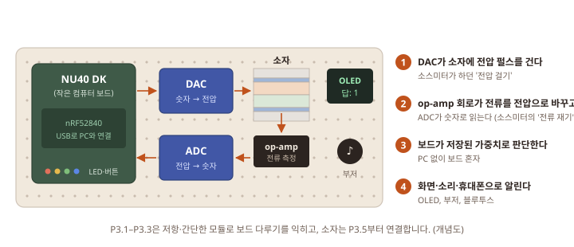
무엇을 하나 손바닥만 한 board(NU40 DK)에 작은 module 몇 개를 꽂아, ① board가 전압을 걸고 → ② 소자에 전류가 흐르고 → ③ 회로가 전류를 읽고 → ④ board가 스스로 판단해 불·소리로 알리는 장치를 만듭니다. board에 코드를 넣는 일은 Arduino IDE로, PC에서 도는 일(기록 정리·학습·board용 파일 만들기)은 P1처럼 VS Code 실습 파일 7개를 ▷로 돌려서 합니다. 실습 파일은 모두 board 없이(mock) 먼저 돌려 볼 수 있습니다.
이 프로젝트를 끝내면 얻는 것 (1) 첫날: board가 보낸 숫자가 PC 화면에 0.5초마다 찍히는 것. (2) 내 손으로 친 버튼 리듬의 CSV 파일 하나와 "마지막 순간만 보고 리듬을 맞힐 수 있나"를 비교한 정확도 그림. (3) 100 kΩ 저항으로 잰 전압·전류 표(소스미터 값과 몇 % 안에서 맞는지). (4) board가 PC 없이 혼자 낸 판단 24개와 맞힌 비율(숫자 하나).
왜 하나 P2에서는 책상 위 큰 장비(소스미터)와 PC가 전압을 걸고 전류를 읽었습니다. 그 일을 작은 board와 부품 몇 개가 대신할 수 있을까요? 된다면 몸에 붙이는 패치처럼 작은 장치가 됩니다. 그때 정확도·시간·에너지가 어떻게 달라지는지를 숫자로 봅니다.
- 준비board · Arduino IDE · VS Code
- →
- P3.1 첫 연결Arduino IDE · 화면에 숫자
- →
- P3.1a 버튼 리듬실습 1 · CSV + 그림
- →
- P3.1b 기억이 필요한가실습 2–3 · 정확도
- →
- R–C 첫 배선breadboard · τ 약 1초
- →
- P3.2–3 DAC·ADCmodule 2개 · 전압 표
- →
- P3.4 측정 회로op-amp · 저항으로 검증
- →
- P3.5 데이터 모으기실습 4–5
- →
- P3.6 PC 없이 판단실습 6–7 · LED·OLED
- →
- P3.7 에너지공정하게 재기
- →
- (선택) P3.8 ECG사람 없이
- →
- 끝맨 아래 [완료] 단추
힌트이 프로젝트의 완료 기준
오늘 할 첫 실험은 P3.1입니다. board 1개와 데이터용 USB 케이블만 있으면 됩니다(1–2시간). PC 화면에 board가 보낸 숫자가 찍히면 그날은 끝입니다. 안 되더라도 어느 단계에서 어떤 메시지가 났는지 적으면 그날은 끝입니다. board가 오기 전에도 VS Code 실습 1–7은 mock으로 먼저 해 볼 수 있습니다.
P3 전체가 끝났다고 볼 때: 측정 회로 검증에서 저항·RC를 잰 값이 소스미터와 맞고(수준 2), PC 없이 판단에서 같은 저장 feature에 대해 board와 Python의 점수가 일치하면 끝입니다. 소자를 다시 측정한 정확도가 P2와 같을 필요는 없습니다. 재측정하면 소자 state가 달라질 수 있으므로, 그 차이 자체를 기록합니다.
경고이 페이지의 코드·회로 상태 (꼭 읽을 것)
- VS Code 실습 7개의 코드·TERMINAL 출력·그림은
MOCK = True(board 없이)로 실제로 돌려 받은 것입니다.MOCK = False(진짜 board)로 바꾼 길은 아직 실물에서 돌려 보지 않았습니다. - firmware(
firmware/)는 NU40 DK용 컴파일만 확인했고(2026-11-02, NUBoards nRF52 1.0.2), board Upload와 실물 시험은 아직입니다. 회로는 설계안이고, 보호 기능(입력 거부, 범위 밖 전압 거부, DAC 쓰기 실패 시 중단)도 코드에만 있습니다. - 그래서 Serial Monitor 화면과 진짜 board로 돌린 실습 화면은 코드의 출력문을 읽어 예상한 모양이며, 제목에 "예상 (실물 미검증)"이라고 적었습니다. 숫자는 board마다 다릅니다.
이야기부터: 큰 장비의 일을 작은 board가
P2를 떠올려 보세요. 소자 하나를 재려면 소스미터라는 큰 장비가 전압을 걸고, 전류를 읽고, PC가 그 숫자를 받아 판단했습니다. 좋은 장비이지만 책상 하나를 차지하고, 전기를 많이 쓰고, 몸에 붙일 수는 없습니다.
이 프로젝트는 그 세 가지 일(전압 걸기, 전류 읽기, 판단하기)을 손바닥만 한 board와 부품 몇 개에게 나눠 맡깁니다. 전압은 DAC라는 작은 칩이 걸고, 전류는 op-amp로 만든 회로가 전압으로 바꾸고, ADC라는 칩이 그 전압을 숫자로 읽고, board가 저장된 weight로 판단해 LED·부저·OLED로 알립니다. 맨 위 모식도의 ①~④가 이 흐름입니다.
중요한 한계가 하나 있습니다. 만드는 것은 미리 저장해 둔 입력을 재생해 소자에 걸고 판단·알림하는 breadboard 시제품입니다. 심장 신호를 실시간으로 받아 처리하는 장치가 아닙니다. 그것이 되려면 무엇이 더 필요한지는 P3.8에서 따로 계산합니다.
소스미터가 하던 일을 무엇이 대신하는지, 무엇이 달라지는지를 한 표로 적어 둡니다. 용어는 아래 단계에서 하나씩 풀이합니다.
| 소스미터·PC가 하던 일 | P3에서 맡는 것 | 다른 점 |
|---|---|---|
| 전압 걸기 | MCP4725 DAC + 1.65 V 기준 전압 | 범위가 좁고(이상적으로 ±1.65 V), 전원 켜질 때 state를 직접 관리해야 함 |
| 전류 재기 | 션트 저항 또는 TIA + ADS1115 | 측정 범위·속도가 회로 값으로 고정됨 |
| 전류 제한(compliance) | 없음. 직렬 저항 R_lim이 최대 전류의 상한만 묶음 | 소스미터처럼 전압을 자동으로 낮추지 않음 |
| pulse 순서·mask·판단 | board(NU40 DK) 코드 | 실제 pulse 길이를 측정해 기록 |
기준 board 정하기
자동차로 치면 board는 엔진이고, 측정 회로는 바퀴와 브레이크입니다. 엔진을 비싼 것으로 바꿔도 바퀴가 헛돌면 차는 똑바로 못 갑니다. 이 프로젝트의 어려운 부분도 MCU가 아니라 아날로그 측정 회로(전류 범위, noise, 속도)입니다. 비싼 board가 미검증 회로 문제를 해결하지는 않습니다. 그래서 MCU는 예제가 가장 많은 것 하나를 기준으로 정하고, 측정 회로에 집중합니다.
board (개발 보드): 작은 컴퓨터 칩, USB 단자, LED, 버튼이 손바닥만 한 기판 하나에 올라 있는 것. 우리 코드를 넣으면 그 코드대로 움직입니다.
MCU (microcontroller): board 가운데 붙은 작은 컴퓨터 칩. PC보다 수천 배 느리지만 전기를 아주 적게 씁니다(동전 전지로도 돌 정도).
아날로그 측정 회로: 전류처럼 "연속으로 변하는 양"을 숫자가 되기 전에 다루는 회로. 예: 소자에 흐르는 0.000001 A를 ADC가 읽을 수 있는 1 V 정도의 전압으로 바꾸는 회로.
| 후보 | 장점 | 확인할 것 / 상태 | 이 프로젝트에서 |
|---|---|---|---|
| NU40 DK (nRF52840) | 저전력 블루투스(BLE)에 강하고, Arduino IDE로 씀. board에 LED 4개·버튼 4개 | board package 'NUBoards nRF52 by NUCODE'(Adafruit nRF52 코어를 바탕으로 한 것), I²C = P0.26·P0.27 [board package] | 기준 플랫폼 (코드 묶음의 firmware) |
| ESP32 DevKitC (ESP32-WROOM-32E) | 예제가 가장 많고 와이파이가 있음 | firmware는 같은 파일이 ESP32에서도 컴파일되도록 #if로 나눠 두었음(ESP32용 컴파일은 미확인) |
와이파이가 필요해질 때만 |
| 계측 중심 대안: 전기화학용 AFE 평가보드(예: ADI AD5940/AD5941 계열), 소형 USB 퍼텐쇼스탯 module(예: PalmSens EmStat Pico) | nA 측정·전위 제어가 이미 검증된 하드웨어 | 사양·가격·소프트웨어·전압 범위 미확인 | 전류가 10 nA 아래로 작거나 breadboard TIA가 맞지 않을 때 연구비로 검토 |
BLE (Bluetooth Low Energy): 전기를 적게 쓰는 블루투스. 이 프로젝트에서는 board가 휴대폰에 판단 결과 알림을 보낼 때 씁니다.
I²C: 칩끼리 전선 두 가닥(SDA = 데이터선, SCL = 시계선)으로 숫자를 주고받는 약속. 한 줄 전화선에 여러 집이 매달린 것처럼, DAC·ADC·OLED가 모두 이 두 선에 같이 매달립니다.
NU40 DK로 바꾸면서 달라진 것은 board에 붙은 부분뿐입니다. 측정 회로(DAC·ADC·TIA), pulse 순서, PC 쪽 Python 코드, 단계 순서는 그대로입니다.
노트(참고) ESP32 때와 NU40 DK에서 바뀐 곳
| 바뀐 곳 | ESP32 때 | NU40 DK |
|---|---|---|
| I²C 핀 | GPIO 21(SDA)·22(SCL), Wire.begin(21, 22) |
P0.26(SDA)·P0.27(SCL), Wire.begin() (board package가 정함) |
| 핀 번호 쓰는 법 | GPIO 번호 그대로 | P0.xx → xx, P1.xx → 32 + xx (예: P1.04 → 36) |
| P3.6 알림 LED·부저 | GPIO 26·33·27 | board LED1·LED2(따로 달 필요 없음), 부저 P1.04 |
| P3.6 블루투스 | ESP32 BLEDevice |
board package의 Bluefruit BLEUart (같은 Nordic UART 서비스) |
| C servo·HX711 | ESP32Servo, GPIO 18·16·17 |
board package의 Servo, P1.05·P1.06·P1.07 |
| USB 시리얼 | board의 USB 변환 칩 | nRF52840 칩 안의 USB. 켠 뒤 Serial Monitor가 열릴 때까지 최대 3초 기다리게 해 둠 |
노트(참고) NU40 DK로 안 되거나 다른 것이 필요한 경우
이 페이지와 P2·P4·P1의 모든 단계는 NU40 DK 하나로 됩니다(P1·P2는 board가 필요 없음). 다른 것을 사야 하는 경우는 아래뿐입니다.
| 상황 | 이유 | 살 것 |
|---|---|---|
| 결과를 와이파이로 공유기·서버에 바로 보내야 할 때 (지금 단계에는 없음) | NU40은 블루투스만 있음 | ESP32 DevKitC 1개 |
| 소자 전류가 10 nA보다 작거나, 전위를 정밀하게 제어해야 할 때 | board가 아니라 측정 회로의 한계. 어떤 board로 바꿔도 같음 | 위 표의 계측 중심 대안(AFE 평가보드, 소형 퍼텐쇼스탯) |
| 5 V 전용 module을 쓰고 싶을 때 (센서 키트 일부) | NU40 핀은 3.3 V. 5 V 신호를 넣으면 칩이 상할 수 있음 | 갖고 있는 아두이노 우노로 따로 연습. 이 프로젝트 회로에는 쓰지 않음 |
| P4의 servo 전원 | servo는 5 V·순간 1 A 이상이라 어떤 board의 3.3 V 핀으로도 못 돌림 | 5 V 2 A 어댑터 (C 부품 표) |
NU40 board에 IMU를 추가하는 옵션은 P1·P2·P3·C 어디에도 쓰지 않습니다.
중요5 V 금지
NU40 DK의 핀은 3.3 V까지만 받습니다. 어떤 module도 5 V 핀에 연결하지 않습니다. 5 V 신호를 넣으면 칩이 상할 수 있습니다.
준비물
첫 실험(P3.1)은 board와 USB 케이블만 있으면 됩니다. 나머지는 그 단계에 가서 삽니다. 부품 이름이 처음이면 아래 표에서 "무엇인가"만 훑어보고, 자세한 쓰임은 그 단계에서 다시 설명합니다.
| 부품 | 무엇인가 | 처음 쓰는 단계 |
|---|---|---|
| NU40 DK | 이 프로젝트의 board. 핀헤더(꽂는 다리)가 납땜된 것으로 삽니다 | P3.1 |
| 데이터용 USB 케이블 | board와 PC를 잇는 선. 충전 전용 케이블은 겉이 같아도 데이터 선이 없어서 Upload가 안 됩니다 | P3.1 |
| breadboard | 납땜 없이 부품 다리를 꽂아 잇는 구멍판. 번호 하나를 행이라 부릅니다. 한 행의 a–e 다섯 구멍, f–j 다섯 구멍이 각각 속으로 이어져 있고, 위·아래의 긴 빨강(+)·파랑(−) 줄(rail)은 한 줄 전체가 이어진 전원용입니다(그림) | R–C 첫 배선 |
| jumper wire | 구멍끼리, 또는 board와 breadboard를 잇는 짧은 전선. 수-수(양쪽 다 핀), 수-암(한쪽은 구멍)이 있습니다 | R–C 첫 배선 |
| 디지털 멀티미터 | 전압·저항값을 재고, 두 점이 이어졌는지 소리로 알려 주는(continuity) 손 계측기. board가 읽은 숫자가 맞는지 대조합니다 | R–C 첫 배선 |
| DAC module (MCP4725) | DAC = digital-to-analog converter. board가 보낸 숫자(0–4095)를 전압(0–3.3 V)으로 바꿔 내보내는 칩. "전압 걸기" 담당 | P3.2 |
| ADC module (ADS1115) | ADC = analog-to-digital converter. 전압을 숫자로 바꿔 board에 보내는 칩. "전류 읽기"의 마지막 단계 담당 | P3.2 |
| resistor (저항) | 전류를 일정 비율로 줄이는 부품. 값의 단위는 Ω(옴). 전류 상한을 묶고(R_lim), 전류를 전압으로 바꾸는(R_f, R_s) 데 씁니다 | R–C 첫 배선 |
| capacitor | 전기를 잠깐 담아 두는 부품. 단위는 F(패럿). 저항과 짝지으면 "천천히 변하는" 모의 소자가 됩니다 | R–C 첫 배선 |
| op-amp (operational amplifier) | 작은 전기 신호를 키우거나 전류를 전압으로 바꾸는 칩. MCP6002는 한 칩에 두 개가 들어 있습니다 | P3.4 |
| J1 (2핀 jumper) | 손으로 빼고 꽂는 작은 스위치. 소자로 가는 전류 길을 끊는 안전장치 | P3.4 |
| OLED (SSD1306) | 손톱만 한 검은 화면. 판단 결과를 글자로 보여 줍니다 | P3.6 |
| 액티브 부저 | 전기를 주면 삐 소리가 나는 작은 부품 | P3.6 |
| USB 전력 측정기 | USB 선 사이에 끼워 전력(mW)을 보여 주는 작은 장치 | P3.7 |
노트구매 목록 (단계별)
가격은 구매할 때 다시 확인합니다. DIP(breadboard에 꽂는 모양)가 편하지만 꼭 DIP일 필요는 없습니다. 표면실장(SMD) 칩도 변환 기판(breakout)에 올린 module이면 같이 쓸 수 있습니다. 연구실에 이미 있는 것(멀티미터, breadboard, 저항·capacitor 키트, USB 케이블)은 사지 않습니다. "측정 뒤 선택" 부품은 P2.1의 전압·전류 범위를 본 뒤 정하고, 같은 일을 하는 다른 module로 바꿔도 됩니다(대체 가능). 가격·판매처·배송비는 이 페이지에서 확인하지 않았으므로 적지 않았습니다 미확인. 비싼 board로 바꿔도 아날로그 측정 회로 문제는 그대로 남습니다.
| 단계 | 품목 | 추천·기준 | 수량 |
|---|---|---|---|
| 지금 | NU40 DK | 핀헤더 납땜된 것. IMU·케이스 옵션은 이 프로젝트에 필요 없음. 와이파이가 필요해지면 그때 ESP32 DevKitC | 1 |
| 지금 | breadboard 830홀, jumper wire(수-수·수-암), 길이별 고정 jumper 키트 | 전원줄이 가운데 끊긴 제품 주의 | 각 2 |
| 지금 | 저항 키트 1% 금속피막, 세라믹·필름·전해 capacitor 키트 | 100 kΩ 저항과 10 µF 전해 capacitor (R–C 첫 배선용), 1 µF 필름 capacitor 몇 개 (RC 모의 소자용) | 1 |
| 지금 | 디지털 멀티미터 | 자동 범위, DC mV 0.1 mV, µA 범위 | 1 |
| 지금 | 데이터용 USB 케이블, LED·220 Ω, 2핀 jumper(J1용) | 충전 전용 케이블은 Upload 안 됨 | 몇 개 |
| 측정 뒤 선택 | DAC module MCP4725 | 3.3 V 동작, 주소 표기, VOUT·VCC·GND·SDA·SCL 핀 이름을 module 실크로 확인 | 2 |
| 측정 뒤 선택 | ADC module ADS1115 | ADDR 핀, module의 I²C 풀업 저항 유무 확인 | 2 |
| 측정 뒤 선택 | op-amp | 전류 ≥ 1 µA: MCP6002 (DIP-8). 10 nA–1 µA: 입력 바이어스 전류가 fA–pA인 제품(예: LMC6482). 그 아래: 위의 계측 중심 대안 | 각 3–5 |
| 측정 뒤 선택 | OLED SSD1306(I²C, 0x3C), 액티브 부저, USB 전력 측정기 | 전력 측정기는 해상도(mW·mA 단위)를 확인 | 각 1 |
| P3.8 | ECG 시뮬레이터 또는 데이터 재생 장치, AD8232 module | 사람 연결은 P3.8의 별도 관문 | 1 |
구하는 곳: 디바이스마트, 엘레파츠, 아이씨뱅큐(module·공구), 메카솔루션·로봇사이언스몰(정품 board·module), 디지키·마우저(정밀 칩). 납땜이 필요한 module이면 온도 조절 인두기·무연 실납·플럭스·보안경을 같이 삽니다.
준비: PC에 Arduino IDE 2 깔기
Python 쪽 준비(처음 한 번: 내 컴퓨터 준비하기)는 P1에서 끝냈다고 보고, 여기서는 board용 프로그램을 깝니다. 한 번만 하면 됩니다(약 30분). 설치 방법은 제조사 튜토리얼에서 확인한 것입니다 [NU40 DK 시작하기] [실습 가이드].
Arduino IDE 2: board에 넣을 코드를 쓰고, board로 보내는 무료 프로그램. "아두이노"라는 이름이 붙어 있지만 NU40 DK처럼 다른 board에도 씁니다. 한글 문서를 쓰는 데 워드 프로그램이 필요하듯, board 코드를 쓰는 데 이 프로그램이 필요합니다.
board package: "이 board는 이렇게 생겼다(핀 번호, 칩 종류)"를 Arduino IDE에 알려 주는 설치 묶음. 프린터마다 드라이버를 까는 것처럼 board마다 하나씩 설치합니다.
힌트이 페이지에서 쓰는 프로그램 두 개
| 무엇 | 어디서 | 하는 법 |
|---|---|---|
board에 넣을 코드 = sketch (#include, void setup()처럼 생김) |
Arduino IDE | 붙여 넣거나 파일을 열고 → Upload(→) |
PC에서 도는 실습 파일 (p3_…py) |
VS Code | mylabs에 새 파일 → 붙여 넣기 → Ctrl+S → ▷ (첫 실습과 같음) |
board가 PC로 보낸 글자는 Arduino IDE의 Serial Monitor(P3.1에서 설명)에서 봅니다. Serial Monitor와 진짜 board를 쓰는 실습(MOCK = False)은 같은 COM 포트(USB로 꽂힌 board의 이름)를 동시에 쓰지 못합니다. 실습을 ▷ 하기 전에 Serial Monitor 탭을 닫습니다.
코드 상자 오른쪽 위의 복사 아이콘(네모 두 개 겹친 모양)을 누르면 내용이 복사됩니다. Arduino IDE 메뉴는 영어 화면 기준입니다. 한국어로 나오면 File = 파일, Sketch = 스케치, Tools = 도구, Board = 보드, Port = 포트, Preferences = 기본 설정처럼 이름만 다릅니다(File → Preferences의 Language를 English로 바꾸면 이 페이지와 같아짐).
Arduino IDE 2 내려받아 설치
할 일 (10–15분)
- 브라우저에서 arduino.cc/en/software를 엽니다.
- Windows 설치 파일(Arduino IDE 2.x, "Win 10 and newer, 64 bits")의 내려받기를 누릅니다. 기부 화면이 나오면 JUST DOWNLOAD를 누르면 됩니다. 파일은
다운로드폴더에 저장됩니다. - 받은
arduino-ide_2.x.x_Windows_64bit.exe를 더블클릭합니다. "이 앱이 디바이스를 변경하도록 허용하시겠어요?"가 뜨면 예. - 사용권 화면에서 I Agree, 다음 화면들은 그대로 Next → Install.
- 설치 중 "이 장치 소프트웨어를 설치하시겠습니까?" 창이 뜨면 설치를 누릅니다(여러 번 뜰 수 있음).
- 마지막 화면에서 Run Arduino IDE에 체크된 채 Finish.
Arduino IDE가 열리고 흰 편집 창에 void setup() { 로 시작하는 글이 미리 적혀 있으면 열린 것입니다. 처음 열 때 아래쪽 검은 칸(Output)에 내려받기 글이 몇 분간 흐를 수 있습니다. 멈출 때까지 기다립니다. Windows 방화벽 창이 뜨면 액세스 허용.
Preferences 창에 board package 주소 넣기
할 일
- 아래 코드 상자 오른쪽 위의 복사 아이콘을 누릅니다.
- Arduino IDE 위쪽 메뉴에서 File → Preferences… 를 누릅니다. 작은 설정 창이 뜹니다.
- 창 아래쪽의 Additional boards manager URLs 긴 입력 칸을 한 번 클릭하고 Ctrl+V로 붙여 넣습니다. 칸에 이미 다른 주소가 있으면 그 끝에 쉼표(
,)를 하나 찍고 이어서 붙여 넣습니다. - 오른쪽 아래 OK.
https://raw.githubusercontent.com/Nucode01/Adafruit_nRF52_Arduino/refs/heads/master/package_nuduino_index.jsonAdditional boards manager URLs: board package를 어디서 받아 올지 적는 인터넷 주소 칸. 제조사가 주소를 알려 줍니다.
이 주소가 "NU40 DK board package는 여기 있다"를 Arduino IDE에 알려 줍니다. 이것을 안 넣으면 다음 단계의 검색에서 아무것도 안 나옵니다.
Boards Manager에서 NUCODE 검색해 설치
할 일 (3–10분)
- 창 왼쪽 세로 줄의 두 번째 아이콘(board 모양)을 누릅니다. 왼쪽에 Boards Manager 칸이 열립니다.
- 위 검색 칸에
NUCODE를 칩니다. - NUBoards nRF52 by NUCODE가 나오면 그 아래 INSTALL을 누릅니다. 아래 Output 칸에 내려받기 글이 흐르고, 끝나면 그 항목에
INSTALLED가 붙습니다. - 위쪽 메뉴 Tools → Board → NUBoards nRF52 → NU40DK nRF52840을 고릅니다.
Boards Manager: Arduino IDE 안에서 board package를 이름으로 검색해 설치하는 칸. 휴대폰의 앱 스토어와 같은 역할입니다.
검색 결과가 비어 있으면 바로 앞 단계의 주소가 틀리게 들어간 것입니다. File → Preferences를 다시 열어 주소를 지우고 다시 붙여 넣습니다. 설치 중 빨간 글이 나오면 인터넷 연결을 확인하고 INSTALL을 한 번 더 누릅니다.
board를 USB로 꽂고 COM 번호 확인
할 일 (5분)
- 데이터용 USB 케이블로 board와 PC를 잇습니다. board의 전원 LED가 켜집니다.
- 키보드의 Windows 키를 누르고
장치 관리자라고 친 뒤 Enter. - 목록에서 포트(COM & LPT) 왼쪽의
>를 눌러 펼칩니다. - USB를 한 번 뺐다가 다시 꽂아 봅니다. 그때 사라졌다 다시 생기는 줄(예:
USB 직렬 장치 (COM5))이 내 board이고, 괄호 안 번호가 COM 번호입니다.
장치 관리자: Windows가 PC에 꽂힌 장치 목록을 보여 주는 창.
COM 포트: Windows가 USB로 꽂힌 board에 붙이는 이름(COM3, COM5 …). 아파트 호수처럼, PC 프로그램은 이 이름으로 board를 찾아갑니다. 번호는 PC마다, USB 구멍마다 다릅니다.
포트(COM & LPT)
USB 직렬 장치 (COM5)이 번호를 적어 둡니다. 진짜 board를 쓰는 실습 파일의 PORT = "COM5" 자리에 이 번호를 넣습니다. board USB가 칩 안에 있어 따로 드라이버를 깔지 않아도 되는 경우가 많습니다. 다른 USB 구멍에 꽂으면 번호가 바뀔 수 있으니 그때마다 여기서 다시 봅니다.
케이블을 꽂아도 새 줄이 안 생기면 케이블이 충전 전용인 경우가 가장 흔합니다. 다른 케이블로 바꿉니다. 그래도 안 되면 다른 USB 구멍에 꽂아 봅니다.
하드웨어는 네 단계로, 하나씩 확인하고 넘어가기
회로를 한 번에 다 꽂으면, 안 될 때 어디가 문제인지 모릅니다. 그래서 USB·LED·버튼 → 저항·R–C → DAC·ADC → 전류 측정 회로 순서로 하나씩 더하고, 단계마다 "정상이면 보이는 숫자"를 확인한 뒤 다음으로 갑니다. 앞 단계가 정상이었다면, 다음 단계에서 문제가 생겼을 때 새로 꽂은 것만 보면 됩니다.
아래 카드 네 개가 그 점검표입니다. 숫자는 설계에서 계산한 기대값이며, 실물에서 확인한 값이 아닙니다 [실물 미검증]. 자세한 순서는 각 단계에 있습니다.
USB·LED·버튼 (P3.1·P3.1a)
- 연결 전 상태: breadboard에 아무것도 없음. board와 데이터용 USB 케이블만.
- 꽂는 것: USB 한 가닥. 핀에는 아무것도 안 꽂음(LED1·버튼1은 board에 붙어 있음).
- 정상 값: LED1이 0.5 s마다 깜빡임. Serial Monitor 숫자가 500씩 늚. 버튼1을 누르는 동안
btn= 1.
먼저 Tools → Port에 COM 번호가 있는지(없으면 충전 전용 케이블), 그다음 baud가 115200인지 봅니다.
저항·R–C (R–C 첫 배선)
- 연결 전 상태: USB 뺌. breadboard는 비어 있음. rail이 가운데서 끊겼는지 멀티미터로 확인해 둠.
- 꽂는 것: P1.04 → 10행 a, A0 → 14행 a, GND → 위 − rail. 100 kΩ: 10행 c ↔︎ 14행 c. 10 µF: + 14행 d, − 15행 d. jumper: 15행 a ↔︎ 위 − rail.
- 정상 값:
tau measured0.8–1.2 s (100 kΩ × 10 µF = 1.0 s). 충전 끝 A0 ≈ 3.3 V, 1 s 시점 ≈ 2.1 V.
모두 0 V 근처 → P1.04 선과 10행. 처음부터 3.3 V 근처 → A0 선이 14행이 아니라 10행에 있음. 값이 튐 → 15행–rail–GND 선.
DAC·ADC (P3.2–P3.3)
- 연결 전 상태: USB 뺌. R–C 부품·선은 뽑음(같은 행을 씀). board 3.3V·GND → 위 + rail·− rail.
- 꽂는 것: 두 module의 VCC·GND → rail, SDA → P0.26, SCL → P0.27, ADC ADDR → GND, DAC VOUT → ADC A0.
- 정상 값: I²C 스캐너에 주소 2개(0x48, 그리고 0x60–0x63 중 하나). DAC 코드 2048 → 멀티미터와 ADC 모두 약 1.65 V(서로 수십 mV 안).
주소가 하나도 없으면 SDA·SCL이 바뀌었는지, GND가 이어졌는지. 하나만 나오면 안 나온 module의 VCC·GND 행.
전류 측정 회로 (P3.4)
- 연결 전 상태: USB 뺌, J1 뺌. DAC·ADC 배선은 그대로 두고 DAC VOUT–ADC A0 선만 뺌.
- 꽂는 것: MCP6002(30–33행, 가운데 홈 걸침), 10 kΩ 두 개 + 1 µF(36행), R_f·C_f, R_lim(40–44행), J1(44–45행). 소자 자리 = 45행 ↔︎ 49행.
- 정상 값: 켠 뒤
READY VREF=1.4–1.9 V. 소자 자리에 100 kΩ,s명령 → +0.5 V 줄에서 약 +5000 nA(기대값과 몇 % 안). 0 V 줄은 몇 nA(op-amp 오프셋).
E,-1,io_init → I²C 주소와 A3의 V_ref부터. [포화] → R_f가 너무 큼. 전류가 일정 비율로 틀림 → R_f 실제 값과 DAC 보정.
P3.1. NU40 DK 첫 연결
새로 산 board는 아직 아무 일도 할 줄 모릅니다. 새 휴대폰에 앱을 하나 깔아 보는 것처럼, 이 단계에서는 아주 짧은 지시문 하나("0.5초마다 LED를 깜빡이고, 켜진 뒤 지난 시간을 PC로 보내라")를 board 안에 넣고, board가 그대로 하는지 PC 화면으로 엿봅니다. 부품은 아무것도 꽂지 않습니다.
| 할 일 | 하는 곳 | 결과로 보는 것 |
|---|---|---|
| 짧은 sketch 붙여 넣고 Upload | Arduino IDE | board의 LED1이 0.5초마다 깜빡임 |
| Serial Monitor 열기 | Arduino IDE | 500씩 늘어나는 숫자 |
firmware: board 안에서 도는 코드. PC 프로그램과 달리 board에 한 번 넣으면 전원을 켤 때마다 저절로 돕니다. 전자레인지 안에 들어 있는 "버튼을 누르면 돌기 시작" 같은 코드가 firmware입니다.
sketch: Arduino IDE에서 코드 한 벌을 부르는 말. 파일 이름이 .ino로 끝나고, 같은 이름의 폴더 안에 들어 있습니다(예: p3_blink\p3_blink.ino).
이 단계가 끝나면 이런 화면이 생깁니다. board의 LED1이 0.5초마다 깜빡이고, Serial Monitor에 숫자가 한 줄씩 늘어납니다.
이어서 하기. 중간에 Arduino IDE를 닫았다면 다시 열고 File → Open Recent에서 마지막 sketch를 고르면 그 카드부터 이어집니다.
새 sketch 열고 코드 붙여 넣기
할 일 board는 USB로 꽂아 둔 채입니다.
- Arduino IDE 위쪽 메뉴 File → New Sketch를 누릅니다. 새 창이 하나 더 열리고, 탭 이름이
sketch_nov6a.ino처럼 되어 있습니다. 이 새 창에서 계속합니다. - 흰 편집 창 안을 한 번 클릭하고 Ctrl+A(모두 선택) → Delete. 미리 적혀 있던
void setup() { … }글이 모두 지워져 빈 창이 됩니다. - 아래 코드 상자 오른쪽 위의 복사 아이콘을 누릅니다.
- 빈 편집 창을 클릭하고 Ctrl+V. 코드가 그대로 들어가면 됩니다.
#include <Adafruit_TinyUSB.h> // NU40: USB 시리얼(Serial)을 쓰려면 필요 (없으면 링크 오류)
void setup() {
Serial.begin(115200);
while (!Serial && millis() < 3000) delay(10); // USB 시리얼이 열릴 때까지 최대 3초
pinMode(LED_BUILTIN, OUTPUT); // NU40: LED1 (P0.13)
}
void loop() {
digitalWrite(LED_BUILTIN, !digitalRead(LED_BUILTIN));
Serial.println(millis());
delay(500);
}뜻: "켜지면 USB 통신을 115200으로 열고, 0.5초마다 LED1을 뒤집고 지금 시각(ms)을 한 줄 보내라." 이 코드는 NU40용으로 컴파일을 확인했습니다(Upload는 미확인).
millis(): board가 켜진 뒤 지난 시간을 1/1000초(ms) 단위로 세는 값. 켜고 3초 뒤면 3000. 이 코드는 이 숫자를 0.5초마다 PC로 보냅니다.
이름 붙여 저장 (Save As)
할 일
- 위쪽 메뉴 File → Save As… 를 누릅니다. Windows 저장 창이 뜨고, 보통
문서\Arduino폴더가 열려 있습니다. - 아래 파일 이름 칸의 글을 지우고
p3_blink를 칩니다. - 저장. 편집 창 위의 탭 이름이
p3_blink.ino로 바뀌면 됩니다.
문서\
Arduino\
p3_blink\ ← 새로 생김 (sketch는 같은 이름의 폴더에 들어감)
p3_blink.inoboard와 port 고르기
할 일 창 위쪽, 화살표 단추 오른쪽의 선택 상자(board 이름이 적힌 칸)를 봅니다.
NU40DK nRF52840과 내 COM 번호(예:COM5)가 보이면 그대로 둡니다.Select Board나 다른 이름이 보이면: 그 상자를 클릭 → Select other board and port… → 왼쪽 BOARDS 검색 칸에NU40→ NU40DK nRF52840 클릭 → 오른쪽 PORTS에서 COM5(내 번호) 클릭 → OK.
위쪽 메뉴 Tools → Board, Tools → Port로 봐도 같습니다.
port 목록이 비어 있거나 Tools → Port가 회색이면 board가 꽂혀 있지 않거나 케이블이 충전 전용입니다. COM 번호 확인으로 돌아갑니다.
Upload 단추(→) 누르고 Output 창 확인
할 일
- 창 위쪽 왼쪽의 오른쪽 화살표(→) 단추를 한 번 누릅니다.
- 아래 Output 창에
Compiling sketch...부터 글자가 흐릅니다. 첫 번째는 1–2분 걸립니다. 그동안 아무것도 누르지 않습니다. - 오른쪽 아래에 Done uploading. 알림이 뜨고, board의 LED1이 0.5초마다 깜빡이면 성공입니다.
Upload: 코드를 board로 보내는 것. 위쪽 왼쪽의 오른쪽 화살표(→) 단추입니다.
Verify (컴파일): 사람이 쓴 코드를 board 칩이 알아듣는 0과 1로 번역하는 것. 위쪽 왼쪽의 체크(✓) 단추. Upload를 누르면 컴파일이 먼저 자동으로 됩니다.
Output 창: Arduino IDE 아래쪽 검은 칸. 컴파일·Upload가 어디까지 진행됐는지 글로 나옵니다.
Sketch uses 30752 bytes (3%) of program storage space. Maximum is 811008 bytes.
Global variables use 7920 bytes (3%) of dynamic memory, ...
Upgrading target on COM5 with DFU package ...\p3_blink.ino.zip. ...
...
########################################
Activating new firmware
Device programmed.숫자와 중간 줄은 달라도 됩니다. 맨 끝의 Device programmed.(또는 Upload가 끝났다는 줄)와 Done uploading. 알림이 중요합니다. 이 Output 형식은 board package가 바탕으로 한 Adafruit nRF52 코어의 일반적인 모양이며, NU40에서 똑같은지는 확인하지 않았습니다 미확인.
Upload가 실패하면 먼저 board·port 선택 상자에서 COM 포트를 다시 고르고 한 번 더 누릅니다. 그래도 안 되면 board 설명서의 '부트로더 모드' 들어가는 법(리셋 버튼 조작)을 따릅니다 [제조사 안내 확인]. 부트로더 모드에 들어가면 COM 번호가 바뀔 수 있으니 port를 다시 고릅니다. Adafruit_TinyUSB.h: No such file or directory가 나오면 board가 NU40DK nRF52840으로 선택되지 않은 것입니다.
Serial Monitor 열고 115200 고르기
할 일
- 창 오른쪽 위의 돋보기 아이콘(Serial Monitor)을 누릅니다. 아래 Output 옆에 Serial Monitor 탭이 열립니다.
- 그 칸의 오른쪽 위 드롭다운(
9600 baud처럼 적힌 것)을 눌러 115200 baud를 고릅니다. - 숫자가 0.5초마다 한 줄씩 늘어나면 성공입니다.
Serial Monitor: board가 USB로 보낸 글자를 PC 화면에 보여 주는 칸. 오른쪽 위의 돋보기 아이콘으로 엽니다.
baud: board와 PC가 글자를 주고받는 속도(1초에 몇 bit). 두 사람이 같은 빠르기로 말하고 들어야 알아듣듯, 양쪽이 같아야 글자가 깨지지 않습니다. 이 프로젝트의 모든 코드는 115200입니다.
3012
3512
4012
4512
5012숫자는 board가 켜진 뒤 지난 ms이므로 내 board에서는 다른 값이 나옵니다. 500씩 늘어나는 것만 맞으면 됩니다.
글자가 ⸮⸮⸮처럼 깨지면 baud가 115200이 아닙니다. 아무것도 안 나오면 Serial Monitor 탭을 닫았다 다시 열거나, board의 리셋 버튼을 한 번 누릅니다.
기록 남기기 (완료 조건)
할 일 연구 노트에 아래 네 가지를 적습니다. 다음 단계부터 계속 씁니다.
- board 이름: NU40DK nRF52840
- COM 번호: ______
- Arduino IDE 버전(Help → About Arduino IDE)과 'NUBoards nRF52' package 버전(Boards Manager에 표시): ______
- 안 된 단계가 있으면 그때 나온 메시지 한 줄
질문. board를 PC에서 뽑아 USB 보조배터리에 꽂으면 LED1은 어떻게 될까요? 다시 PC에 꽂고 Serial Monitor를 열면 숫자는 몇부터 나올까요? 먼저 적어 본 뒤 정답을 봅니다.
LED1은 계속 0.5초마다 깜빡입니다. 코드(firmware)는 board 안에 들어 있어서, 전기만 들어오면 PC가 없어도 돕니다. Serial Monitor는 "board가 보내는 글자를 PC가 엿보는 창"일 뿐입니다.
숫자는 PC에 다시 꽂은 순간부터 센 작은 값입니다. 예: 꽂고 10초 뒤에 Serial Monitor를 열면 10000 근처. USB를 뽑는 순간 전원이 끊겨 board가 꺼졌다가 새로 켜졌기 때문입니다. millis()는 "켜진 뒤 지난 시간"이라 켤 때마다 0부터 다시 셉니다.
관찰할 점. board는 PC 없이도 돕니다. 이것이 PC 없이 판단의 바탕입니다.
다음 단계 조건. Serial Monitor에 500씩 늘어나는 숫자가 보이면 P3.1a로 갑니다.
P3.1a. 버튼 리듬을 CSV로 남기기
P3.1에서 board가 숫자를 보냈다면, 이제 내 손이 만든 신호를 처음으로 파일에 남깁니다. board가 버튼1을 1초에 200번 들여다보고 "지금 눌렸나(1), 아니나(0)"를 한 줄씩 PC로 보내면, PC가 받아 CSV 파일에 적습니다. 부품은 더 사지 않습니다.
| 할 일 | 하는 곳 | 결과로 보는 것 |
|---|---|---|
| 실습 1을 mock으로 | VS Code (board 없이) | 가짜 board가 보낸 줄 → CSV, 리듬 계단 그림 |
| B1a_rhythm 올리기 | Arduino IDE | Serial Monitor에 n,t_ms,btn,a0 줄이 흐름 |
| 실습 1을 진짜 board로 | VS Code (MOCK = False) |
내 손 리듬의 CSV와 그림 |
sampling rate 200 Hz: 1초에 200번, 곧 5 ms마다 한 번 버튼 state를 보고 한 줄씩 보냅니다. 40초 기록이면 40 × 200 = 8,000줄.
CSV: 숫자를 쉼표로 나눠 적은 글 파일. 엑셀로 열립니다. 우리 기록은 모두 이 형식입니다.
먼저 '실패 모양'부터 봅니다. 이 기록에서 나올 수 있는 실패는 세 가지이고, 실습 1이 이것들을 세어 줍니다.
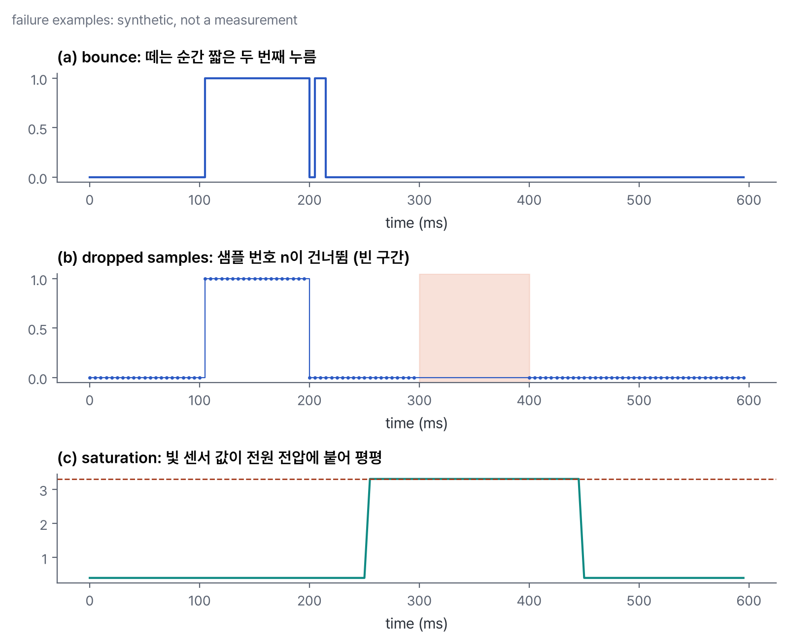
bounce (접점 튐): 버튼을 뗄 때 속의 금속 조각이 아주 짧게 한 번 더 붙는 것. 공이 바닥에서 통통 튀는 것과 같습니다. 뗀 뒤 30 ms 안에 다시 붙은 누름은 버립니다.
dropped samples (빠진 줄): PC가 바빠서 board가 보낸 줄을 못 받은 구간. 줄 번호 n이 예를 들어 59 → 80으로 건너뜁니다.
saturation (포화): 측정값이 잴 수 있는 범위의 끝(여기서는 3.3 V나 0 V)에 붙어 평평해지는 것. 2 m까지만 적힌 자로 2.1 m인 사람을 재면 "2 m"로만 나오는 것과 같습니다.
실습 1. board가 보내는 줄을 CSV로 (p3_1_record.py)
board(B1a_rhythm)는 5 ms마다 n,t_ms,btn,a0 네 숫자를 한 줄로 보냅니다. 이 실습은 그 줄을 받아 줄이 빠졌는지, 몇 번 눌렀는지, bounce가 있었는지 세고 CSV에 저장합니다.
처음에는 MOCK = True라서 컴퓨터 속 가짜 board가 사람처럼 리듬 X를 친 줄을 만들어 줍니다. 코드가 무엇을 받고 무엇을 세는지 먼저 보고, 진짜 board는 그다음에 붙입니다.
할 일 mylabs에 새 파일 p3_1_record.py → 아래 코드 붙여 넣기 → Ctrl+S → ▷. (VS Code가 처음이면 첫 실습: 코드 붙여 넣고 ▷ Run부터.)
mylabs/p3_1_record.py
# ============================================================
# P3 실습 1 · 버튼 리듬을 CSV로 남기기
#
# 전체 과정:
#
# board(B1a_rhythm)가 5 ms마다 한 줄씩 보낸다: n,t_ms,btn,a0
# ↓
# PC가 SECONDS초 동안 그 줄을 받는다
# (MOCK = True면 board 대신 컴퓨터 속 '가짜 board'가 줄을 만든다)
# ↓
# 줄을 숫자로 나누기 → 빠진 줄·누름·접점 튐(bounce) 세기
# ↓
# CSV 파일에 저장 + 그림: 내가 친 리듬이 계단 모양으로 보인다
#
# 처음에는 MOCK = True로 board 없이 돌려 봅니다.
# board에 B1a_rhythm을 올린 뒤에는 MOCK = False, PORT = 내 COM 번호.
# ============================================================
import sys
from pathlib import Path
import numpy as np
import matplotlib.pyplot as plt
# 공용 코드(python 폴더)를 쓸 수 있게 경로를 잡는다.
# 이 파일은 ion-projects-code/mylabs/ 안에 있으므로, 한 칸 위가 ion-projects-code 폴더.
CODE = Path(__file__).resolve().parent.parent # ion-projects-code 폴더
sys.path.insert(0, str(CODE / "python")) # 공용 코드 폴더를 찾을 수 있게
import b1_record # board 줄 읽기·CSV 저장 (P3.1a 공용 코드)
import b1_memory # 가짜 리듬 만들기 (MOCK일 때만 씀)
# ============================================================
# 0. 그림 설정 — 건드리지 않아도 됩니다
# ============================================================
plt.rcParams.update({
"font.family": "Malgun Gothic", "axes.unicode_minus": False, "font.size": 11,
"legend.frameon": False, "axes.spines.top": False, "axes.spines.right": False,
})
# ============================================================
# 1. 바꿔 볼 수 있는 설정값 ← 여기를 바꿔 보세요
# ============================================================
MOCK = True # True: board 없이 가짜 board로 / False: 진짜 board에서 받기
PORT = "COM5" # 진짜 board의 COM 번호 (장치 관리자에서 본 번호)
LABEL = "X" # 이번 기록에서 친 리듬 이름: "X" 또는 "Y"
SESSION = "s1" # 몇 번째 회차: "s1", "s2", "s3" …
SECONDS = 40 # 몇 초 동안 받을까
MOCK_DROP = 0 # (가짜 board만) PC가 줄을 놓친 구간을 몇 군데 만들까. 0, 1, 2 …
# ============================================================
# 2. 줄 받기
# ============================================================
#
# board가 보내는 한 줄 = "n,t_ms,btn,a0"
# n : 줄 번호 (0, 1, 2 …). 하나씩 늘어야 정상. 건너뛰면 그 사이 줄을 놓친 것
# t_ms : board가 켜진 뒤 지난 시간 (ms)
# btn : 버튼 1 = 눌림, 0 = 뗌
# a0 : 빛 센서 값 (0–4095). 센서를 안 꽂았으면 아무 값
# ============================================================
FS = 200 # board는 1초에 200줄 (5 ms마다 한 줄)
def mock_board_lines(label, seconds, n_drop, seed=3):
"""가짜 board: 사람이 리듬을 친 것처럼 '200 Hz 줄'을 만든다 (실측 아님)."""
rng = np.random.default_rng(seed)
n_rhythms = int(seconds / 4.5) + 1 # 리듬 한 번 + 쉼 ≈ 4.5초 (넉넉히 만들고 SECONDS에서 자름)
t, btn, light = b1_memory.synth_stream(label, n_rhythms, rng)
keep = t < seconds
lines = [f"{i},{3061 + round(t[i] * 1000)},{btn[i]},{int(light[i] / 3.6 * 4095)}"
for i in np.where(keep)[0]]
for _ in range(n_drop): # PC가 바빠 줄 20개(0.1초)를 못 받은 것처럼
k = rng.integers(200, len(lines) - 200)
del lines[k:k + 20]
return lines
if MOCK:
lines = mock_board_lines(LABEL, SECONDS, MOCK_DROP)
rows = [r for r in (b1_record.parse(x) for x in lines) if r]
print(f"(MOCK) fake board, {SECONDS} s")
print("first 3 lines from the board:")
for x in lines[:3]:
print(" ", x)
else:
print(f"recording {SECONDS} s from {PORT} ... tap button 1 now")
rows = b1_record.record(PORT, SECONDS) # 진짜 board에서 SECONDS초 동안 받기
if not rows:
raise SystemExit("받은 줄이 없습니다. COM 번호, Serial Monitor가 닫혔는지, B1a_rhythm이 올라갔는지 확인하세요.")
# b1_record.parse가 한 줄을 (n, 시각 s, 버튼, 빛 V)로 바꿔 둔다
n_col = np.array([r[0] for r in rows])
t = np.array([r[1] for r in rows])
t = t - t[0] # 기록 시작을 0초로
btn = np.array([r[2] for r in rows])
light = np.array([r[3] for r in rows])
# ============================================================
# 3. 세기: 빠진 줄 · 누름 · 접점 튐 · 빛 포화
# ============================================================
# 빠진 줄: 줄 번호 n이 1씩 늘지 않은 곳
gaps = int(np.sum(np.diff(n_col) != 1))
# 누름 = 버튼이 0 → 1로 바뀐 순간, 뗌 = 1 → 0
press_t = t[1:][(btn[1:] == 1) & (btn[:-1] == 0)]
release_t = t[1:][(btn[1:] == 0) & (btn[:-1] == 1)]
# 접점 튐(bounce): 뗀 지 30 ms 안에 다시 눌린 것 → 진짜 누름이 아니다
bounce_t = [p for p in press_t if np.any((p - release_t >= 0) & (p - release_t < 0.03))]
real_press_t = [p for p in press_t if p not in bounce_t]
# 빛 포화: 빛 값이 0 V나 3.6 V 끝에 붙은 줄 (센서를 안 꽂았으면 무시)
saturated = int(np.sum((light > 3.6 * 0.98) | (light < 0.02)))
if not real_press_t:
raise SystemExit("누름이 하나도 없습니다. 버튼1을 눌렀는지, B1a_rhythm이 올라갔는지 확인하세요.")
print()
print(f"lines received : {len(rows)} (expected about {SECONDS * FS})")
print(f"dropped gaps : {gaps}")
print(f"presses (0 -> 1) : {len(press_t)}")
print(f" bounces (< 30 ms) : {len(bounce_t)}")
print(f" real presses : {len(real_press_t)}")
print(f"light saturated lines : {saturated}")
# ============================================================
# 4. CSV로 저장
# ============================================================
#
# 진짜 기록은 runs/p3/b1_taps.csv 한 파일에 계속 이어 붙인다 (session·label 열로 구별).
# 가짜 기록은 runs/p3_mock/b1_taps.csv에 매번 새로 쓴다 (진짜 기록과 섞이지 않게).
# ============================================================
out = CODE / "runs" / ("p3_mock" if MOCK else "p3") / "b1_taps.csv"
out.parent.mkdir(parents=True, exist_ok=True)
if MOCK and out.exists():
out.unlink()
b1_record.append_csv(str(out), SESSION, LABEL, rows)
print(f"\nCSV: runs/{out.parent.name}/{out.name} (session {SESSION}, label {LABEL})")
# ============================================================
# 5. 그림: 위 = 전체 기록, 아래 = 리듬 하나 크게
# ============================================================
fig, ax = plt.subplots(2, 1, figsize=(8, 5.4), gridspec_kw={"height_ratios": [1, 1.3]})
ax[0].step(t, btn, where="post", color="#2b59c3", lw=1)
ax[0].set_yticks([0, 1], ["뗌 0", "눌림 1"])
ax[0].set_xlabel("time (s)")
ax[0].set_title(f"전체 {t[-1]:.0f}초: 리듬 '{LABEL}'을 친 묶음이 보인다", loc="left")
# 빠진 줄이 있으면 그 자리를 빨간 띠로 (0.1초는 너무 가늘어서 앞뒤로 0.3초씩 넓혀 칠함)
for k in np.where(np.diff(n_col) != 1)[0]:
ax[0].axvspan(t[k] - 0.3, t[k + 1] + 0.3, color="#c0392b", alpha=0.3, lw=0)
# 아래: 리듬 하나 크게. bounce가 있으면 그 bounce가 든 리듬을 고른다
starts = [p for i, p in enumerate(real_press_t) if i == 0 or p - real_press_t[i - 1] > 1.6] # 리듬마다 첫 누름
pick = starts[0]
if bounce_t:
pick = max(s for s in starts if s <= bounce_t[0])
t0 = pick - 0.2
z = (t >= t0) & (t <= t0 + 2.6)
ax[1].step((t[z] - t0) * 1000, btn[z], where="post", color="#2b59c3", lw=1.2, label="버튼 (5 ms마다 한 줄)")
rp = [p for p in real_press_t if t0 <= p <= t0 + 2.6]
bp = [p for p in bounce_t if t0 <= p <= t0 + 2.6]
ax[1].plot((np.array(rp) - t0) * 1000, np.full(len(rp), 1.15), "v", color="#0e8a83", ms=8, label="누름으로 셈")
if bp:
ax[1].plot((np.array(bp) - t0) * 1000, np.full(len(bp), 1.15), "x", color="#c0392b", ms=9, mew=2,
label="bounce로 버림")
ax[1].set_ylim(-0.1, 1.3)
ax[1].set_yticks([0, 1], ["뗌 0", "눌림 1"])
ax[1].set_xlabel("이 리듬의 첫 누름 0.2초 전부터 (ms)")
ax[1].set_title("리듬 하나 크게: ▼ 하나가 누름 하나", loc="left")
fig.tight_layout(rect=(0, 0.07, 1, 1))
fig.legend(*ax[1].get_legend_handles_labels(), loc="lower center", ncol=3, bbox_to_anchor=(0.5, 0.0))
plt.show() # 그림 창을 닫으면 프로그램이 끝납니다코드에서 볼 곳.
- 맨 위
CODE·sys.path두 줄: 공용 코드가 든python폴더를 찾게 해 줍니다. 그래서import b1_record처럼 P3용 공용 코드를 불러 쓸 수 있습니다. P3의 실습 파일은 모두 이 두 줄로 시작합니다. - 1번 상자:
MOCK이 True면 가짜 board, False면 진짜 board(PORT)에서 받습니다.LABEL·SESSION은 CSV에 같이 적히는 이름표입니다. - 2번 상자: 한 줄
0,3061,0,1347= 줄 번호 0, board 시각 3061 ms, 버튼 0(뗌), 빛 값 1347.b1_record.parse가 이것을 숫자 네 개로 나눕니다. - 3번 상자: 0 → 1로 바뀐 순간이 누름입니다. 뗀 지 30 ms 안에 다시 눌린 것은 bounce로 보고 누름에서 뺍니다.
▷ 실행하면:
PS C:\Users\내이름\Desktop\ion-projects-code> & python mylabs/p3_1_record.py
(MOCK) fake board, 40 s
first 3 lines from the board:
0,3061,0,1361
1,3066,0,1383
2,3071,0,1352
lines received : 8000 (expected about 8000)
dropped gaps : 0
presses (0 -> 1) : 48
bounces (< 30 ms) : 3
real presses : 45
light saturated lines : 0
CSV: runs/p3_mock/b1_taps.csv (session s1, label X)
PS C:\Users\내이름\Desktop\ion-projects-code>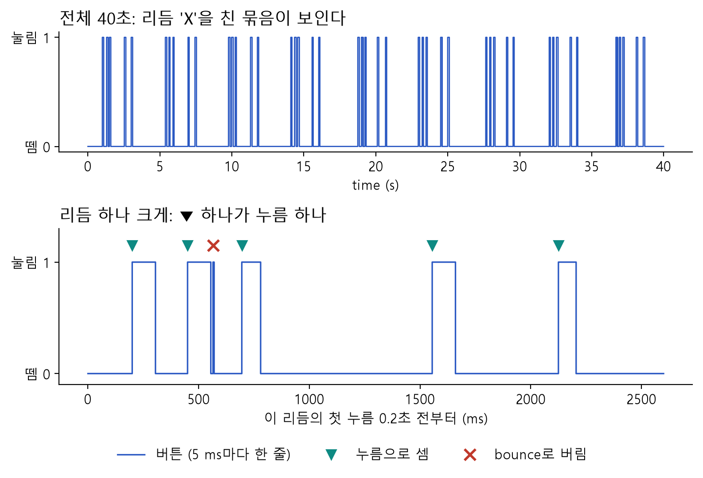
결과가 뜻하는 것. 40초 × 200 = 8,000줄을 다 받았고 빠진 줄은 0입니다. 0 → 1 바뀜은 48번인데 그중 3번이 bounce라서, 진짜 누름은 45번 = 리듬 9번 × 5번입니다. bounce를 버리지 않으면 리듬 하나가 6번 누른 것으로 세어져 그 trial을 못 씁니다.
MOCK_DROP = 0을 MOCK_DROP = 2로 바꾸고 Ctrl+S → ▷. 가짜 board가 PC가 줄을 놓친 구간을 두 군데 만듭니다. 어느 숫자가 바뀔까요?
lines received가 8000 → 7960(40줄 = 0.2초 분량)으로 줄고 dropped gaps가 2가 됩니다. 그림 위 칸에는 그 자리에 빨간 띠가 생깁니다.
PS C:\Users\내이름\Desktop\ion-projects-code> & python mylabs/p3_1_record.py
(MOCK) fake board, 40 s
first 3 lines from the board:
0,3061,0,1361
1,3066,0,1383
2,3071,0,1352
lines received : 7960 (expected about 8000)
dropped gaps : 2
presses (0 -> 1) : 48
bounces (< 30 ms) : 3
real presses : 45
light saturated lines : 0
CSV: runs/p3_mock/b1_taps.csv (session s1, label X)
PS C:\Users\내이름\Desktop\ion-projects-code>빠진 0.1초 안에 누름이 있었다면 5번 친 리듬이 4번으로 기록됩니다. 그래서 진짜 기록에서 dropped gaps가 0이 아니면 그 기록은 다시 합니다. 확인했으면 MOCK_DROP = 0으로 돌려놓습니다.
진짜 board로 기록하기
board에 B1a_rhythm firmware를 올리고, 실습 1을 MOCK = False로 바꿔 내 손 리듬을 받습니다.
B1a_rhythm 열어 Upload
할 일 이번 sketch는 붙여 넣지 않고 코드 묶음의 파일을 엽니다.
- Arduino IDE File → Open… → 왼쪽 바탕 화면 →
ion-projects-code→firmware→B1a_rhythm→B1a_rhythm.ino→ 열기. - 위쪽 선택 상자가
NU40DK nRF52840·내 COM 번호인지 봅니다(아니면 board와 port 고르기). - Upload(→) → Output 창 끝
Device programmed., 오른쪽 아래 Done uploading. 확인(약 1분). P3.1의 깜빡이 코드는 이 코드로 바뀝니다.
이 코드는 버튼1을 5 ms마다 읽어 n,t_ms,btn,a0를 한 줄로 보냅니다. 버튼2를 누르면 LED2가 따라 칠 리듬(X, Y 번갈아)을 한 번 깜빡여 보여 줍니다.
노트(선택) 37종 키트의 조도 module 같이 꽂기
USB를 뺀 채 jumper wire(수-암)로 S → A0(P0.02), + → 3.3V, − → GND를 꽂고, 다 꽂은 뒤 USB를 꽂습니다. module마다 핀 순서가 다르니 실크 글자(S, +, −)를 보고 꽂고 5V에는 연결하지 않습니다 [사진 확인]. 그러면 a0 열에 빛 세기가 같이 기록됩니다. 첫 실험은 버튼만으로 끝까지 됩니다.
Serial Monitor로 확인한 뒤 닫기
할 일
- 돋보기 아이콘으로 Serial Monitor를 엽니다(115200 baud). 줄이 1초에 200줄씩 흐릅니다.
- 버튼1을 누르고 있으면 LED1이 켜지고 셋째 숫자
btn이 1이 됩니다. - 확인했으면 Serial Monitor 탭 이름 옆의 ×로 닫습니다. VS Code 실습이 같은 COM 포트를 써야 하기 때문입니다.
# B1a rhythm logger. columns: n,t_ms,btn,a0
# idle level = 1
0,3061,0,2043
1,3066,0,2051
...
412,5121,1,2047#로 시작하는 줄은 board가 켜질 때 한 번만 보내므로 안 보여도 정상입니다. a0는 빛 센서를 안 꽂았으면 아무 값이나 나옵니다.
실습 1을 진짜 board로 40초
할 일 VS Code의 p3_1_record.py 1번 상자에서 두 줄을 고칩니다.
MOCK = False # True: board 없이 가짜 board로 / False: 진짜 board에서 받기
PORT = "COM5" # 진짜 board의 COM 번호 (장치 관리자에서 본 번호)COM5는 COM 번호 확인에서 본 내 번호로 바꿉니다. Ctrl+S → 버튼1에 손가락을 올리고 ▷. TERMINAL에 recording 40 s …가 뜨면 40초 동안 아무 리듬이나 몇 번 치고, 리듬 사이에 2초 이상 쉽니다.
PS C:\Users\내이름\Desktop\ion-projects-code> & python mylabs/p3_1_record.py
recording 40 s from COM5 ... tap button 1 now
lines received : 7998 (expected about 8000)
dropped gaps : 0
presses (0 -> 1) : 13
bounces (< 30 ms) : 1
real presses : 12
light saturated lines : 0
CSV: runs/p3/b1_taps.csv (session s1, label X)그림 창은 그림 2와 같은 모양으로, 내가 친 리듬이 나옵니다. 진짜 기록은 runs\p3\b1_taps.csv 한 파일에 계속 이어 붙습니다(가짜 기록은 runs\p3_mock에 따로).
받은 줄이 없습니다 …→ COM 번호, Serial Monitor가 닫혔는지, B1a_rhythm이 올라갔는지.could not open port 'COM5': PermissionError(13, …)→ Serial Monitor가 아직 열려 있습니다. 닫고(안 되면 Arduino IDE 창을 닫고) 다시 ▷.could not open port 'COM5': FileNotFoundError(2, …)→ 그 번호의 포트가 없습니다. 장치 관리자에서 번호를 다시 봅니다.ModuleNotFoundError: No module named 'serial'→ package 설치가 안 된 것입니다.
질문. lines received가 8000이 아니라 7998처럼 조금 모자라도 괜찮을까요? dropped gaps가 0이 아니면 어떻게 할까요?
몇 줄 모자란 것은 괜찮습니다. ▷를 누른 순간부터 40초를 세는데, 처음과 끝에서 반쯤 잘린 줄은 버려지기 때문입니다.
dropped gaps가 0이 아니면 다시 기록합니다. 빠진 구간에 누름이 숨어 있었다면 5번 친 리듬이 4번으로 기록됩니다(바꿔 보기에서 본 것). 다른 프로그램을 닫고 다시 합니다.
다음 단계 조건. dropped gaps 0인 진짜 기록이 하나 생겼으면 P3.1b로 갑니다. board가 아직 없으면 실습 1(mock)까지만 하고 P3.1b의 실습 2–3으로 가도 됩니다.
P3.1b. 같은 끝, 다른 순서 — 기억이 필요한가
두 친구가 박수를 다섯 번씩 칩니다. 마지막 두 번은 같은 박자에 칩니다. 다른 점은 앞쪽 박자뿐입니다. 눈을 감고 마지막 박수 소리만 듣고 누가 쳤는지 맞힐 수 있을까요? 마지막 소리에는 차이가 없으니, 앞 박수들의 "울림"이 귀에 남아 있어야 합니다. 소자도 같습니다. 리듬이 끝난 순간에 한 번만 재서 두 리듬을 구별하려면 기억이 필요합니다. 이 질문을 소자 없이 먼저 겪어 봅니다.
| 리듬 | 누름 시각 (s) | 간격 (s) |
|---|---|---|
| X | 0, 0.25, 0.5, 1.5, 2.0 | 0.25, 0.25, 1.0, 0.5 |
| Y | 0, 1.0, 1.25, 1.5, 2.0 | 1.0, 0.25, 0.25, 0.5 |
X는 "따닥따—닥", Y는 "따—닥닥따닥"처럼 들립니다. 둘 다 5번, 2.0초이고 마지막 두 번(1.5 s, 2.0 s)은 똑같습니다.
| 실습 | 하는 일 | 결과로 보는 것 |
|---|---|---|
| 2 | leaky node 하나에 X·Y 넣기 | τ에 따라 마지막 값이 갈린다 / 겹친다 |
| 3 | 다섯 방법 비교 (synthetic data) | 방법별 정확도, 빠르기·손 떨림을 바꾸면 |
| 기록 | 내 손으로 X·Y를 session 3번 | 실습 3을 내 CSV로 다시 |
trial: 리듬 한 번(누름 5번). 쉼이 1.6초보다 길면 다음 trial로 나눕니다.
state: 모형이 지금 들고 있는 값. 박수 이야기의 "귀에 남은 울림"입니다.
readout: state를 읽어서 답(X인지 Y인지)을 내는 일. 여기서는 마지막 누름 직후의 state만 읽습니다.
실습 2. leaky node 하나에 리듬 넣기 (p3_2_leaky.py)
소자를 가장 단순하게 흉내 낸 leaky node 하나에 리듬 X와 Y를 넣고, 마지막 누름 직후의 값 하나만 읽습니다. 그 숫자 하나로 X와 Y가 갈리는지 봅니다. 마지막 두 번은 두 리듬이 같으므로, 갈린다면 그것은 앞쪽 누름의 흔적 덕분입니다.
leaky node: 밑에 작은 구멍이 난 물컵. 누를 때마다 물을 붓고(값이 오름), 쉬는 동안 물이 새어 나갑니다(값이 줄어듦). 최근에 많이 누를수록 물이 많습니다.
time constant τ (타우): 흔적이 얼마나 오래 남는지. τ = 0.5 s면 0.5초 뒤에 물이 약 1/3로 줄어듭니다. 구멍이 클수록 τ가 짧습니다.
threshold (문턱): 비교 기준이 되는 값. 마지막 물 높이가 문턱보다 낮으면 X, 높으면 Y라고 답합니다. 문턱은 연습 기록을 보고 프로그램이 정합니다.
할 일 mylabs에 새 파일 p3_2_leaky.py → 붙여 넣기 → Ctrl+S → ▷.
mylabs/p3_2_leaky.py
# ============================================================
# P3 실습 2 · leaky node 하나에 리듬 X·Y를 넣어 보기
#
# 전체 과정:
#
# 리듬 X, Y: 둘 다 5번 누르고, 마지막 두 번(1.5 s, 2.0 s)은 똑같다
# ↓
# leaky node(구멍 난 물컵)에 넣기
# 누를 때마다 물을 붓고, 쉬는 동안 τ에 따라 물이 샌다
# ↓
# 마지막 누름 직후의 물 높이(state) 하나만 읽기
# ↓
# [그림 왼쪽] X와 Y의 물 높이가 시간에 따라 어떻게 변하나
# [그림 오른쪽] 손 떨림이 있는 리듬 N번씩: 마지막 물 높이로 X·Y가 갈리나?
#
# 맨 위의 TAU를 0.1 → 0.5 → 2.0으로 바꿔 Run 해 보는 것이 이 실습의 핵심입니다.
# board는 필요 없습니다.
# ============================================================
import sys
from pathlib import Path
import numpy as np
import matplotlib.pyplot as plt
CODE = Path(__file__).resolve().parent.parent # ion-projects-code 폴더
sys.path.insert(0, str(CODE / "python")) # 공용 코드 폴더를 찾을 수 있게
import b1_memory # 리듬 X·Y의 정의, leaky node 계산 (P3.1b 공용 코드)
# ============================================================
# 0. 그림 설정 — 건드리지 않아도 됩니다
# ============================================================
plt.rcParams.update({
"font.family": "Malgun Gothic", "axes.unicode_minus": False, "font.size": 11,
"legend.frameon": False, "axes.spines.top": False, "axes.spines.right": False,
})
# ============================================================
# 1. 바꿔 볼 수 있는 설정값 ← 여기를 바꿔 보세요
# ============================================================
TAU = 0.5 # time constant τ (초): 흔적이 얼마나 오래 남나. 0.1, 0.5, 2.0 …
G = 0.5 # 한 번 누를 때 붓는 양 (빈 컵의 절반만큼)
N_TRIALS = 40 # 리듬마다 몇 번 쳤다고 칠까 (앞 절반은 연습, 뒤 절반은 시험)
JITTER = 0.08 # 손 떨림: 간격이 평균 몇 %씩 흔들리나 (0.08 = 8 %)
SEED = 1
# ============================================================
# 2. 두 리듬 (공용 코드 b1_memory.PAT에 적혀 있다)
# ============================================================
PAT = b1_memory.PAT # {"X": [0, 0.25, 0.5, 1.5, 2.0], "Y": [0, 1.0, 1.25, 1.5, 2.0]}
for name in ("X", "Y"):
print(f"rhythm {name}: press times {PAT[name]} s, gaps {np.round(np.diff(PAT[name]), 2).tolist()} s")
# ============================================================
# 3. leaky node: 물 높이 x (0 = 빈 컵, 1 = 가득)
# ============================================================
#
# 누를 때 x ← x + G × (1 − x) (남은 빈 공간의 G만큼 붓기)
# 쉬는 Δt 동안 x ← x × exp(−Δt / τ) (τ초가 지나면 약 1/3로 줄어듦)
#
# b1_memory.leaky_state(누름 시각들, τ, G)가 이 계산을 하고
# "마지막 누름 직후의 x"를 돌려준다. 그림을 그리려고 아래에서 시간마다 x도 계산한다.
# ============================================================
def leaky_curve(times, tau, g, t_end=2.6, dt=0.005):
"""0초부터 t_end초까지 5 ms마다의 물 높이"""
ts = np.arange(0, t_end, dt)
xs = np.zeros_like(ts)
x, last_t, k = 0.0, 0.0, 0
for i, now in enumerate(ts):
x *= np.exp(-(now - last_t) / tau) # 새는 동안
last_t = now
while k < len(times) and times[k] <= now: # 이 순간에 누름이 있으면 붓기
x += g * (1 - x)
k += 1
xs[i] = x
return ts, xs
# ============================================================
# 4. 손 떨림이 있는 리듬을 여러 번: 마지막 물 높이 모으기
# ============================================================
rng = np.random.default_rng(SEED)
def jittered(name):
gaps = np.diff(PAT[name]) * rng.normal(1, JITTER, 4) # 간격마다 조금씩 흔들기
return np.concatenate([[0], np.cumsum(gaps)])
final = {name: np.array([b1_memory.leaky_state(jittered(name), TAU, G) for _ in range(N_TRIALS)])
for name in ("X", "Y")}
# ============================================================
# 5. 문턱(threshold) 하나로 나누기: 연습 절반으로 문턱, 시험 절반으로 채점
# ============================================================
half = N_TRIALS // 2
v_train = np.r_[final["X"][:half], final["Y"][:half]]
y_train = np.r_[np.ones(half), np.zeros(half)] # X = 1, Y = 0
th, sign = b1_memory.fit_threshold(v_train, y_train) # 연습 문제를 가장 잘 나누는 문턱
v_test = np.r_[final["X"][half:], final["Y"][half:]]
y_test = np.r_[np.ones(N_TRIALS - half), np.zeros(N_TRIALS - half)]
acc = np.mean((sign * (v_test - th) > 0) == y_test)
print()
print(f"leaky node, tau = {TAU} s")
print(f"final state X : {final['X'].mean():.3f} (min {final['X'].min():.3f}, max {final['X'].max():.3f})")
print(f"final state Y : {final['Y'].mean():.3f} (min {final['Y'].min():.3f}, max {final['Y'].max():.3f})")
print(f"threshold : {th:.3f}")
print(f"test accuracy : {acc:.0%} (chance = 50%)")
# ============================================================
# 6. 그림
# ============================================================
fig, ax = plt.subplots(1, 2, figsize=(8, 3.9), gridspec_kw={"width_ratios": [1.6, 1]})
color = {"X": "#2b59c3", "Y": "#d9962a"}
for name in ("X", "Y"):
ts, xs = leaky_curve(PAT[name], TAU, G)
ax[0].plot(ts, xs, color=color[name], lw=1.8, label=f"리듬 {name}")
ax[0].plot(PAT[name], np.full(5, -0.05 if name == "X" else -0.11), "|", color=color[name], ms=8, mew=2) # 누른 시각
end = b1_memory.leaky_state(PAT[name], TAU, G)
ax[0].plot(2.0, end, "o", color=color[name], ms=7)
ax[0].axvline(2.0, color="0.6", ls=":", lw=1)
ax[0].text(2.03, 0.98, "여기서 한 번\n읽는다", va="top", fontsize=9.5, color="0.35")
ax[0].set_ylim(-0.15, 1.02)
ax[0].set_xlabel("time (s) | = 누른 시각")
ax[0].set_ylabel("물 높이 (state)")
ax[0].set_title(f"τ = {TAU} s일 때 물 높이", loc="left")
for row, name in enumerate(("X", "Y")):
ax[1].plot(final[name], np.full(N_TRIALS, row) + rng.uniform(-0.15, 0.15, N_TRIALS), "o",
color=color[name], ms=4, alpha=0.7)
ax[1].axvline(th, color="#c0392b", ls="--", lw=1.3, label="문턱")
ax[1].set_yticks([0, 1], ["X", "Y"])
ax[1].set_ylim(-0.6, 1.6)
ax[1].set_xlabel("마지막 물 높이")
ax[1].set_title(f"{N_TRIALS}번씩: 시험 {acc:.0%}", loc="left")
fig.tight_layout(rect=(0, 0.08, 1, 1))
h0, l0 = ax[0].get_legend_handles_labels()
h1, l1 = ax[1].get_legend_handles_labels()
fig.legend(h0 + h1, l0 + l1, loc="lower center", ncol=3, bbox_to_anchor=(0.5, 0.0))
plt.show()코드에서 볼 곳.
- 1번 상자의
TAU: 흔적이 남는 시간. 이 실습의 손잡이입니다. - 3번 상자의 두 줄 규칙: 누를 때 x ← x + G × (1 − x), 쉬는 동안 x ← x × exp(−Δt/τ). 공용 코드
b1_memory.leaky_state가 같은 계산으로 마지막 값을 줍니다. - 4–5번 상자: 손 떨림(간격 8 %)을 넣어 40번씩 친 것처럼 만들고, 앞 20번으로 문턱을 정하고 뒤 20번으로 채점합니다.
▷ 실행하면:
PS C:\Users\내이름\Desktop\ion-projects-code> & python mylabs/p3_2_leaky.py
rhythm X: press times [0, 0.25, 0.5, 1.5, 2.0] s, gaps [0.25, 0.25, 1.0, 0.5] s
rhythm Y: press times [0, 1.0, 1.25, 1.5, 2.0] s, gaps [1.0, 0.25, 0.25, 0.5] s
leaky node, tau = 0.5 s
final state X : 0.602 (min 0.589, max 0.619)
final state Y : 0.628 (min 0.603, max 0.648)
threshold : 0.613
test accuracy : 92% (chance = 50%)
PS C:\Users\내이름\Desktop\ion-projects-code>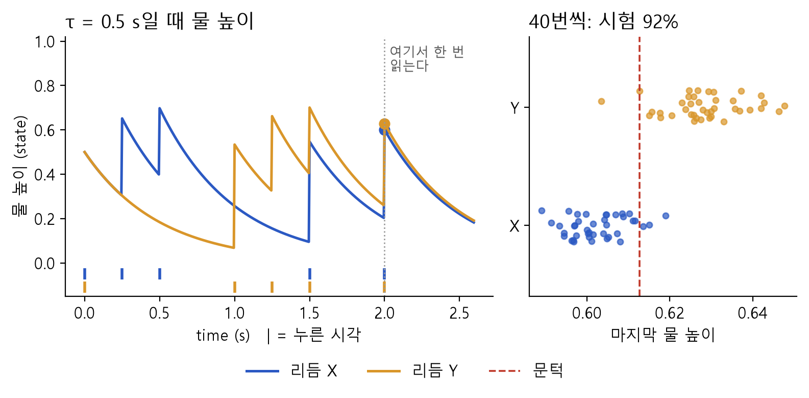
결과가 뜻하는 것. 마지막 물 높이는 X 0.602, Y 0.628로 차이가 0.03뿐입니다. 그래도 X는 거의 다 문턱 왼쪽, Y는 오른쪽에 모여 시험 92%를 맞힙니다. Y는 1.0–1.5초에 세 번을 몰아 쳐서 마지막 순간에 물이 조금 더 남아 있고, X는 1.5초 직전에 1초를 쉬어 물이 많이 빠졌기 때문입니다.
TAU = 0.5를 TAU = 0.1로 바꾸고 ▷. 그다음 TAU = 2.0도 해 봅니다. 먼저 예상해 보세요.
τ = 0.1 s: X와 Y가 둘 다 0.502로 같아지고 시험은 찍기 수준(45%)입니다. 0.1초짜리 물컵은 마지막 간격 0.5초 동안 거의 비어서, 마지막 누름 하나만 남기 때문입니다.
PS C:\Users\내이름\Desktop\ion-projects-code> & python mylabs/p3_2_leaky.py
rhythm X: press times [0, 0.25, 0.5, 1.5, 2.0] s, gaps [0.25, 0.25, 1.0, 0.5] s
rhythm Y: press times [0, 1.0, 1.25, 1.5, 2.0] s, gaps [1.0, 0.25, 0.25, 0.5] s
leaky node, tau = 0.1 s
final state X : 0.502 (min 0.501, max 0.504)
final state Y : 0.502 (min 0.501, max 0.503)
threshold : 0.502
test accuracy : 45% (chance = 50%)
PS C:\Users\내이름\Desktop\ion-projects-code>τ = 2.0 s: X 0.79, Y 0.83으로 차이가 더 벌어져 100%를 맞힙니다. 기억 시간이 입력 간격(0.25–1.0초)과 맞아야 앞쪽 순서가 마지막 값에 남습니다.
실습 3. 다섯 방법으로 맞히기 (p3_3_compare.py)
같은 버튼 기록을 다섯 방법으로 맞혀 보고, 어떤 방법에 기억이 필요한지 봅니다. 손 버릇은 날마다 다르므로 session s1·s2로 연습하고 마지막 s3로만 시험합니다. 지금은 synthetic data로 하고, 내 기록이 쌓이면 DATA 한 줄만 바꿔 같은 파일을 돌립니다.
비교하는 다섯 방법입니다. 화면에 나오는 영어 이름을 같이 적었습니다.
- last value only: 마지막 누름 순간의 입력. 두 리듬 모두 1(눌림)이라 못 맞히는 것이 정상.
- count & length: 누른 횟수(5)와 길이(2.0 s). 두 리듬이 같게 만들었으니 못 맞히는 것이 정상.
- first-gap rule: 첫 간격 하나를 문턱과 비교하는 한 줄짜리 규칙(X 0.25 s, Y 1.0 s).
- leaky node tau=…: 실습 2의 물컵. τ 세 가지.
- reservoir 40 (slow / fast): 물컵 40개를 무작위로 이어 둔 것 + 학습한 readout. 흔적이 약 0.4초 남는 것(slow)과 약 0.07초인 것(fast).
reservoir: leaky node 같은 node 여러 개(여기서는 40개)가 무작위로 서로 이어져 입력을 섞어 두는 모형. node 사이 연결은 고정이고, 학습은 그 뒤의 readout만 합니다.
synthetic data: 컴퓨터가 수식으로 만든 가짜 기록. 여기서는 session 3개 × 리듬 2개 × 20번을 "쳤다고 치고", 박자를 조금씩 흔들고 bounce도 섞습니다. seed가 고정이라 언제 돌려도 같은 결과입니다.
train / test: 마지막 session의 기록은 연습(train)에 안 쓰고 시험(test)에만 씁니다. 같은 날 기록을 섞으면 그날의 손 버릇까지 외워 점수가 부풉니다.
chance: 한쪽 답만 찍었을 때의 정확도. X와 Y가 반반이면 50%입니다. 50% 근처 = 못 맞힌다, 100% = 다 맞힌다.
할 일 mylabs에 새 파일 p3_3_compare.py → 붙여 넣기 → Ctrl+S → ▷. 약 10초 걸립니다.
mylabs/p3_3_compare.py
# ============================================================
# P3 실습 3 · 다섯 가지 방법으로 리듬 X·Y 맞히기
#
# 전체 과정:
#
# 버튼 기록 (처음엔 synthetic data: session 3개 × 리듬 2개 × 20번)
# ↓
# 쉼이 1.6초보다 길면 끊어서 trial(리듬 한 번)로 나누기, bounce 버리기
# ↓
# session s1·s2로 연습(train), 마지막 session s3로 시험(test)
# ↓
# 다섯 방법으로 채점:
# last value only · count & length · first-gap rule
# leaky node (τ 세 가지) · reservoir 40 (slow / fast)
# ↓
# [그림 1] 방법별 정확도
# [그림 2] 시험 리듬만 빠르게·느리게, 손 떨림을 크게 하면?
#
# 내 버튼 기록이 session 2개 이상 쌓이면 DATA를 내 CSV로 바꿔 Run 합니다.
# ============================================================
import sys
from pathlib import Path
import numpy as np
import matplotlib.pyplot as plt
CODE = Path(__file__).resolve().parent.parent # ion-projects-code 폴더
sys.path.insert(0, str(CODE / "python")) # 공용 코드 폴더를 찾을 수 있게
import b1_memory as bm # 리듬 나누기·다섯 방법 채점 (P3.1b 공용 코드)
from common import print_table # TERMINAL에 표를 줄 맞춰 찍기
# ============================================================
# 0. 그림 설정 — 건드리지 않아도 됩니다
# ============================================================
plt.rcParams.update({
"font.family": "Malgun Gothic", "axes.unicode_minus": False, "font.size": 11,
"legend.frameon": False, "axes.spines.top": False, "axes.spines.right": False,
})
# ============================================================
# 1. 바꿔 볼 수 있는 설정값 ← 여기를 바꿔 보세요
# ============================================================
DATA = "synthetic" # 내 기록으로: "runs/p3/b1_taps.csv"
TAUS = (0.1, 0.5, 2.0) # 비교할 leaky node의 τ (초) 세 개
# ============================================================
# 2. 기록 읽기 → trial로 나누기
# ============================================================
#
# synthetic data = 사람이 X·Y를 20번씩 친 것처럼 컴퓨터가 만든 가짜 기록.
# 박자를 8 %쯤 흔들고, bounce를 10 %쯤 섞고, 가끔 한 번을 빼먹게 만든다.
# SEED가 고정이라 언제 돌려도 같은 결과 (실측 아님).
# ============================================================
if DATA == "synthetic":
rng = np.random.default_rng(7)
streams = {}
for session in ("s1", "s2", "s3"):
for label in ("X", "Y"):
t, btn, _ = bm.synth_stream(label, 20, rng)
streams[(session, label)] = (np.round(t, 3), btn)
else:
streams = bm.load(str(CODE / DATA)) # 내 CSV: session·label별로 읽기
all_trials, info = bm.trials(streams) # (session, label, 누름 시각 5개) 목록
sessions = sorted({s for s, _, _ in all_trials})
if len(sessions) < 2:
raise SystemExit("session이 2개 이상 필요합니다 (연습·시험을 session으로 나눔). 실습 1을 SESSION = 's2'로 더 기록하세요.")
test_session = sessions[-1] # 마지막 session은 시험에만
train = [x for x in all_trials if x[0] != test_session]
test = [x for x in all_trials if x[0] == test_session]
print(f"{'synthetic' if DATA == 'synthetic' else 'measured'} data: {len(all_trials)} trials "
f"(train {len(train)}: {', '.join(sessions[:-1])} / test {len(test)}: {test_session})")
for k, v in info.items():
print(f" {k}: {v}")
# ============================================================
# 3. 다섯 방법으로 채점 (b1_memory.evaluate)
# ============================================================
#
# last value only : 마지막 누름 순간의 입력 (X든 Y든 1)
# count & length : 누른 횟수(5)와 처음→마지막 길이(2.0 s)
# first-gap rule : 첫 간격 하나를 문턱과 비교 (X 0.25 s, Y 1.0 s)
# leaky node : 실습 2의 물컵. 마지막 누름 직후 물 높이 하나
# reservoir 40 : 물컵 40개를 무작위로 이어 둔 것 + 학습한 readout
# slow = 흔적이 약 0.4초, fast = 약 0.07초
# 모든 방법이 train 기록만 보고 문턱·weight를 정하고, test 기록으로 채점한다.
# ============================================================
bm.TAUS = tuple(TAUS) # 공용 코드가 이 τ 목록을 쓰게
names = {"last": "last value only", "count": "count & length", "rule": "first-gap rule",
**{f"tau{t}": f"leaky node tau={t} s" for t in TAUS},
"esn": "reservoir 40 (slow)", "esn_fast": "reservoir 40 (fast)"}
esn = (bm.ESN(leak=0.05), bm.ESN(leak=0.3)) # 느린 reservoir, 빠른 reservoir
base = bm.evaluate(train, test, esn)
chance = max(np.mean([lab == "X" for _, lab, _ in test]), np.mean([lab == "Y" for _, lab, _ in test]))
print(f"chance (always guess the larger class): {chance:.0%}")
print()
print_table(["model", "test accuracy"], [[names[k], f"{v:.0%}"] for k, v in base.items()], left=(0,))
# ============================================================
# 4. 시험 리듬만 바꿔 보기 (연습은 그대로)
# ============================================================
#
# tempo : 시험 리듬의 간격을 모두 ×0.5(두 배 빠르게) ~ ×2(두 배 느리게)
# jitter: 간격마다 손 떨림을 0–30 % 더하기
# 새로 친 것이 아니라 기록된 시각을 계산으로 늘이고 흔든 것이다.
# ============================================================
mid_tau = f"tau{TAUS[1]}"
show = ("rule", mid_tau, "esn") # 세 방법만 비교
scales = [0.5, 0.7, 1.0, 1.4, 2.0]
jitters = [0.0, 0.1, 0.2, 0.3]
by_scale = {k: [bm.evaluate(train, bm.vary(test, scale=s), esn)[k] for s in scales] for k in show}
by_jit = {k: [bm.evaluate(train, bm.vary(test, jitter=j), esn)[k] for j in jitters] for k in show}
print()
print("test tempo changed (x interval; training stays at 1.0)")
print_table(["model"] + [f"x{s:g}" for s in scales],
[[names[k]] + [f"{v:.0%}" for v in by_scale[k]] for k in show], left=(0,))
print()
print("hand jitter added (relative SD of intervals)")
print_table(["model"] + [f"{j:g}" for j in jitters],
[[names[k]] + [f"{v:.0%}" for v in by_jit[k]] for k in show], left=(0,))
# ============================================================
# 5. 그림 1: 방법별 정확도
# ============================================================
keys = list(base)
fig1, ax = plt.subplots(figsize=(8, 3.8))
bars = ax.barh([names[k] for k in keys][::-1], [base[k] for k in keys][::-1], color="#2b59c3", height=0.6)
for b, k in zip(bars, keys[::-1]):
ax.text(base[k] + 0.01, b.get_y() + b.get_height() / 2, f"{base[k]:.0%}", va="center", fontsize=10)
ax.axvline(chance, color="0.5", ls="--", lw=1)
ax.text(chance, len(keys) - 0.35, " chance", color="0.4", fontsize=9.5)
ax.set_xlim(0, 1.1)
ax.set_xlabel("test accuracy (1.0 = 다 맞힘)")
ax.set_title("같은 빠르기로 친 시험 session", loc="left")
fig1.tight_layout()
# ============================================================
# 6. 그림 2: 빠르기·손 떨림을 바꾼 시험
# ============================================================
fig2, ax2 = plt.subplots(1, 2, figsize=(8, 3.6), sharey=True)
colors = {"rule": "#0f1b33", mid_tau: "#0e8a83", "esn": "#2b59c3"}
for k in show:
ax2[0].plot(scales, by_scale[k], "o-", color=colors[k], label=names[k])
ax2[1].plot(jitters, by_jit[k], "o-", color=colors[k])
ax2[1].set_xticks(jitters)
ax2[0].set_xscale("log", base=2)
ax2[0].set_xticks(scales, [str(s) for s in scales])
ax2[0].set_xlabel("간격 배율 (1 = 연습 때와 같음)")
ax2[0].set_title("빠르기를 바꾸면", loc="left")
ax2[1].set_xlabel("손 떨림 (0.3 = 간격마다 약 30 %)")
ax2[1].set_title("손 떨림을 키우면", loc="left")
for a in ax2:
a.axhline(chance, color="0.5", ls="--", lw=1)
a.set_ylim(0.3, 1.05)
ax2[0].set_ylabel("test accuracy")
fig2.tight_layout(rect=(0, 0.1, 1, 1))
fig2.legend(*ax2[0].get_legend_handles_labels(), loc="lower center", ncol=3, bbox_to_anchor=(0.5, 0.0))
plt.show()코드에서 볼 곳.
- 2번 상자: synthetic data를 만들고
bm.trials가 trial로 나눕니다. bounce는 버리고, 누름이 5번이 아닌 trial도 버립니다. - 3번 상자의
bm.evaluate: 다섯 방법 모두 train 기록만 보고 문턱·weight를 정한 뒤 test 기록으로 채점합니다. - 4번 상자의
bm.vary: 시험 리듬만 계산으로 빠르게·느리게 늘이거나 흔듭니다. 새로 친 것이 아닙니다.
▷ 실행하면 (그림 창이 두 개 뜹니다):
PS C:\Users\내이름\Desktop\ion-projects-code> & python mylabs/p3_3_compare.py
synthetic data: 117 trials (train 77: s1, s2 / test 40: s3)
presses dropped as bounce: 59
trials with 4 presses (not 5): 3
chance (always guess the larger class): 50%
model test accuracy
-------------------- -------------
last value only 50%
count & length 50%
first-gap rule 95%
leaky node tau=0.1 s 50%
leaky node tau=0.5 s 95%
leaky node tau=2.0 s 100%
reservoir 40 (slow) 95%
reservoir 40 (fast) 42%
test tempo changed (x interval; training stays at 1.0)
model x0.5 x0.7 x1 x1.4 x2
-------------------- ---- ---- --- ---- ----
first-gap rule 50% 50% 95% 100% 100%
leaky node tau=0.5 s 50% 50% 95% 50% 50%
reservoir 40 (slow) 50% 55% 92% 52% 50%
hand jitter added (relative SD of intervals)
model 0 0.1 0.2 0.3
-------------------- --- --- --- ---
first-gap rule 95% 90% 82% 80%
leaky node tau=0.5 s 95% 80% 78% 68%
reservoir 40 (slow) 92% 92% 88% 78%
PS C:\Users\내이름\Desktop\ion-projects-code>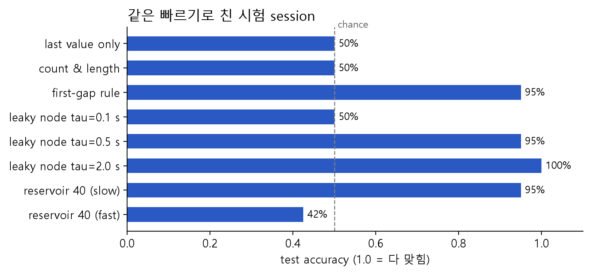
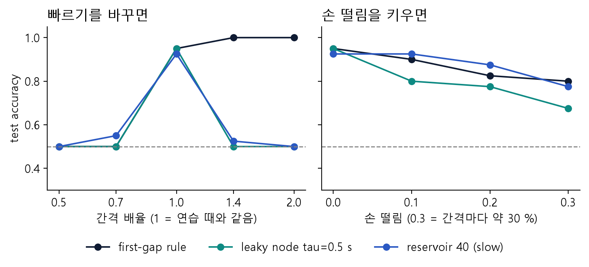
결과가 뜻하는 것. 화면 위쪽은 이렇게 읽습니다.
| 화면 글자 | 뜻 | 이 줄의 값 |
|---|---|---|
117 trials (train 77: s1, s2 / test 40: s3) |
리듬 117번 중 77번으로 연습, 40번으로 시험 | 120번 중 3번은 누름이 4번이라 버림 |
presses dropped as bounce |
bounce라서 버린 누름 수 | 59 |
test accuracy |
시험 trial을 맞힌 비율 | first-gap rule 95% = 40번 중 38번 |
정보가 마지막 순간이 아니라 순서에 있으므로, 앞을 기억하지 못하는 방법(last value, count, τ = 0.1, fast reservoir)은 모두 찍기 수준입니다.
관찰 적기
할 일 연구 노트나 메모장에 먼저 내 말로 적고, 그다음 "정답 보기"를 누릅니다.
질문 1. last value only와 count & length는 왜 50%일까요?
두 리듬에서 그 숫자가 똑같기 때문입니다. 마지막 누름 순간의 입력은 X든 Y든 1이고, 횟수(5)와 길이(2.0 s)도 같게 만들었습니다. 두 리듬의 차이는 앞쪽 순서에만 있습니다.
질문 2. 그림 5 왼쪽에서 시험만 두 배 빠르게(0.5) 치면 first-gap rule도 50%로 떨어지는데, 두 배 느리게(2.0) 치면 100%입니다. 왜 한쪽만 버틸까요?
first-gap rule은 연습 때 정한 문턱(0.25 s와 1.0 s 사이)과 첫 간격을 비교합니다. 두 배 빠르게 치면 Y의 첫 간격이 1.0 → 0.5 s로 줄어 문턱보다 짧아질 수 있고, 그러면 Y도 X라고 답해 50%가 됩니다. 두 배 느리게 치면 X의 첫 간격은 0.25 → 0.5 s로 늘어도 아직 문턱보다 짧고, Y는 2.0 s로 더 길어지므로 계속 맞힙니다.
leaky node와 reservoir는 양쪽 다 무너집니다. 학습한 readout이 "원래 빠르기에서의 물 높이"에 맞춰져 있기 때문입니다. 실제로 쓰려면 연습 기록에 여러 빠르기를 섞어야 합니다.
질문 3. 이 과제를 푸는 데 reservoir가 꼭 필요할까요?
아닙니다. first-gap rule 한 줄로 95%, τ가 맞는 leaky node 하나로 95–100%가 나옵니다. 그래서 나중에 소자로 이 과제를 풀더라도 "한 줄 규칙이나 R–C 하나보다 무엇이 더 나은가"를 함께 보여야 합니다.
내 손으로 기록하고 다시 비교
LED2 리듬 보고 따라 치기 (연습)
할 일 (5–10분) B1a_rhythm이 올라간 board로 합니다. PC는 필요 없습니다.
- 버튼2를 한 번 누릅니다. LED2가 리듬 X를 깜빡여 보여 줍니다.
- 그 리듬을 버튼1로 따라 칩니다.
- 버튼2를 다시 누르면 이번에는 Y가 나옵니다(누를 때마다 X, Y 번갈아).
session 3번 기록 (실습 1을 다시 ▷)
할 일 실습 1(p3_1_record.py)의 1번 상자에서 MOCK = False, SECONDS = 60으로 두고, 아래처럼 LABEL·SESSION만 바꿔 가며 ▷ 합니다. 한 번 ▷ 하면 60초 동안 그 리듬만 여러 번(약 10–12번), 리듬마다 2초 이상 쉬고 칩니다. Serial Monitor는 닫혀 있어야 합니다.
| 회차 | 첫 번째 ▷ | 두 번째 ▷ |
|---|---|---|
| 1 | LABEL = "X", SESSION = "s1" |
LABEL = "Y", SESSION = "s1" |
| 2 (다른 시간·날) | LABEL = "X", SESSION = "s2" |
LABEL = "Y", SESSION = "s2" |
| 3 | LABEL = "X", SESSION = "s3" |
LABEL = "Y", SESSION = "s3" |
P3.1a에서 아무 리듬이나 친 40초도 X·s1로 같은 CSV에 들어 있습니다. 정식 기록 전에 VS Code 왼쪽 EXPLORER에서 runs → p3 → b1_taps.csv에 마우스 오른쪽 → Rename → b1_taps_practice.csv로 바꿔 두면 섞이지 않습니다.
내 데이터로 실습 3 다시
할 일 session이 2개 이상 쌓이면 실습 3(p3_3_compare.py)의 1번 상자를 이렇게 고치고 Ctrl+S → ▷.
DATA = "runs/p3/b1_taps.csv" # 내 기록으로: "runs/p3/b1_taps.csv"같은 모양의 표와 그림이 나오되 첫 줄이 measured data로 바뀝니다. 숫자는 내 손에 따라 다르고, synthetic data와 같을 필요가 없습니다.
PS C:\Users\내이름\Desktop\ion-projects-code> & python mylabs/p3_3_compare.py
measured data: 24 trials (train 16: s1, s2 / test 8: s3)
presses dropped as bounce: 3
trials with 4 presses (not 5): 1
chance (always guess the larger class): 50%
model test accuracy
-------------------- -------------
last value only 50%
...session이 2개 이상 필요합니다 … → session을 하나만 기록한 것입니다. SESSION = "s2"로 X·Y를 더 기록합니다.
기록란 채우기 (완료 조건)
할 일 내 데이터의 test accuracy와 버린 trial 수, bounce 수를 연구 노트의 아래 표에 적습니다.
| 날짜 | session 수 | trial 수 (X/Y) | first-gap rule | leaky node tau=0.5 s | reservoir 40 (slow) | 메모 |
|---|---|---|---|---|---|---|
관찰할 점 — synthetic data에서 나온 것 (내 데이터에서는 숫자가 달라질 수 있습니다).
- last value only, count & length는 chance(50%)입니다. 정보는 순서에만 있습니다.
- first-gap rule 하나로 95%가 나옵니다. 이 과제는 reservoir 없이도 풀립니다. 그대로 기록합니다.
- 기억이 너무 짧으면(tau=0.1 s, reservoir 40 (fast)) chance 수준입니다. 기억 시간이 입력 간격과 맞아야 합니다.
- 시험 빠르기만 바꾸면 학습한 방법이 거의 모두 무너집니다. 연습에 여러 빠르기를 섞어야 한다는 뜻입니다.
- 손 떨림을 키우면 leaky node가 가장 먼저 떨어지고, reservoir 40 (slow)와 first-gap rule은 비슷하게 버팁니다.
소자로 가는 다리. 여기서 'leaky node'가 맡은 자리에 나중에 실제 소자가 들어갑니다(P2). 그때 물을 것은 같습니다. 내 소자의 기억 시간은 입력 간격과 맞는가, 같은 과제를 first-gap rule 같은 한 줄 규칙이나 R–C 회로가 더 싸게 풀지는 않는가.
다음 단계 조건. 기록란을 한 줄 채웠으면 저항·capacitor를 준비해 R–C 첫 배선으로 갑니다.
R–C 첫 배선: 부품 읽기와 breadboard
처음으로 breadboard에 부품을 꽂습니다. 레고 설명서에서 "이 블록을 저 자리에"를 읽는 법부터 익히듯, 이 단계는 부품 모양 → 회로 기호 → 다리 → 구멍 자리를 읽는 연습입니다. 회로는 저항 하나와 capacitor 하나뿐입니다. board가 P1.04 핀으로 3.3 V를 걸면 capacitor 전압이 천천히 오르고, board가 그것을 A0로 읽어 τ(time constant)를 잽니다. 사이드 프로젝트 미니 3과 같은 회로·같은 코드이고, 여기서는 구멍 자리를 정확히 적었습니다. 이 R–C가 나중에 소자 자리에 놓일 "느린 부품"의 가장 단순한 모형입니다.
| 할 일 | 하는 곳 | 결과로 보는 것 |
|---|---|---|
| rail 끊김 확인 | 멀티미터 | 삐 소리가 나는가 |
| R–C 꽂기 | breadboard | 멀티미터로 10행–14행 약 100 kΩ |
side3_rc_tau Upload |
Arduino IDE | tau measured 0.8–1.2 s |
준비물: 100 kΩ 저항 1개, 10 µF 전해 capacitor(16 V 이상) 1개, 수-수 jumper 1가닥, board와 breadboard를 잇는 jumper 3가닥(점퍼선 고르기), 멀티미터.
부품 → 기호 → 다리 → 꽂는 자리
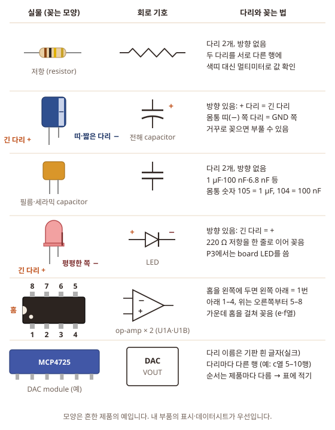
| 부품 | 실물에서 볼 곳 (+ 또는 1번 찾기) | 다리 | breadboard에 꽂는 법 | 처음 쓰는 곳 |
|---|---|---|---|---|
| 저항 | 색띠가 있는 작은 원통. 방향 없음. 값은 멀티미터 Ω로 확인 | 2개, 구별 없음 | 두 다리를 서로 다른 행에. 같은 행에 꽂으면 양 끝이 이미 이어져 있어 저항이 없는 것과 같음 | 이 단계 (100 kΩ) |
| 전해 capacitor | 몸통 한쪽의 띠(− 표시)와 짧은 다리 = −, 긴 다리 = + | 2개, +·− 있음 | + 다리를 전압이 높은 쪽 행에, − 다리를 GND 쪽 행에 | 이 단계 (10 µF) |
| 필름·세라믹 capacitor | 작은 네모·동전 모양. 숫자 105 = 1 µF, 104 = 100 nF | 2개, 구별 없음 | 서로 다른 행에 | P3.4 (1 µF, 100 nF, C_f) |
| LED | 긴 다리 = + (anode), 테두리가 평평한 쪽 다리 = − (cathode) | 2개, +·− 있음 | 220 Ω 저항을 한 줄로 이어서. P3는 board의 LED를 쓰므로 따로 꽂을 일은 거의 없음 | (참고) |
| op-amp MCP6002 (DIP-8) | 몸통 한쪽 끝의 반달 홈, 또는 모서리의 작은 점 = 1번 쪽 | 8개. 홈을 왼쪽에 두고 위에서 보면 왼쪽 아래 = 1번, 아래 줄 1–4, 위 줄은 오른쪽부터 5–8 | 가운데 홈을 걸쳐서: 아래 다리 4개는 f열, 위 다리 4개는 e열 | P3.4 |
| DAC·ADC module | 기판 가장자리의 흰 글자(실크): VCC, GND, SDA, SCL, VOUT, A0 … | DAC 6개·ADC 10개 정도, 순서는 제품마다 다름 | 다리 하나하나가 서로 다른 행에 가도록 한 열(c열)에 | P3.2 |
회로도와 breadboard를 잇는 규칙은 하나입니다. 회로도에서 선으로 이어진 점들은 breadboard에서 같은 행(또는 같은 rail)에 꽂힌 다리들입니다. 회로도의 점(●) 하나 = breadboard의 묶음 하나로 읽으면 됩니다.
breadboard 속에서 이어진 구멍
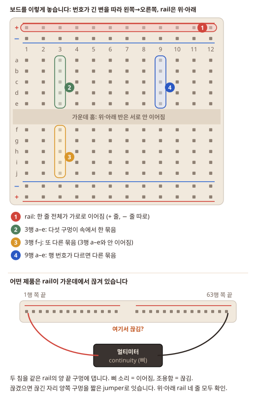
- 놓는 법: 번호(1–63)가 긴 변을 따라 왼쪽→오른쪽, rail이 위·아래. a가 위쪽에 오게 놓습니다. 이 페이지는 번호 하나를 행, 글자를 열이라 부르고 구멍을 "10행 c"처럼 적습니다.
- 같은 묶음: 한 행의 a–e 다섯 구멍이 한 묶음, f–j 다섯 구멍이 또 한 묶음입니다. 가운데 홈을 건너면 이어지지 않고, 행 번호가 다르면 이어지지 않습니다.
- rail: 한 줄 전체가 가로로 이어져 있습니다. 단, 가운데에서 끊긴 제품이 있습니다. 겉에 그려진 빨강·파랑 선이 끊겨 있으면 의심하고, 아래처럼 멀티미터로 확인합니다.
rail이 끊겼는지 멀티미터로 확인 (5분, 한 번만)
할 일 breadboard에 아무것도 꽂지 않은 채 합니다.
- 멀티미터 다이얼을 continuity(소리 표시가 그려진 칸. 다이오드 표시와 같은 칸인 제품도 많음)에 맞춥니다. 두 침 끝을 서로 대서 삐 소리가 나는지 먼저 봅니다.
- 위 + rail의 1행 쪽 끝 구멍과 63행 쪽 끝 구멍에 jumper를 한 가닥씩 꽂고, 두 jumper 끝에 침을 댑니다(침이 구멍에 잘 안 들어가기 때문).
- 삐 → 이어짐. 조용함 → 끊김. 끊겼으면 가운데의 끊긴 자리 양쪽 구멍을 짧은 jumper로 잇습니다.
- 위 − rail, 아래 − rail, 아래 + rail도 같은 방법으로 봅니다. 결과를 연구 노트에 적습니다(예: "위 + 끊김 → 30·32행 사이 jumper").
두 침을 맞대도 소리가 안 나면 다이얼 위치나 멀티미터 배터리 문제입니다. 확인용으로 같은 행의 a와 e에 침을 대면 삐 소리가 나야 합니다.
R–C 꽂기
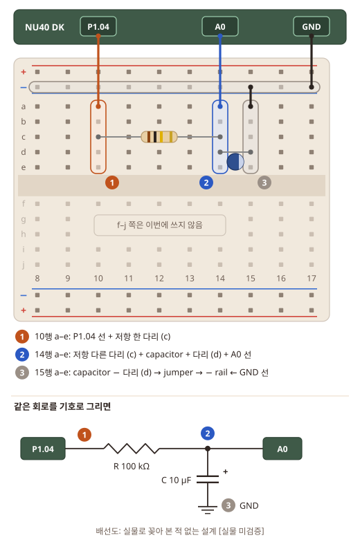
| 부품 | 다리 | 구멍 자리 | 이어진 묶음 |
|---|---|---|---|
| 저항 100 kΩ | 한쪽 다리 | 10행 c | ① 10행 a–e |
| 저항 100 kΩ | 다른 쪽 다리 | 14행 c | ② 14행 a–e |
| 전해 capacitor 10 µF | + (긴 다리) | 14행 d | ② 14행 a–e |
| 전해 capacitor 10 µF | − (띠 쪽, 짧은 다리) | 15행 d | ③ 15행 a–e |
| 수-수 jumper (검정) | 양 끝 | 15행 a ↔︎ 위 − rail | ③ (15행 a–e + − rail) |
| jumper (검정) | breadboard 쪽 끝 | 위 − rail 아무 구멍 ← board GND | ③ |
| jumper (주황) | breadboard 쪽 끝 | 10행 a ← board P1.04 | ① |
| jumper (파랑) | breadboard 쪽 끝 | 14행 a ← board A0 | ② |
꽂기 (USB를 뺀 채, 15분)
할 일
- board에서 USB를 뺍니다.
- 표의 위에서부터 부품 → breadboard 안 jumper → board로 가는 jumper 순서로 꽂습니다.
- 눈으로 점검: 저항 두 다리가 서로 다른 행(10행, 14행)인지, capacitor 긴 다리가 14행인지, board의 5V 핀에 간 선이 없는지.
- 멀티미터를 Ω에 두고 10행 b와 14행 b에 침을 댑니다. 약 100 kΩ이면 저항이 제자리입니다(capacitor 때문에 숫자가 잠깐 움직일 수 있음).
0 Ω 근처면 두 다리가 같은 행에 있거나 선이 10행과 14행을 직접 잇고 있습니다. 숫자가 안 나오면(OL) 저항 다리가 구멍에 덜 들어갔습니다.
코드 올리고 τ 읽기
할 일 미니 3의 코드(side3_rc_tau)를 그대로 씁니다. 핀(P1.04, A0)이 같습니다. P3.1처럼 새 sketch에 붙여 넣고 p3_rc_tau로 저장 → USB 꽂기 → Upload → Serial Monitor(115200).
- 정상 값: 약 22초마다 한 묶음이 찍힙니다.
tau measured가 0.8–1.2 s(부품값 1.00 s, 전해 capacitor 오차 ±20%),V_end가 약 3.3 V,t_s1.00 줄이 약 2.1 V. - 멀티미터로도: DC V, 검은 침 − rail, 빨간 침 14행 b. 충전하는 6초 동안 0 V에서 약 3.3 V로 천천히 오르고, 방전하는 6초 동안 0 V로 내려가면 정상입니다.
- 모두 0.00 근처 → P1.04 선이 다른 핀에 꽂혔거나 10행에 없습니다. 또는 저항이 10행과 14행을 잇지 않았습니다.
- 처음부터 3.3 V 근처 → A0 선이 14행이 아니라 10행(저항 앞쪽)에 있습니다.
tau measured -1.00→ 6초 안에 63%에 못 갔습니다. capacitor가 10 µF보다 훨씬 큽니다(예: 100 µF).- 값이 들쭉날쭉 튐 → 15행 a–rail jumper나 board GND 선이 빠졌습니다. rail이 끊긴 제품이면 끊긴 자리를 이었는지 봅니다.
기록 남기기 (완료 조건)
할 일 연구 노트에 잰 τ 세 번, 멀티미터로 잰 저항값, rail 끊김 여부를 적습니다.
관찰할 점. 회로도의 점 ②(가운데 점)는 breadboard에서 14행 a–e 묶음 하나입니다. 부품 다리 두 개와 A0 선이 모두 이 묶음에 들어 있어서 하나의 점이 됩니다.
다음 단계 조건. tau measured가 0.8–1.2 s이면 USB를 빼고 R–C 부품과 선을 모두 뽑은 뒤(DAC·ADC가 같은 행을 씀) P3.2–P3.3으로 갑니다.
P3.2–P3.3. DAC로 전압 만들고 ADC로 읽기
P2에서 소스미터가 하던 첫 번째 일은 "소자에 원하는 전압 걸기"였습니다. 이 단계에서는 그 일을 손톱만 한 칩 하나에게 맡기고, 정말 말한 대로 하는지 확인합니다. 가스레인지 손잡이를 떠올려 보세요. 손잡이를 "3"에 맞추면 불이 그만큼 나옵니다. DAC는 board가 말한 숫자(0–4095)만큼 전압을 내는 손잡이이고, ADC는 반대로 전압을 보고 숫자로 적는 눈금자입니다. 둘을 이으면 board가 자기가 낸 전압을 자기가 다시 읽을 수 있습니다. 그 숫자가 맞는지는 멀티미터로 대조합니다. 아직 소자는 없습니다.
| 할 일 | 하는 곳 | 결과로 보는 것 |
|---|---|---|
| library 2개 설치, DAC·ADC 배선 | Arduino IDE, breadboard | — |
| I²C 스캐너 | Arduino IDE | 칩 주소 두 개 (0x48, 0x6x) |
| DAC·ADC 대조 | Arduino IDE + 멀티미터 | 코드 2048 → 약 1.65 V |
DAC (digital-to-analog converter): 숫자를 전압으로 바꾸는 칩. MCP4725는 0–4095의 숫자(코드)를 받아 0–3.3 V 사이의 전압을 냅니다. 코드 2048이면 절반인 약 1.65 V.
ADC (analog-to-digital converter): 전압을 숫자로 바꾸는 칩. ADS1115는 입력이 4개(A0–A3)이고 16 bit(65,536단계)로 읽습니다. 눈금이 65,536개인 자와 같습니다.
연결 (module 핀 이름은 제품마다 다르니 실크 인쇄로 확인): 두 module 모두 VCC→board 3.3 V, GND→GND, SDA→P0.26, SCL→P0.27 (아두이노 모양 헤더의 SDA·SCL 자리). ADS1115의 ADDR→GND(주소 0x48). DAC VOUT → ADS1115 A0. module 전원은 5 V가 아니라 3.3 V에 연결합니다 (5 V로 켜면 SDA·SCL도 5 V가 될 수 있음).
VCC · GND · SDA · SCL · VOUT: module 다리의 이름. 차례로 전원(+), 전원(−, 0 V), 데이터선, 시계선, 출력 전압. module 기판에 흰 글자(실크)로 인쇄되어 있습니다. ADS1115는 VCC 대신 VDD로 적힌 것도 있습니다.
I²C 주소: 같은 두 선(SDA·SCL)에 매달린 칩들을 구별하는 번호. 0x48처럼 16진수로 씁니다. 반에서 출석 번호를 부르면 그 학생만 대답하듯, board는 주소를 불러서 그 칩에게만 말을 겁니다.
이어서 하기. 배선은 breadboard에 꽂힌 채 두면 다음 날에도 그대로 씁니다. Arduino IDE는 File → Open Recent로 마지막 sketch(p3_i2c_scan 또는 p3_dac_adc)를 엽니다.
Library Manager에서 library 두 개 설치
할 일 (3–5분, 한 번만)
- Arduino IDE 왼쪽 세로 줄의 세 번째 아이콘(책 모양)을 누릅니다. 왼쪽에 Library Manager 칸이 열립니다.
- 검색 칸에
MCP4725를 칩니다. Adafruit MCP4725 (by Adafruit) 아래 INSTALL. - "Install library dependencies?" 창이 뜨면 INSTALL ALL.
- 검색 칸을 지우고
ADS1X15를 칩니다. Adafruit ADS1X15 아래 INSTALL → 또 묻으면 INSTALL ALL. - 두 항목에
INSTALLED가 붙으면 끝입니다.
library: 칩을 쉽게 다루게 남이 미리 짜 둔 코드 묶음. 덕분에 "DAC에 2048을 보내라"를 한 줄(dac.setVoltage(2048, false))로 쓸 수 있습니다. Library Manager에서 이름으로 검색해 설치합니다.
breadboard에 DAC·ADC module 꽂고 배선
할 일 (20–30분) USB를 뺀 채 합니다. 꽂는 동안 board에 전원이 들어가 있으면 안 됩니다.
- board에서 USB 케이블을 뺍니다.
- R–C 첫 배선의 부품·선이 남아 있으면 모두 뽑습니다. DAC module 다리 6개를 c열 5–10행에, ADC module 다리 10개를 c열 15–24행에 꽂습니다(다리 하나에 한 행). 꽂은 뒤 행마다 들어간 다리 이름을 module 실크 글자로 읽어 적어 둡니다(예: "5행 = VCC"). 한 행의 a–e는 속으로 이어져 있으므로, 그 행의 남은 구멍(몸통에 가리지 않은 쪽)에 jumper wire를 꽂으면 그 다리에 이어집니다(부품 읽는 법, breadboard 속 연결).
- 아래 표의 순서대로 jumper wire를 하나씩 꽂습니다. 한 줄 꽂을 때마다 표에 체크합니다.
| 순서 | 어디에서 | 어디로 | 권장 선 색 |
|---|---|---|---|
| 1 | board 3.3V(3V3) 핀 | breadboard 위쪽 빨강(+) 전원줄 | 빨강 |
| 2 | board GND 핀 | breadboard 위쪽 파랑(−) 전원줄 | 검정 |
| 3 | DAC VCC 다리의 행 | 빨강(+) 전원줄 | 빨강 |
| 4 | DAC GND 다리의 행 | 파랑(−) 전원줄 | 검정 |
| 5 | ADC VDD(VCC) 다리의 행 | 빨강(+) 전원줄 | 빨강 |
| 6 | ADC GND 다리의 행 | 파랑(−) 전원줄 | 검정 |
| 7 | ADC ADDR 다리의 행 | 파랑(−) 전원줄 (주소 0x48) | 검정 |
| 8 | board SDA(P0.26) 핀 | DAC SDA 다리의 행 | 파랑 |
| 9 | DAC SDA 행 (남은 구멍) | ADC SDA 다리의 행 | 파랑 |
| 10 | board SCL(P0.27) 핀 | DAC SCL 다리의 행 | 노랑 |
| 11 | DAC SCL 행 (남은 구멍) | ADC SCL 다리의 행 | 노랑 |
| 12 | DAC VOUT 다리의 행 | ADC A0 다리의 행 | 초록 |
- 다 꽂은 뒤 눈으로 점검: 어느 선도 board의 5V 핀에 가 있지 않은지, SDA끼리·SCL끼리 이어졌는지(서로 바뀌지 않았는지), 빨강 줄과 파랑 줄이 직접 붙은 곳이 없는지.
- 점검이 끝나면 USB를 꽂습니다. board LED와 module의 작은 LED(있으면)가 켜집니다.
830홀 breadboard 중에는 긴 전원줄(rail)이 가운데에서 끊긴 제품이 있습니다. 멀티미터로 확인한 결과대로, 끊겼으면 끊긴 양쪽을 짧은 jumper로 이어 줍니다. board 헤더의 SDA·SCL·3.3V·GND 글자 위치는 board 실크로 확인합니다 [사진 확인].
I²C 스캐너 sketch 붙여 넣고 저장
할 일
- Arduino IDE에서 File → New Sketch. 새 창이 열립니다.
- 편집 창 클릭 → Ctrl+A → Delete로 기존 글을 지웁니다.
- 아래 코드 상자 오른쪽 위의 복사 아이콘 → 편집 창 클릭 → Ctrl+V.
- File → Save As… → 파일 이름
p3_i2c_scan→ 저장.
I²C 스캐너: 두 선에 어떤 주소의 칩이 있는지 1번부터 126번까지 하나씩 불러 보는 코드. 출석 부르기와 같습니다. 배선이 맞았는지 가장 먼저 확인하는 방법입니다.
#include <Adafruit_TinyUSB.h> // NU40: USB 시리얼(Serial)을 쓰려면 필요 (없으면 링크 오류)
#include <Wire.h>
void setup() {
Serial.begin(115200);
while (!Serial && millis() < 3000) delay(10);
Wire.begin(); // NU40: SDA = P0.26, SCL = P0.27
delay(500);
for (uint8_t a = 1; a < 127; a++) {
Wire.beginTransmission(a);
if (Wire.endTransmission() == 0) Serial.printf("I2C 주소 0x%02X\n", a);
}
Serial.println("끝");
}
void loop() {}뜻: "켜지면 주소 1–126을 하나씩 불러 보고, 대답한 주소를 찍은 뒤 끝을 찍어라." 한 번만 돌고 멈춥니다.
I²C 스캐너 Upload하고 Serial Monitor 보기
할 일
- 위쪽 선택 상자가
NU40DK nRF52840·내 COM 번호인지 봅니다. - Upload(→) → Output 창 끝
Device programmed., 오른쪽 아래 Done uploading. 확인. - 돋보기 아이콘으로 Serial Monitor를 열고 115200 baud인지 봅니다.
- 스캐너는 켜질 때 한 번만 돌므로, 아무것도 안 보이면 board의 리셋 버튼을 한 번 누릅니다.
I2C 주소 0x48
I2C 주소 0x62
끝0x48은 ADS1115입니다. 두 번째 줄의 번호(여기서는 0x62)가 내 DAC의 주소입니다. 연구 노트에 적어 둡니다. module에 따라 0x60–0x63 중 하나입니다.
끝만 나오면 아무 칩도 못 찾은 것입니다. USB를 빼고 SDA와 SCL이 서로 바뀌지 않았는지, GND가 이어졌는지, VCC가 3.3 V인지 봅니다. 주소가 하나만 나오면 안 나온 module의 배선을 봅니다. (리셋 버튼을 누르면 스캐너가 다시 돕니다.)
DAC·ADC 대조 sketch 붙여 넣고 주소 고치기
할 일
- File → New Sketch → 편집 창 Ctrl+A → Delete → 아래 코드 상자 오른쪽 위의 복사 아이콘 → Ctrl+V.
- 코드 다섯째 줄
#define DAC_ADDR 0x62에서0x62를 스캐너에서 본 내 DAC 주소로 고칩니다(같으면 그대로). - File → Save As… → 파일 이름
p3_dac_adc→ 저장.
#include <Adafruit_TinyUSB.h> // NU40: USB 시리얼(Serial)을 쓰려면 필요 (없으면 링크 오류)
#include <Wire.h>
#include <Adafruit_MCP4725.h>
#include <Adafruit_ADS1X15.h>
#define DAC_ADDR 0x62 // 바꿀 것: 스캐너에서 본 DAC 주소
Adafruit_MCP4725 dac;
Adafruit_ADS1115 ads;
const uint16_t codes[] = {0, 1024, 2048, 3072, 4095};
void setup() {
Serial.begin(115200);
while (!Serial && millis() < 3000) delay(10);
Wire.begin(); // NU40: P0.26·P0.27
if (!dac.begin(DAC_ADDR)) { Serial.println("DAC 없음: 주소 확인"); while (1) delay(1000); }
if (!ads.begin(0x48)) { Serial.println("ADC 없음: 배선 확인"); while (1) delay(1000); }
ads.setGain(GAIN_ONE); // 입력 범위 ±4.096 V
}
void loop() {
for (uint16_t c : codes) {
dac.setVoltage(c, false);
delay(200);
int16_t raw = ads.readADC_SingleEnded(0);
Serial.printf("DAC 코드 %4u → ADC %6d = %.3f V\n", c, raw, ads.computeVolts(raw));
delay(3000); // 이 사이에 멀티미터로 VOUT을 읽는다
}
}스캐너에서 DAC가 0x60으로 나왔다면 고친 줄은 이렇게 됩니다.
#define DAC_ADDR 0x60 // 바꿀 것: 스캐너에서 본 DAC 주소뜻: "DAC 코드 0, 1024, 2048, 3072, 4095를 3초 간격으로 차례로 내보내고, 그때마다 ADC A0로 읽은 값을 찍어라." 이 코드는 NU40용 컴파일만 확인했고 실물 시험 전입니다.
Upload하고 멀티미터로 대조
할 일 (10분)
- board·port 확인 → Upload(→) → Done uploading. 확인.
- Serial Monitor(115200)를 엽니다. 3초마다 한 줄씩 나오고, 다섯 줄(코드 0 → 4095)이 끝나면 처음부터 되풀이합니다.
- 멀티미터를 DC V에 맞추고, 검은 침을 파랑(−) 전원줄, 빨간 침을 DAC VOUT 다리 행의 남은 구멍에 댑니다.
- Serial Monitor에 새 줄이 찍힌 뒤 3초 안에 멀티미터 값을 읽어, 그 줄의
… V와 함께 연구 노트에 적습니다. 다섯 코드 모두 합니다.
DAC 코드 0 → ADC 3 = 0.000 V
DAC 코드 1024 → ADC 6584 = 0.823 V
DAC 코드 2048 → ADC 13176 = 1.647 V
DAC 코드 3072 → ADC 19760 = 2.470 V
DAC 코드 4095 → ADC 26320 = 3.290 V예상: 코드 2048에서 약 1.65 V(전원 3.3 V의 절반). 3V3 전원이 정확히 3.300 V가 아니어서 수십 mV 차이는 정상입니다. 양 끝(0 V·3.3 V 근처)은 출력이 끝까지 붙지 않을 수 있습니다(headroom). 멀티미터 값과 ADC 값이 수십 mV 안에서 같으면 성공입니다.
headroom (출력 여유): DAC나 op-amp가 전원 끝(0 V, 3.3 V)까지 완전히 못 가고 조금 못 미치는 것. 예: 코드 4095(맨 끝)를 보내도 3.300 V가 아니라 3.290 V가 나옵니다.
| DAC 코드 | Serial Monitor (V) | 멀티미터 (V) | 차이 (mV) |
|---|---|---|---|
| 0 | |||
| 1024 | |||
| 2048 | |||
| 3072 | |||
| 4095 |
질문. DAC 코드 2048에서 왜 약 1.65 V가 나올까요? 코드 1024라면 몇 V일까요? 먼저 적어 본 뒤 정답을 봅니다.
MCP4725는 0–3.3 V를 4096칸(코드 0–4095)으로 나눕니다. 한 칸은 3.3 V ÷ 4096 ≈ 0.0008 V(0.8 mV)입니다. 코드 2048은 딱 절반이므로 3.3 V × 2048/4096 = 1.65 V, 코드 1024는 4분의 1이므로 3.3 V × 1024/4096 ≈ 0.825 V입니다. 위 화면의 0.823 V처럼 몇 mV 다른 것은 전원이 정확히 3.300 V가 아니거나 칩마다 조금씩 다르기 때문입니다.
DAC 없음: 주소 확인 → DAC_ADDR을 스캐너 값으로 바꿨는지. ADC 없음: 배선 확인 → ADDR 핀이 GND에 갔는지. 전압이 코드에 비례해 오르지 않으면 VOUT이 A0에 이어졌는지 봅니다.
풀업 확인
module마다 I²C 풀업 저항이 있으면 병렬로 합쳐집니다. 통신이 불안정하면(값이 가끔 튀거나 없음이 간헐적으로 나오면) module 하나만 남기고 시험해 원인을 좁힙니다. 뺄 때는 항상 USB를 먼저 뺍니다.
풀업 저항: I²C 선을 평소에 3.3 V로 당겨 두는 저항. module마다 하나씩 들어 있어서, module을 여러 개 달면 병렬로 합쳐져 당기는 힘이 너무 세질 수 있습니다.
관찰할 점. DAC는 "숫자 → 전압", ADC는 "전압 → 숫자"입니다. 둘을 이으면 board가 자기가 낸 전압을 자기가 읽어 확인할 수 있습니다. 소스미터가 하던 "전압 걸기"는 이것으로 끝이고, "전류 읽기"는 다음 단계의 회로가 더 필요합니다.
다음 단계 조건. 코드 2048에서 멀티미터와 ADC가 모두 1.65 V 근처를 보이면 P3.4로 갑니다.
P3.4. 소자 구동·전류 측정 회로
이제 소스미터의 두 번째 일, "흐르는 전류 재기"를 맡깁니다. 그런데 ADC는 전압만 읽을 수 있습니다. 그래서 전류를 전압으로 바꿔 주는 회로가 하나 더 필요합니다. 수도관을 떠올려 보세요. 관에 흐르는 물의 양은 눈에 안 보이지만, 관 중간에 좁은 구간을 끼우고 그 앞뒤의 수압 차이를 재면 물이 얼마나 흐르는지 알 수 있습니다. 전기에서는 좁은 구간이 저항이고, 수압 차이가 전압입니다.
새 체중계를 받으면 먼저 무게를 아는 1 kg 추를 올려 보듯, 이 회로도 진짜 소자를 꽂기 전에 값을 아는 저항(100 kΩ)과 RC로 맞는 숫자가 나오는지 확인합니다. 이 단계의 마지막 그림(소스미터와 겹쳐 그린 저항·RC 측정)이 P3의 첫 결과이고, 그 전까지 이 회로는 "설계안"입니다.
| 할 일 | 하는 곳 | 결과로 보는 것 |
|---|---|---|
| TIA 회로 꽂기 | breadboard | — |
| device_io.h 고치고 복사 | VS Code | TERMINAL의 copied: 세 줄 |
B4_test의 c 보정, e 저장, s 계단 |
Arduino IDE | 100 kΩ에서 기대 전류와 잰 전류 |
| 소스미터와 겹쳐 그리기 | 연구 노트 | P3의 첫 결과 그림 |
전압·전류 경로
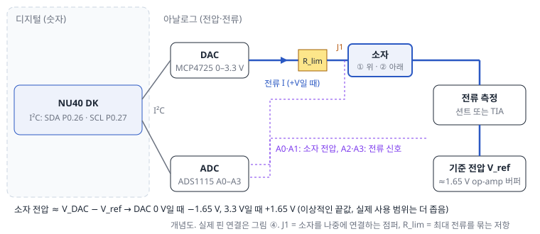
DAC는 0–3.3 V만 낼 수 있습니다. 소자의 아래쪽 끝을 0 V 대신 기준 전압 V_ref ≈ 1.65 V에 붙이면 소자 전압 ≈ V_DAC − V_ref가 되어 음전원 없이 ±방향을 모두 걸 수 있습니다. 실제로 쓸 수 있는 범위는 DAC 출력 여유, op-amp 출력 범위, R_lim 전압 강하 때문에 ±1.65 V보다 좁습니다. 저항으로 검증할 때 잰 범위만 씁니다.
V_ref (기준 전압): 회로의 "가운데 0점"으로 쓰는 전압, 약 1.65 V. 소자의 아래쪽 끝을 여기에 붙이면, DAC가 2.15 V를 낼 때 소자에는 +0.5 V, 1.15 V를 낼 때 −0.5 V가 걸립니다. 시소의 가운데 받침점과 같습니다.
전원·리셋·통신 실패 때 무엇이 걸리나
중요J1을 빼고 켜기
DAC는 전원이 켜지는 순간 EEPROM에 저장된 코드를 firmware보다 먼저 내보냅니다. 그 사이 V_ref는 아직 0 V에서 오르는 중이라, 소자에 순간적으로 수 V가 걸릴 수 있습니다. 그래서 전원을 켜거나 Upload할 때는 항상 J1을 빼 둡니다.
EEPROM: 전원을 꺼도 지워지지 않는 DAC 안의 작은 저장 공간. DAC는 켜질 때 여기 저장된 코드를 firmware보다 먼저 내보냅니다. 전등 스위치가 켜진 채로 정전됐다가 전기가 돌아오면 불이 바로 켜지는 것과 비슷합니다.
J1: 소자로 가는 길을 손으로 끊는 2핀 jumper. 전원을 켜거나 Upload할 때는 빼 둡니다.
| 상황 | DAC 출력 | V_ref | 소자에 걸릴 수 있는 것 | 대책 |
|---|---|---|---|---|
| 전원 켜는 순간 | EEPROM에 저장된 코드를 firmware보다 먼저 출력 (공장 출하 값은 제품별 확인) | 0 V에서 1.65 V로 오르는 중 (수 ms) | 순간적으로 수 V 차이 가능 | J1을 빼 둔 채 켜기. B4_test의 e 명령으로 '소자 0 V' 코드를 EEPROM에 한 번 저장 |
| board 리셋·Upload 중 | 마지막 값 유지 (DAC는 계속 전원을 받음) | 유지 | 마지막 pulse 전압이 계속 | Upload 전 J1 빼기 |
| I²C 통신 실패 | 마지막 값 유지 | 유지 | 마지막 값 | firmware는 시작 점검에 실패하면 구동하지 않음. 측정 중 실패는 J1로 끊기 |
| USB 뽑힘 | 꺼짐 | 꺼짐 | capacitor 방전 동안 작은 전압 | — |
R_lim (전류 상한 저항): 이 회로에서 어떤 두 점 사이도 3.3 V를 넘지 않으므로, 소자가 완전히 합선돼도 전류 ≤ 3.3 V / R_lim 입니다. 예: R_lim = 33 kΩ이면 100 µA 이하. 대신 정상 동작에서도 I × R_lim만큼 소자 전압이 줄어듭니다. 예: 10 µA × 33 kΩ = 0.33 V. 그래서 소자 전압은 J1 뒤(소자 위쪽 단자)에서 A0으로 직접 재고, 분석에는 잰 값을 씁니다. R_lim은 compliance처럼 전압을 조절하지 않고, 상한만 묶습니다.
R_lim (전류 상한 저항): 소자와 한 줄로 이어 넣는 저항. 소자가 합선돼도 전류가 3.3 V ÷ R_lim을 못 넘습니다. 수도관 앞에 끼운 가는 관처럼, 안쪽이 터져도 물이 한꺼번에 쏟아지지 않게 합니다.
compliance: 소스미터가 "전류가 이 값을 넘으면 전압을 스스로 낮추는" 안전 기능. 이 회로에는 없습니다.
R_lim이 pulse를 느리게 만든다: 소자는 전극 계면 때문에 정전용량 C_dev가 클 수 있고, R_lim과 함께 충전 time constant R_lim × C_dev를 만듭니다. 예: 33 kΩ × 0.5 µF(가정) ≈ 16 ms → θ = 50 ms pulse의 앞부분 상당 시간 동안 소자 전압이 목표에 못 미칩니다. 그래서 board는 pulse 끝마다 실제 소자 전압(V 줄)을 같이 기록하고, 목표에 도달하지 못했다면 R_lim을 줄이거나 θ를 늘립니다.
노트(참고) 핀과 부호를 한 번에 대조하기
| ADS1115 입력 | TIA 방식에서 연결되는 점 | 션트 방식에서 연결되는 점 | 코드에서의 쓰임 |
|---|---|---|---|
| A0 | 소자 ① 위쪽 단자 (R_lim·J1 뒤) | 같음 | A0 − A1 = 소자 전압 (readDeviceV) |
| A1 | V_ref | 소자 ② 아래쪽 (= 션트 위쪽) | |
| A2 | TIA 출력 (MCP6002 7번 핀) | 션트 위쪽 (A1과 같은 점) | 전류 신호 (readCurrent_nA) |
| A3 | V_ref | V_ref (= 션트 아래쪽) | 시작할 때 V_ref를 재는 데도 씀 (ioBegin) |
| 약속 | 그림 | 코드 |
|---|---|---|
| 전류 +방향 | 소자 ① → ② (그림 6의 화살표, +V일 때) | TIA: I = −(A2−A3)/R_f, 션트: I = +(A2−A3)/R_s → 둘 다 ①→②가 + |
| 소자 전압 + | ①이 ②보다 높음 (P2.1 첫 그림의 극성 약속과 같음) | A0 − A1 |
| DAC 코드 | DAC 출력 = V_ref + 목표 소자 전압 (전류가 없을 때) | dacCodeFor(v) = dacCodeForOutput(VREF + v) |
노트(참고) 데이터시트와 대조할 값 (조건부)
아래는 일반적인 데이터시트 값입니다. 구매한 정확한 부품 번호의 데이터시트로 다시 확인하고, 다르면 그 값을 씁니다.
| 부품 | 항목 | 이 설계에서 가정한 것 | 조건·주의 |
|---|---|---|---|
| ADS1115 | 입력 핀 절대 전압 | 모든 입력이 0–3.3 V 안 (GND−0.3 V ~ VDD+0.3 V를 넘으면 안 됨) | 차동 범위(PGA)가 ±4.096 V여도 각 핀은 전원 범위를 넘을 수 없음 |
| ADS1115 | PGA 범위 | 전류: ±2.048 V(TIA) 또는 ±0.256 V(션트), 전압: ±2.048 V | 범위가 작을수록 한 칸이 작지만 넘치기 쉬움 |
| ADS1115 | 속도·다중화 | 최대 860회/초, 한 번에 한 입력쌍만 변환 → 쌍을 바꾸면 순서대로 | 신호원 임피던스가 크거나 입력 앞 RC 필터가 있으면 바꾼 직후 값이 덜 정착할 수 있음 → 저항·RC로 확인 |
| MCP4725 | 전원 켤 때 출력 | EEPROM에 저장된 코드 | 공장 출하 값은 제품별로 확인. firmware가 돌기 전 출력 |
| MCP4725 | 출력 범위·정착 | 0–VDD 근처, 끝(0 V·3.3 V 근처)은 덜 붙을 수 있음, 정착 수 µs | 부하 전류·정전용량이 크면 더 느려짐 |
| MCP6002 | 출력 범위 | 전원 끝에서 수십 mV 안쪽까지 (부하 작을 때) | 부하 전류가 크면 여유가 줄어듦 → 포화 판정 여유 0.15 V |
| MCP6002 | GBW·오프셋·입력 바이어스 | GBW 약 1 MHz, 오프셋 수 mV, 입력 바이어스 pA 수준(상온) | 온도가 오르면 바이어스 전류 증가 |
| TIA | C_f 근사식 | 아래 전류 측정의 식 | op-amp를 이상적 1차 응답으로, C_in ≫ C_f로 본 근사. 실측(저항으로 검증)으로 확인 |
전류 측정: 션트 또는 TIA
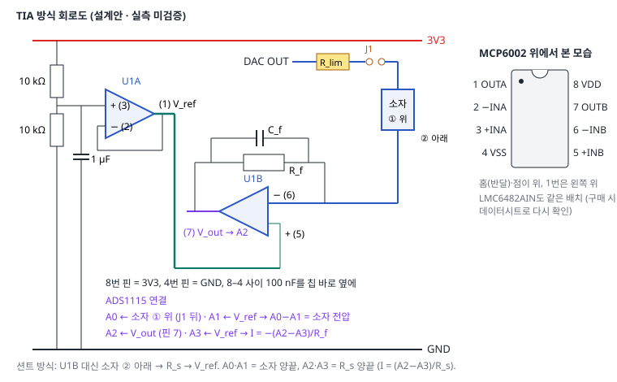
전류가 얼마나 작은지에 따라 두 방법 중 하나를 고릅니다. 기준은 P2.1에서 잰 소자 전류입니다.
| 소자 전류 (P2.1 특성표) | 방법 | 핵심 |
|---|---|---|
| 1 µA – 1 mA | 션트 저항 R_s | 소자와 직렬로 R_s. I = (A2−A3) / R_s. ADS1115 ±0.256 V 범위(한 칸 7.8 µV) |
| 10 nA – 100 µA | TIA (transimpedance amplifier, 전류–전압 변환기) | op-amp의 − 입력이 V_ref에 붙어 있도록(가상 기준점) 피드백 R_f로 전류를 전압으로. V_out − V_ref = −I × R_f |
| 10 nA 미만 | breadboard로는 어려움 | 소스미터 유지, 위의 계측 중심 대안, 또는 소재·면적으로 전류 키우기 |
shunt 저항 (R_s): 전류 길에 끼운 작은 저항. 양끝 전압을 재면 전류를 압니다(I = V ÷ R). 예: 1 kΩ 양끝이 0.01 V면 10 µA. 위 수도관 이야기의 "좁은 구간"입니다.
TIA (transimpedance amplifier): op-amp로 만든 "전류 → 전압 변환기". shunt보다 작은 전류(nA)도 읽습니다. 변환 비율은 피드백 저항 R_f가 정합니다. 예: R_f = 150 kΩ이면 1 µA가 0.15 V가 됩니다.
가상 기준점: TIA의 op-amp가 − 입력을 V_ref와 같게 계속 맞춰 주는 것. 덕분에 소자의 아래쪽 끝이 V_ref에 "붙어 있는 것처럼" 됩니다.
R_f 고르기: 출력이 전원 끝에 닿지 않도록 R_f ≈ 1.5 V ÷ 최대 전류. 예: 최대 10 µA → R_f = 150 kΩ. 이때 ADS1115 ±2.048 V 범위의 한 칸(62.5 µV)은 0.42 nA에 해당합니다.
포화: 전류가 약 1.5 V/R_f를 넘으면 op-amp 출력이 전원 끝에 붙고, 가상 기준점이 깨져 소자 전압도 계산과 달라집니다. ADC는 여전히 범위 안이라 숫자만 보면 모를 수 있어서, firmware는 출력이 기준에서 1.5 V 이상 벗어나면 포화로 셉니다 (데이터 모으기의 Q 줄).
saturation (op-amp 포화): op-amp 출력이 전원 끝(0 V나 3.3 V)에 붙어 더 못 움직이는 것. 버튼 리듬의 조도 포화와 같은 뜻입니다. 이때 숫자는 나오지만 틀린 값입니다.
C_f와 안정성 — R_f·C_f 값만으로 보장되지 않습니다. TIA는 입력에 붙은 용량(C_in: 소자의 큰 계면 용량 + 배선 + op-amp 입력)이 클수록 출력이 떨리기 쉽습니다. 출발점으로 쓰는 근사식:
C_f ≥ √( C_in / (2π · R_f · GBW) ) (GBW: op-amp의 이득-대역폭 곱, MCP6002 약 1 MHz)
C_f: R_f와 나란히 다는 작은 capacitor. TIA 출력이 저절로 떨리는(발진하는) 것을 막는 완충 장치입니다. 너무 크면 대신 반응이 느려집니다.
GBW (gain-bandwidth product, 이득-대역폭 곱): op-amp가 얼마나 빠른 신호까지 따라가는지를 나타내는 값. MCP6002는 약 1 MHz. 클수록 빠른 op-amp입니다. 식에 넣는 숫자로만 알면 됩니다.
예: C_in = 0.5 µF(가정), R_f = 150 kΩ → C_f ≥ 약 0.7 nF. 그리고 응답 시간(대략 5 × R_f × C_f)이 pulse 폭 θ보다 충분히 짧아야 합니다: 150 kΩ × 6.8 nF × 5 ≈ 5 ms ≪ 50 ms. C_in은 모르는 값이므로 실측으로 확인합니다 (저항으로 검증). op-amp 입력 오프셋(수 mV) 때문에 0 V에서도 전류가 0이 아니게 보일 수 있으니, 0 V에서 잰 값을 빼는 영점 보정을 합니다.
저항·RC로 회로를 먼저 검증
이 카드 묶음의 목적: 진짜 소자를 꽂기 전에, 값을 아는 저항(100 kΩ)과 RC로 회로가 맞는 숫자를 내는지 확인합니다. 쓰는 firmware는 B4_test입니다. Serial Monitor에 글자 하나를 입력해 명령합니다: s = 전압 계단 시험, c = DAC 보정, e = EEPROM에 안전 코드 저장.
RC 모의 소자: 저항(R)과 capacitor(C)를 나란히 단 것. 전압을 바꾸면 전류가 천천히 자리 잡는 "느린 소자" 흉내입니다. 진짜 소자를 꽂기 전에 회로를 시험하는 데 씁니다.
이어서 하기. 회로는 breadboard에 꽂힌 채 두고, 다시 시작할 때는 J1을 뺀 채 USB를 꽂고 Arduino IDE에서 File → Open Recent → B4_test를 엽니다. board에는 마지막 firmware가 남아 있습니다.
TIA 회로 꽂기 (USB 뺀 채, 설계안)
할 일 (30–60분) P3.2–3의 DAC·ADC 배선은 그대로 두고, DAC VOUT과 ADC A0를 잇던 초록 선만 뺍니다. 아래는 그림 7을 꽂는 순서입니다. 설계안이며 실물로 꽂아 본 적이 없습니다. 꽂기 전에 MCP6002 데이터시트의 핀 배치와 대조합니다.
- USB를 뺍니다. J1은 아직 꽂지 않습니다.
- MCP6002를 breadboard 가운데 홈을 걸치게 꽂습니다(다리 4개는 위쪽 e열, 4개는 아래쪽 f열). 반달 홈·점이 왼쪽에 오게 하면 왼쪽 아래가 1번 핀, 아래 줄이 1–4번, 위 줄이 오른쪽부터 5–8번입니다(위에서 본 그림 7 오른쪽과 같은 배치를 눕힌 것, 부품 읽는 법). 아래 표는 1번 핀을 30행 f에 꽂았다고 정한 예입니다. 그러면 1–4번 = 30–33행 f, 8·7·6·5번 = 30·31·32·33행 e입니다. 다른 행에 꽂았다면 표의 행 번호를 같은 만큼 옮겨 적습니다.
- 아래 표를 순서대로 꽂습니다. 행 번호 옆의 핀 이름은 그 행 묶음에 이어진 MCP6002 다리입니다.
| 순서 | 어디에서 | 어디로 | 무엇 |
|---|---|---|---|
| 1 | 30행 a = MCP6002 8번 (VDD) | 위 빨강(+) rail (3.3 V) | jumper, 전원 |
| 2 | 33행 j = MCP6002 4번 (VSS) | 위 파랑(−) rail | jumper, GND |
| 3 | 30행 b (8번) | 위 파랑(−) rail | 100 nF capacitor, 칩 바로 옆 |
| 4 | 위 빨강(+) rail | 36행 b (이하 '분압점' = 36행 a–e) | 10 kΩ |
| 5 | 36행 c (분압점) | 위 파랑(−) rail | 10 kΩ |
| 6 | 36행 d (분압점) | 위 파랑(−) rail | 1 µF capacitor (전해면 + 다리가 36행) |
| 7 | 36행 a (분압점) | 32행 g = MCP6002 3번 (+INA) | jumper |
| 8 | 30행 h = MCP6002 1번 (OUTA) | 31행 h = MCP6002 2번 (−INA) | jumper (U1A 버퍼) → 1번 핀 = V_ref. 30행 f–j 묶음 전체가 V_ref |
| 9 | 30행 i (V_ref) | 33행 b = MCP6002 5번 (+INB) | jumper |
| 10 | 32행 c = MCP6002 6번 (−INB) | 31행 c = MCP6002 7번 (OUTB) | R_f (예: 150 kΩ, 옆 행이라 다리를 짧게 구부림. 멀티미터로 잰 값 적기) |
| 11 | 32행 d (6번) | 31행 d (7번) | C_f (예: 6.8 nF), R_f와 나란히 |
| 12 | 31행 a = MCP6002 7번 (V_out) | ADC A2 다리의 행 | jumper |
| 13 | 30행 g, 30행 j (V_ref) | ADC A1 다리의 행, ADC A3 다리의 행 | jumper 2개 |
| 14 | DAC VOUT 다리 행의 남은 구멍 | 40행 a. 그리고 40행 c ↔︎ 44행 c에 R_lim (예: 33 kΩ) | jumper + 저항 |
| 15 | 44행 e | 45행 e | J1: 2핀 header를 두 행에 걸쳐 꽂음 (jumper 캡은 아직 빼 둔 채) |
| 16 | 45행 a = 소자 ① 위쪽 자리 | ADC A0 다리의 행 | jumper |
| 17 | 49행 a = 소자 ② 아래쪽 자리 | 32행 a = MCP6002 6번 (−INB) | jumper. 소자 자리 = 45행 c–d ↔︎ 49행 c–d (다음 카드에서 저항을 꽂을 두 행) |
- 눈으로 점검: 5 V에 간 선이 없는지, 8번·4번이 바뀌지 않았는지, ADC 입력(A0–A3)에 3.3 V를 넘는 점이 이어지지 않았는지.
- 멀티미터로 R_f와 R_lim의 실제 저항값을 재서 연구 노트에 적습니다(꽂기 전에 재도 됩니다).
션트 방식(전류 ≥ 1 µA)이면 10–12번 대신 소자 ② 아래쪽(49행) → R_s → V_ref(30행 f–j의 남은 구멍)로 잇고, A1·A2를 소자 ② 아래쪽(49행, R_s 위쪽)에, A3를 V_ref에 둡니다(그림 7 아래 설명과 같음).
device_io.h에 내 DAC 주소·R_f 적기
P3.4–P3.6 firmware는 모두 device_io.h의 값을 씁니다. 기본값은 DAC 주소 0x60, R_f 150 kΩ입니다. 내 것과 다르면 고쳐야 board가 DAC를 찾고 전류를 맞게 계산합니다.
device_io.h: P3.4–P3.6의 firmware가 같이 쓰는 설정·함수 파일. 내 DAC 주소, R_f 값, DAC 보정값처럼 "내 회로에만 맞는 숫자"를 여기 한 곳에 적습니다.
할 일 (5분) VS Code에서 합니다.
- 왼쪽 EXPLORER에서
firmware→common→device_io.h를 클릭해 엽니다. - Ctrl+F로
DAC_ADDR,R_MEAS를 찾아 숫자만 내 값으로 고치고 Ctrl+S.
바꾸기 전:
#define DAC_ADDR 0x60 // I2C 스캐너로 확인 (호환품 0x60, Adafruit 0x62 등)
const float R_MEAS = 150e3f; // TIA 피드백 저항 R_f 또는 션트 저항 R_s [Ω] — 멀티미터로 잰 실제 값바꾼 뒤 (예: 스캐너에서 0x62, 멀티미터로 R_f = 149.2 kΩ):
#define DAC_ADDR 0x62 // I2C 스캐너로 확인 (호환품 0x60, Adafruit 0x62 등)
const float R_MEAS = 149.2e3f; // TIA 피드백 저항 R_f 또는 션트 저항 R_s [Ω] — 멀티미터로 잰 실제 값0x, 끝의 f, 세미콜론(;)은 지우지 않습니다. 션트 방식이면 // #define MEAS_SHUNT 줄의 앞 //를 지우고 R_MEAS에 R_s 값을 넣습니다.
중요꼭 common 폴더의 파일을 고칠 것
B4_test, B5_collect, B6_standalone 폴더에도 device_io.h가 하나씩 들어 있습니다. 거기서 고치면 다음 단계가 common의 파일로 덮어써서 사라집니다. 항상 firmware\common\device_io.h를 고칩니다.
할 일 이어서 EXPLORER에서 python → sync_firmware.py를 클릭해 열고 오른쪽 위 ▷. 고친 파일을 세 sketch 폴더에 복사합니다(1초 안에 끝남). TERMINAL에 copied: B4_test, copied: B5_collect, copied: B6_standalone 세 줄이 나오면 됩니다. Arduino IDE에 B4_test 등이 열려 있으면 그 창은 먼저 닫습니다.
FileNotFoundError: … device_io.h → ion-projects-code 안의 firmware 폴더 이름·위치가 바뀌었는지 봅니다. python 폴더와 firmware 폴더는 나란히 있어야 합니다.
B4_test 열어 J1 뺀 채 Upload
할 일
- J1이 빠져 있는지 봅니다. USB를 꽂습니다.
- Arduino IDE File → Open… → 바탕 화면 →
ion-projects-code→firmware→B4_test→B4_test.ino→ 열기. 새 창에B4_test.ino와device_io.h두 탭이 보입니다. - board·port 선택 상자 확인 → Upload(→) → Output 창 끝
Device programmed., Done uploading. 확인(첫 번째는 1–2분). - Serial Monitor(돋보기)를 열고 115200 baud. 아무것도 안 보이면 리셋 버튼을 한 번 누릅니다.
READY VREF=1.6482 V, ADC 1회 1210 usVREF가 1.4–1.9 V 안이면 기준 전압 회로가 살아 있는 것입니다.
E,-1,io_init (I2C 주소·배선·기준 전압 확인). 소자를 구동하지 않습니다.가 나오면 I²C 주소(스캐너, device_io.h의 DAC_ADDR), SDA·SCL 바뀜, GND 연결, 기준 전압(A3)이 1.4–1.9 V인지 순서로 봅니다. 이때 board는 안전하게 아무것도 구동하지 않습니다.
DAC 출력 보정 (c 명령)
할 일
- 소자 자리(① 45행, ② 49행)에 아무것도 꽂지 않은(열린) 상태로 두고, J1을 꽂습니다.
- Serial Monitor 위쪽 입력 칸("Message (Enter to send …)")을 클릭하고
c를 친 뒤 Enter. - 1–2초 안에 다섯 줄이 나옵니다.
전류가 흐르지 않으면 R_lim에 전압이 걸리지 않아 A0 = DAC 출력이 되므로, 이때 잰 직선이 "DAC 코드 → DAC 출력 전압" 보정입니다. 전류가 5 nA 넘게 보이면 코드가 보정을 거부합니다.
코드 500 → 0.4031 V
코드 1500 → 1.2088 V
코드 2500 → 2.0146 V
코드 3500 → 2.8203 V
device_io.h에 넣을 값: DAC_SLOPE = 0.00080573f; DAC_OFS = 0.00024f;할 일 마지막 줄의 두 값을 device_io.h에 넣습니다.
- Serial Monitor의 마지막 줄을 마우스로 끌어 칠하고 Ctrl+C로 복사해 연구 노트에도 붙여 둡니다.
- Arduino IDE의 B4_test 창을 닫습니다.
- 앞 카드처럼 VS Code에서
firmware\common\device_io.h를 열고,DAC_SLOPE·DAC_OFS두 줄의 숫자를 바꿔 Ctrl+S.
바꾸기 전:
float DAC_SLOPE = 3.30f / 4095.0f; // B4 보정 결과 [V/코드] — DAC 출력 핀 전압 = DAC_SLOPE × 코드 + DAC_OFS
float DAC_OFS = 0.0f; // B4 보정 결과 [V]바꾼 뒤 (위 화면의 예):
float DAC_SLOPE = 0.00080573f; // B4 보정 결과 [V/코드] — DAC 출력 핀 전압 = DAC_SLOPE × 코드 + DAC_OFS
float DAC_OFS = 0.00024f; // B4 보정 결과 [V]- VS Code에서
python/sync_firmware.py를 다시 ▷(TERMINAL에copied:세 줄). - J1을 뺀 뒤 File → Open으로
B4_test.ino를 다시 열어 Upload → Serial Monitor에READY …가 다시 나오면 됩니다.
이 보정은 DAC 출력을 맞추는 것이지 소자 전압을 맞추는 것이 아닙니다. 소자에 전류가 흐르면 소자 전압 = DAC 출력 − V_ref − I × R_lim이 되고, board는 이것을 따로 재서 기록합니다 (되먹임으로 맞추지는 않음).
전류 … nA가 흐릅니다. 소자/저항을 빼고(열린 상태) 다시 c 하세요. → 소자 자리에 아직 무엇이 꽂혀 있습니다. 빼고 다시 c.
EEPROM에 안전 코드 저장 (e 명령, 한 번만)
할 일 보정한 B4_test가 올라간 상태에서, Serial Monitor 입력 칸에 e를 넣고 Enter. 다음 전원부터 DAC가 켜지는 순간 '소자 0 V' 코드를 냅니다.
EEPROM 저장 완료 (자주 하지 말 것)EEPROM은 쓰는 횟수에 한계가 있으므로 보정이 바뀔 때만 다시 합니다. 그래도 전원을 켤 때 J1을 빼는 습관은 그대로 지킵니다.
100 kΩ 저항으로 전압 계단 (s 명령)
할 일
- J1을 뺍니다. 소자 자리(45행 c ↔︎ 49행 c)에 100 kΩ 저항을 꽂습니다. 멀티미터로 잰 실제 값도 적어 둡니다.
- J1을 꽂습니다.
- Serial Monitor 입력 칸에
s를 넣고 Enter. 약 2초 동안 다섯 줄이 나옵니다.
−1~+1 V에서 "실제 전압 / 100 kΩ"과 측정 전류가 맞는지 봅니다.
요청 -1.000 V | 실제 -0.9987 V | -9986.40 nA | 기대(100k) -9987.0 nA
요청 -0.500 V | 실제 -0.4993 V | -4991.20 nA | 기대(100k) -4993.0 nA
요청 +0.000 V | 실제 +0.0004 V | +3.10 nA | 기대(100k) +0.4 nA
요청 +0.500 V | 실제 +0.4996 V | +4997.80 nA | 기대(100k) +4996.0 nA
요청 +1.000 V | 실제 +0.9991 V | +9993.50 nA | 기대(100k) +9991.0 nA| 조각 | 뜻 |
|---|---|
요청 -1.000 V |
소자에 걸려고 한 전압 |
실제 -0.9987 V |
A0 − A1로 잰 실제 소자(저항) 양끝 전압 |
-9986.40 nA |
TIA로 잰 전류 |
기대(100k) -9987.0 nA |
실제 전압 ÷ 100 kΩ. 위 전류와 비교할 값 |
실제로 계산한 기대(100k)와 측정 전류가 몇 % 안에서 같으면 회로가 맞는 것입니다. 0 V에서 몇 nA가 남는 것은 op-amp 오프셋이며, 영점 보정으로 뺍니다. 다섯 줄을 복사해 연구 노트에 붙여 둡니다(소스미터와 겹쳐 그릴 때 씀).
질문. 요청 +0.500 V 줄에서 기대(100k)는 왜 약 +4996 nA일까요? 그리고 요청 +0.000 V인데 전류가 +3.10 nA인 것은 고장일까요? 먼저 적어 본 뒤 정답을 봅니다.
옴의 법칙 I = V ÷ R입니다. 실제로 걸린 전압 0.4996 V를 100 kΩ(= 100,000 Ω)으로 나누면 0.000004996 A = 4.996 µA = 4996 nA입니다(1 µA = 1000 nA). 요청한 0.500 V가 아니라 실제 값으로 계산하는 이유는, DAC가 낸 전압과 저항에 걸린 전압이 조금 다르기 때문입니다.
고장이 아닙니다. op-amp는 입력이 0이어도 출력이 몇 mV 어긋나 있는 버릇(오프셋)이 있습니다. 이것이 몇 nA처럼 보이는 것입니다. 저울에 아무것도 안 올렸는데 3 g이 나오면 영점을 맞추듯, 0 V에서 잰 값을 다른 값에서 빼면 됩니다(영점 보정).
거부됨 → 요청 전압이 V_LIMIT(1.0 V)을 넘은 것. [포화]가 붙음 → R_f가 너무 커서 출력이 전원 끝에 붙은 것. R_f를 줄입니다(줄인 값은 device_io.h의 R_MEAS에도). 전류가 일정 비율로 다르면 R_f 실제 값과 DAC 보정을 봅니다.
RC 모의 소자로 떨림·정착 확인
할 일
- J1을 뺍니다. 소자 자리의 100 kΩ 옆에 1 µF 필름 capacitor를 나란히(같은 두 행, 45행 d ↔︎ 49행 d에) 꽂아 RC 모의 소자를 만듭니다.
- J1을 꽂고 Serial Monitor에
s→ Enter. - 출력이 떨리지(발진) 않는지, 원하는 시간 안에 자리 잡는지 봅니다. B4_test는 전압을 바꾸고 0.3초 뒤에 읽으므로, RC(τ = 100 kΩ × 1 µF = 0.1 s)가 다 정착하지 않은 값이 섞여 보일 수 있습니다.
떨리면 C_f를 키우거나, 소자와 TIA 입력 사이에 작은 저항(1–10 kΩ)을 넣고 다시 봅니다. 부품을 바꿀 때마다 J1부터 뺍니다.
회로 자체가 기억을 만들지 않는지
할 일 저항으로 P2.1의 쓰기–쉬기–읽기를 하면 읽기 전류 차이가 없어야 합니다. 차이가 보이면 회로(C_f, 기준 전압 capacitor 등)가 만든 것입니다.
소스미터로도 재서 겹쳐 그리기 (완료 조건)
할 일 같은 저항·RC를 소스미터로도 재서 겹쳐 그리고, 그림과 두 측정의 차이(%)를 연구 노트에 남깁니다. 이 그림이 P3의 첫 결과이고, 그 전까지 이 회로는 "설계안"입니다.
관찰할 점. 소스미터와 다른 점을 세 가지로 정리합니다. 첫째, 이 회로는 compliance가 없고 R_lim이 상한만 묶습니다. 둘째, DAC가 낸 전압과 소자에 걸린 전압은 다르므로 소자 전압은 항상 재서 씁니다. 셋째, 포화는 숫자만 봐서는 모르므로 firmware가 세어 줍니다.
다음 단계 조건. 저항·RC 측정이 소스미터와 겹치면 P3.5로 갑니다.
R–C 자리에 소자를 꽂을 때: 부품만 바꾸면 되나
사이드 프로젝트와 R–C 첫 배선에서는 "R–C 자리에 소자를 꽂으면 같은 질문을 할 수 있다"고 했습니다. 질문은 같지만, 회로는 그대로 두고 부품만 바꾸면 되는 경우는 드뭅니다. 먼저 이 회로가 하는 일을 두 줄로 정리합니다.
- 거는 것: DAC가 만든 전압 pulse. 소자 아래쪽이 V_ref(약 1.65 V)에 붙어 있어서, 소자에는 DAC 전압 − V_ref가 걸립니다(R_lim에서 떨어지는 만큼 덜).
- 읽는 것: 소자를 지나간 전류. TIA(또는 션트 저항)가 전류를 전압으로 바꾸고, ADS1115가 그 전압을 숫자로 읽습니다. R–C 첫 배선처럼 capacitor 전압을 바로 읽는 것이 아닙니다.
아래 조건 중 하나라도 맞으면 소자 앞뒤의 회로(interface)를 바꾸거나 더해야 합니다. 모두 확인 전의 조건이며 사실이 아닙니다. 내 소자에 해당하는지는 P2.1에서 잰 특성(전류 범위, 필요한 전압, 저항)으로 판단합니다 [실물 미검증].
| 조건 (이러면) | 왜 문제인가 | 무엇을 바꾸나 |
|---|---|---|
| 소자 전류가 TIA 범위 밖: 최대 전류 × R_f가 약 1.5 V를 넘거나, 전류가 너무 작아 ADC 숫자가 몇 칸밖에 안 움직임 | 크면 op-amp 출력이 전원 끝에 붙어(포화) 숫자가 틀림. 작으면 noise에 묻힘 | R_f를 바꿈: R_f ≈ 1.5 V ÷ 최대 전류. 바꾼 값은 device_io.h의 R_MEAS에도. 10 nA보다 작으면 breadboard TIA로는 어려움(전류 측정의 표) |
| 소자에 양·음(bipolar) 전압이 필요한데, DAC는 0–3.3 V만 냄 | 소자 아래쪽을 GND(0 V)에 붙이면 + 쪽만 걸 수 있음 | 이 설계처럼 아래쪽을 V_ref(1.65 V)에 두어 약 ±1 V까지. 그보다 넓은 범위가 필요하면 음전원 op-amp 회로나 계측 중심 대안(AFE 평가보드·퍼텐쇼스탯) |
| 소자 임피던스가 큼: 같은 전압에서 전류가 nA 이하 | 큰 R_f가 필요해 반응이 느려지고, op-amp 입력 바이어스 전류·누설·배선 noise가 상대적으로 커짐 | 입력 바이어스가 작은 op-amp(예: LMC6482), 짧은 배선·차폐. 그래도 안 되면 소스미터 유지 |
| 소자가 합선될 수 있거나 허용 전류가 작음 | 이 회로에는 compliance가 없음 | 직렬 전류 제한 저항 R_lim을 꼭 둠: 3.3 V ÷ R_lim ≤ 허용 전류. 대신 R_lim × 소자 용량만큼 pulse가 느려지므로 소자 전압을 A0로 재서 씀 |
R–C 첫 배선 회로(P1.04 → 저항 → capacitor)에는 소자를 꽂지 않습니다. P1.04는 0 V와 3.3 V 두 값만 내고, 전류 제한도 없고, 전류가 아니라 전압을 읽기 때문입니다. 소자는 이 단계의 회로(R_lim·J1·TIA)를 저항·RC로 검증한 뒤 P3.5에서 꽂습니다.
P3.5. board로 reservoir 데이터 모으기
같은 노래를 휴대폰 마이크와 방송용 마이크로 녹음하면, 노래는 같아도 소리 크기와 잡음이 조금씩 다릅니다. 소자도 그렇습니다. P2에서 소스미터로 잰 숫자와 이 회로로 잰 숫자는 같은 소자라도 조금씩 다르므로(gain·offset이 다름), P2에서 학습한 weight는 이 회로에서 맞지 않을 수 있습니다. 그래서 이 회로로 다시 잽니다. PC가 입력을 하나씩 board로 보내고, board가 pulse를 걸고 전류를 읽어 돌려줍니다.
gain (이득): 측정 장치가 실제 값을 몇 배로 읽는지. 예: 실제 10 nA를 한 장치는 10.0, 다른 장치는 10.3으로 읽으면 gain이 3 % 다릅니다.
offset (오프셋): 0이어야 할 때 남는 값. 예: 전류가 0인데 3 nA로 읽힘.
weight: 학습이 끝난 "판단 식"의 숫자들. PC 없이 판단에서 자세히 봅니다.
| 실습·할 일 | 하는 일 | 결과로 보는 것 |
|---|---|---|
| 실습 4 | 입력 80줄과 board 설정(config.h) 만들기 |
입력 그림, 입력 한 줄 → pulse 48개 |
| 실습 5 | mock board로 trial 80개 모으기 | trial 하나의 전압·전류, class별 평균 전류 |
| 진짜 board | 설정 파일 고치기 → B5_collect 올리기 → 실습 4·5를 MOCK = False |
runs\p3\b_dev01에 trial 80개 |
실습 4. 입력과 board 설정 만들기 (p3_4_prepare.py)
소자에 걸 입력 80줄을 만듭니다. P1.2와 같은 '큰 입력이 앞쪽이냐 뒤쪽이냐' 과제입니다. 그리고 입력 한 줄이 실제로 어떤 pulse 48개가 되는지 그림으로 봅니다. 마지막으로 board가 똑같은 pulse를 만들도록 설정 파일 config.h를 씁니다. 손으로 옮겨 적지 않으니 숫자가 어긋날 일이 없습니다.
mask: 한 칸의 입력을 pulse 4개로 나눠 걸 때, 각 pulse에 곱하는 배율. 예시 설정은 (0.84, 0.43, 0.97, 0.61)입니다. 같은 입력이라도 소자가 네 가지 세기로 받으니, 칸 하나에서 서로 다른 state 4개를 얻습니다. 같은 물건을 조명 네 가지로 찍어 두면 사진 한 장보다 많은 것이 보이는 것과 비슷합니다.
θ (세타): pulse 하나의 길이. 예시 설정은 0.05 s(= 50 ms).
L, M: L = 입력 한 줄의 칸 수(12), M = mask 수(4). trial 하나의 pulse 수 = L × M = 48.
config.h: board가 읽는 설정 파일. 실습 4가 설정 파일(json)에서 숫자를 옮겨 만듭니다.
할 일 mylabs에 새 파일 p3_4_prepare.py → 붙여 넣기 → Ctrl+S → ▷.
mylabs/p3_4_prepare.py
# ============================================================
# P3 실습 4 · 소자에 걸 입력과 board 설정 파일(config.h) 만들기
#
# 전체 과정:
#
# 설정 파일(config_board…json) 읽기: pulse 높이·길이·mask
# ↓
# 입력 80줄 만들기 (P1.2와 같은 '큰 입력이 앞쪽이냐 뒤쪽이냐' 과제)
# → task.npz 로 저장 (정답, 연습/시험 나누기 포함)
# ↓
# 입력 한 줄(12칸)을 pulse 48개로 바꾸면 어떻게 생겼나 (mask)
# ↓
# board가 읽을 config.h 쓰기 (손으로 옮기지 않는다)
# ↓
# [그림 1] 입력 80줄 [그림 2] 입력 한 줄 → pulse 48개
#
# board 없이 돕니다. MOCK = True는 연습용 폴더(runs/p3_mock)에,
# MOCK = False는 진짜 측정용(runs/p3, firmware/B5_collect)에 씁니다.
# ============================================================
import sys
from pathlib import Path
import numpy as np
import matplotlib.pyplot as plt
CODE = Path(__file__).resolve().parent.parent # ion-projects-code 폴더
sys.path.insert(0, str(CODE / "python")) # 공용 코드 폴더를 찾을 수 있게
import tasks # 입력 과제 만들기
from common import load_json # 설정 파일 읽기
from measure_seq import check_inputs, pulse_plan # 전압 범위 검사, 입력 → pulse 높이
from make_config_h import write_config_h # board용 config.h 쓰기
# ============================================================
# 0. 그림 설정 — 건드리지 않아도 됩니다
# ============================================================
plt.rcParams.update({
"font.family": "Malgun Gothic", "axes.unicode_minus": False, "font.size": 11,
"legend.frameon": False, "axes.spines.top": False, "axes.spines.right": False,
})
# ============================================================
# 1. 바꿔 볼 수 있는 설정값 ← 여기를 바꿔 보세요
# ============================================================
MOCK = True # True: 연습(예시 설정) / False: 내 설정 파일로 진짜 측정 준비
N_PER_CLASS = 40 # class마다 입력 몇 줄 (모두 2배)
SHOW_TRIAL = 0 # 그림 2에서 크게 볼 입력 줄 번호
# MOCK에 따라 정해지는 파일 위치 (바꾸지 않아도 됩니다)
CONFIG = "config_board_example.json" if MOCK else "config_board.json" # python 폴더 안
BASE = CODE / "runs" / ("p3_mock" if MOCK else "p3") # 결과 폴더
CONFIG_H_DIR = BASE / "B5_collect" if MOCK else CODE / "firmware" / "B5_collect"
# ============================================================
# 2. 설정 파일 읽기
# ============================================================
#
# encoding = 입력(0–1)을 전압으로 바꾸는 규칙
# V0 : 입력이 0일 때 전압
# VA : 입력이 1일 때 더하는 전압
# mask : 한 칸을 pulse 몇 개로 나눠, 각각 높이를 몇 배로 할지 (예: 4개)
# theta : pulse 하나의 길이 (초)
# rest : trial 사이 0 V로 쉬는 시간 (초)
# ============================================================
cfg = load_json(CODE / "python" / CONFIG)
enc = cfg["encoding"]
v_limit = cfg["instrument"]["v_limit_V"]
mask = np.array(enc["mask"])
M = len(mask)
# ============================================================
# 3. 입력 80줄 만들기 (tasks.timing_task)
# ============================================================
#
# 한 줄 = 12칸. 기본은 작은 입력 0.2, 큰 입력 1.0을 3칸에.
# class 0 (early): 큰 입력이 0–3칸에 class 1 (late): 4–7칸에
# 8–11칸은 모두 0.2 → 마지막 4칸 '입력'만 보고는 구별 불가
# 순서를 섞어 두고, 앞 70 %는 연습(train), 뒤 30 %는 시험(test)
# ============================================================
U, y, groups, steps = tasks.timing_task(N_PER_CLASS)
L = U.shape[1]
n_train = int(len(y) * 0.7)
check_inputs(U, enc, v_limit) # 전압이 v_limit를 넘으면 여기서 멈춘다
BASE.mkdir(parents=True, exist_ok=True)
np.savez(BASE / "task.npz", U=U, y=y, groups=groups, readout_steps=steps,
end_cols=tasks.feature_columns(steps, M),
train_idx=np.arange(n_train), test_idx=np.arange(n_train, len(y)))
# ============================================================
# 4. 입력 한 줄 → pulse 48개 (measure_seq.pulse_plan)
# ============================================================
#
# 칸 하나의 입력 u를 pulse M개로 나눠 건다.
# pulse j의 높이 = V0 + VA × u × mask[j]
# mask가 (0.84, 0.43, 0.97, 0.61)이면, 같은 u라도 네 pulse의 높이가 다르다.
# → 소자가 같은 입력을 네 가지 세기로 받아, 읽는 값(state)도 네 가지가 된다.
# board도 똑같은 규칙으로 pulse를 만든다 (config.h에 같은 숫자가 들어감).
# ============================================================
volts = np.array(pulse_plan(U[SHOW_TRIAL], enc))
per_trial_s = enc["rest_s"] + L * M * enc["theta_s"]
v_max = max(abs(enc["V0"]), abs(enc["V0"] + enc["VA"] * mask.max()))
# ============================================================
# 5. board용 config.h 쓰기 (make_config_h.write_config_h)
# ============================================================
h_path = write_config_h(enc, L, v_limit, cfg["device"].get("id", ""), str(CONFIG_H_DIR))
print(f"config : {CONFIG}")
print(f"trials : {len(y)} (class 0: early {np.sum(y == 0)}, class 1: late {np.sum(y == 1)})")
print(f"train / test : {n_train} / {len(y) - n_train}")
print(f"readout steps : {steps.tolist()}")
print(f"pulses / trial : {L} steps x {M} mask = {L * M}, each {enc['theta_s'] * 1000:.0f} ms")
print(f"time / trial : rest {enc['rest_s']} s + {L * M} x {enc['theta_s']} s = {per_trial_s:.1f} s")
print(f"largest voltage : {v_max:.2f} V (limit {v_limit} V)")
print(f"saved: {(BASE / 'task.npz').relative_to(CODE).as_posix()}")
print(f"saved: {Path(h_path).relative_to(CODE).as_posix()}")
print()
print(Path(h_path).read_text(encoding="utf-8").rstrip())
# ============================================================
# 6. 그림 1: 입력 80줄 (class별로 모아서)
# ============================================================
order = np.argsort(y, kind="stable")
fig1, ax = plt.subplots(figsize=(8, 3.8))
im = ax.imshow(U[order].T, aspect="auto", cmap="Blues", vmin=0, vmax=1, interpolation="nearest")
ax.axvline(np.sum(y == 0) - 0.5, color="#c0392b", lw=1.5)
ax.add_patch(plt.Rectangle((-0.5, 7.5), len(y), 4, fill=False, edgecolor="#d9962a", lw=2.5))
ax.set_yticks(range(L))
ax.set_ylabel("칸 번호")
ax.set_xlabel("입력 줄 (왼쪽 = class 0 early, 오른쪽 = class 1 late)")
ax.set_title("입력 80줄: 진한 칸 = 큰 입력 1.0, 주황 테두리 = 마지막 4칸", loc="left")
fig1.colorbar(im, ax=ax, label="입력 u", fraction=0.04, pad=0.02)
fig1.tight_layout()
# ============================================================
# 7. 그림 2: 입력 한 줄 → pulse 48개
# ============================================================
fig2, ax2 = plt.subplots(2, 1, figsize=(8, 5), gridspec_kw={"height_ratios": [1, 1.4]})
ax2[0].bar(range(L), U[SHOW_TRIAL], color="#2b59c3", width=0.7)
ax2[0].set_xticks(range(L))
ax2[0].set_ylim(0, 1.15)
ax2[0].set_xlabel("칸 번호")
ax2[0].set_ylabel("입력 u")
ax2[0].set_title(f"입력 {SHOW_TRIAL}번 줄 (정답 class {y[SHOW_TRIAL]})", loc="left")
t_ms = np.arange(L * M) * enc["theta_s"] * 1000
mask_colors = ["#2b59c3", "#0e8a83", "#d9962a", "#8e44ad", "#c0392b", "#555555"]
for j in range(M):
ax2[1].bar(t_ms[j::M], volts[j::M], width=enc["theta_s"] * 1000 * 0.9, align="edge",
color=mask_colors[j % len(mask_colors)], label=f"pulse {j + 1} (× {mask[j]:g})")
ax2[1].axhline(v_limit, color="0.4", ls="--", lw=1)
ax2[1].text(0, v_limit * 1.02, "v_limit: 이보다 높은 pulse는 board가 거부", va="bottom", fontsize=9.5, color="0.35")
ax2[1].set_ylim(0, v_limit * 1.25)
ax2[1].set_xlabel("time (ms)")
ax2[1].set_ylabel("pulse 높이 (V)")
ax2[1].set_title(f"pulse {L * M}개: 칸마다 {M}개, 높이 = {enc['VA']:g} V × u × mask", loc="left")
fig2.tight_layout(rect=(0, 0.08, 1, 1))
fig2.legend(*ax2[1].get_legend_handles_labels(), loc="lower center", ncol=M, bbox_to_anchor=(0.5, 0.0))
plt.show()코드에서 볼 곳.
- 1번 상자:
MOCK = True면 예시 설정 파일을 쓰고 결과를 연습용 폴더(runs\p3_mock)에 씁니다.False면 내 설정 파일(config_board.json)을 쓰고config.h를 진짜 firmware 폴더에 씁니다. - 3번 상자: 공용 코드
tasks.timing_task가 입력을 만들고, 앞 70 %(56개)는 연습, 뒤 30 %(24개)는 시험으로 나눠task.npz에 저장합니다.check_inputs는 가장 큰 pulse가v_limit를 넘으면 여기서 멈춥니다. - 4번 상자의 식: pulse 높이 = V0 + VA × u × mask. u = 1, mask 0.97이면 0.8 × 1 × 0.97 = 0.78 V.
▷ 실행하면 (그림 창이 두 개 뜹니다):
PS C:\Users\내이름\Desktop\ion-projects-code> & python mylabs/p3_4_prepare.py
config : config_board_example.json
trials : 80 (class 0: early 40, class 1: late 40)
train / test : 56 / 24
readout steps : [8, 9, 10, 11]
pulses / trial : 12 steps x 4 mask = 48, each 50 ms
time / trial : rest 2.0 s + 48 x 0.05 s = 4.4 s
largest voltage : 0.78 V (limit 1.0 V)
saved: runs/p3_mock/task.npz
saved: runs/p3_mock/B5_collect/config.h
// 자동 생성: make_config_h.py — 손으로 고치지 말 것
#pragma once
const int L = 12;
const int M = 4;
const float MASK[M] = {0.84f,0.43f,0.97f,0.61f};
const float V0 = 0.0f;
const float VA = 0.8f;
const uint32_t THETA_US = 50000;
const uint32_t REST_MS = 2000;
const float V_LIMIT = 1.0f;
const char RUN_NOTE[] = "dev01";
PS C:\Users\내이름\Desktop\ion-projects-code>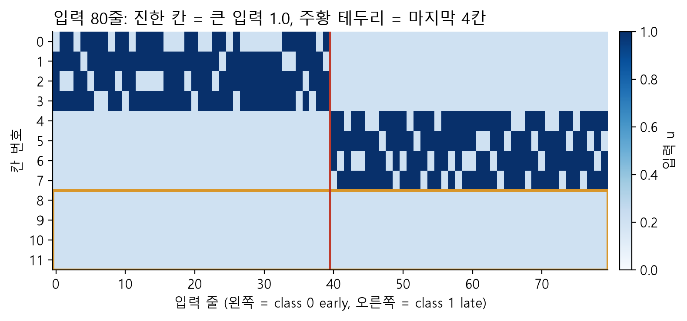
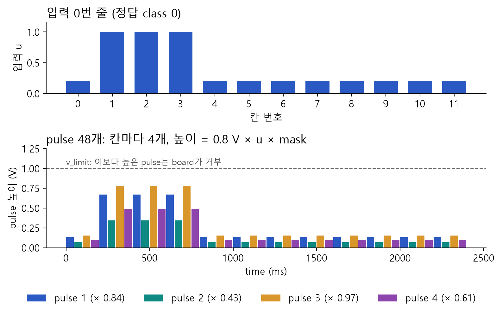
결과가 뜻하는 것. 입력 한 줄은 12칸 × mask 4개 = pulse 48개이고, 쉬는 2초를 더해 trial 하나에 4.4초입니다. 가장 큰 pulse가 0.78 V라서 v_limit(1.0 V) 안에 있습니다. 화면 아래의 config.h에는 설정 파일과 같은 숫자(L = 12, M = 4, MASK, THETA_US = 50000 …)가 들어 있습니다. board는 이 숫자로 그림 9와 똑같은 pulse를 만듭니다.
SHOW_TRIAL = 0을 SHOW_TRIAL = 3으로 바꾸고 ▷. 3번 줄은 class 1입니다. 그림 9가 어떻게 달라질까요?
큰 입력이 4–7칸 중 세 칸으로 옮겨 가서, 높은 pulse 묶음이 그림 가운데(약 800–1600 ms)에 나옵니다. 8–11칸(1600 ms 이후)은 class 0 줄과 똑같이 낮습니다. 마지막 4칸의 입력만 보면 두 class가 같다는 것이 이 과제의 핵심입니다.
실습 5. mock board로 trial 80개 모으기 (p3_5_collect.py)
PC가 입력을 한 줄씩 board에 보내고, board가 pulse 48개를 걸고 pulse 끝마다 전류(state)를 읽어 돌려줍니다. 이 실습은 그 주고받기와 저장을 mock board로 먼저 해 봅니다. 그림으로 "건 전압 → 읽은 전류"와 "두 class의 전류가 마지막 4칸에서도 다른가"를 봅니다.
mock board: B5_collect firmware가 하는 일(pulse 걸기, 전류·전압 읽기, 다섯 줄로 돌려주기)을 컴퓨터 안에서 흉내 내는 가짜 board. 안의 소자는 P2의 mock 소자와 같은 장난감 모형입니다. 진짜 소자 성능과는 상관없습니다.
state: pulse 끝에 읽은 전류(nA). trial 하나에 48개.
runs\…\b_dev01: 결과가 쌓이는 폴더. trial 하나가 끝날 때마다 저장하므로, 중간에 끊겨도 같은 파일을 다시 ▷ 하면 남은 trial부터 이어서 합니다. 책갈피와 같습니다.
할 일 mylabs에 새 파일 p3_5_collect.py → 붙여 넣기 → Ctrl+S → ▷. 실습 4를 먼저 돌려 task.npz가 있어야 합니다.
mylabs/p3_5_collect.py
# ============================================================
# P3 실습 5 · board로 소자 데이터 모으기 (처음엔 mock board)
#
# 전체 과정:
#
# 실습 4의 입력 80줄(task.npz)과 설정 파일 읽기
# ↓
# 입력 한 줄씩 board에 보내기: "B,번호,12,u1,…,u12"
# ↓
# board(B5_collect)가 2초 쉬고 → pulse 48개를 걸고 → pulse 끝마다 전류·전압을 읽어
# S·V·P·R·Q 다섯 줄로 돌려준다
# (MOCK = True면 컴퓨터 속 'mock board'가 같은 다섯 줄을 만든다)
# ↓
# trial 하나 끝날 때마다 runs/…/b_dev01 폴더에 저장 (끊겨도 이어서)
# ↓
# [그림 1] trial 하나: 건 전압과 읽은 전류 [그림 2] class별 평균 전류
#
# 진짜 측정: board에 B5_collect를 올리고 Serial Monitor를 닫은 뒤
# MOCK = False, PORT = 내 COM 번호, 처음엔 LIMIT = 10.
# ============================================================
import shutil
import sys
from pathlib import Path
import numpy as np
import matplotlib.pyplot as plt
CODE = Path(__file__).resolve().parent.parent # ion-projects-code 폴더
sys.path.insert(0, str(CODE / "python")) # 공용 코드 폴더를 찾을 수 있게
from common import load_json # 설정 파일 읽기
from measure_seq import check_inputs, pulse_plan, run_trials # 범위 검사, pulse 높이, trial마다 저장
from smu import MockSMU # 가짜 소자 (mock board 안에서 씀)
# ============================================================
# 0. 그림 설정 — 건드리지 않아도 됩니다
# ============================================================
plt.rcParams.update({
"font.family": "Malgun Gothic", "axes.unicode_minus": False, "font.size": 11,
"legend.frameon": False, "axes.spines.top": False, "axes.spines.right": False,
})
# ============================================================
# 1. 바꿔 볼 수 있는 설정값 ← 여기를 바꿔 보세요
# ============================================================
MOCK = True # True: mock board / False: 진짜 board (B5_collect)
PORT = "COM5" # 진짜 board의 COM 번호
LIMIT = None # None = 남은 trial 전부, 10 = 이번에는 10개만
SHOW_TRIAL = 0 # 그림 1에서 볼 trial 번호
# MOCK에 따라 정해지는 파일 위치 (실습 4와 같은 규칙)
CONFIG = "config_board_example.json" if MOCK else "config_board.json"
BASE = CODE / "runs" / ("p3_mock" if MOCK else "p3")
RUN_DIR = BASE / "b_dev01"
# ============================================================
# 2. 설정·입력 읽기
# ============================================================
cfg = load_json(CODE / "python" / CONFIG)
enc = cfg["encoding"]
task = np.load(BASE / "task.npz") # 실습 4가 만든 파일
U, y = task["U"], task["y"]
check_inputs(U, enc, cfg["instrument"]["v_limit_V"])
L, M = U.shape[1], len(enc["mask"])
NF = L * M # trial 하나의 state 수 = 48
per_trial_s = enc["rest_s"] + NF * enc["theta_s"] # 2 + 48 × 0.05 = 4.4초
theta_us = int(round(enc["theta_s"] * 1e6))
# ============================================================
# 3. mock board: B5_collect firmware가 하는 일을 컴퓨터 안에서 흉내
# ============================================================
#
# 진짜 board mock board
# DAC로 전압 걸기 MockSMU(가짜 소자)에 전압 걸기
# pulse 끝에 TIA·ADC로 전류 읽기 가짜 소자의 전류를 nA로
# A0−A1로 실제 소자 전압 읽기 건 전압 − 전류 × R_lim (R_lim에서 떨어지는 만큼)
# micros()로 pulse 시간 재기 가상 시계라 정확히 50 ms
#
# 가짜 소자(model "memory")는 전압을 받으면 전도도가 천천히 오르고 0 V에서
# τ = 0.5초로 돌아오는 '장난감'이다. 진짜 소자의 성능과는 상관없다.
# ============================================================
class MockBoard:
def __init__(self):
self.dev = MockSMU(model="memory", R=1e6, tau=0.5, compliance_A=1.0,
v_limit_V=cfg["instrument"]["v_limit_V"], read_dt=0.005)
self.dev.enable()
self.R_lim = cfg["instrument"]["R_lim_ohm"]
self.R_meas = cfg["instrument"]["R_meas_ohm"]
def measure_trial(self, n, u_row):
self.dev.reseed(n) # 같은 trial은 같은 잡음
self.dev.hold(0.0, enc["rest_s"]) # 0 V로 쉬기 (rest)
S, V, sat = [], [], 0
for v in pulse_plan(u_row, enc): # pulse 48개
last = self.dev.hold(v, enc["theta_s"])[-1] # pulse 끝의 읽기
i_A = last["I"]
S.append(i_A * 1e9) # 전류 (nA) = state
V.append(v - i_A * self.R_lim) # 실제 소자 전압
sat += abs(i_A * self.R_meas) > 1.5 # TIA 출력이 1.5 V를 넘으면 포화로 셈
P = np.full(NF, theta_us) # 명령 유지 시간 (µs)
return np.array(S), dict(I_nA=np.array(S), V_dev=np.array(V), period_us=P,
read_end_us=P.copy(), saturated=np.array([sat]))
# ============================================================
# 4. trial마다 보내고 받고 저장 (measure_seq.run_trials)
# ============================================================
#
# run_trials는 trial 하나가 끝날 때마다 checkpoint.npz를 새로 쓴다.
# 중간에 끊겨도 같은 파일을 다시 Run 하면 남은 trial부터 이어서 한다 (책갈피).
# mock은 매번 처음부터 (폴더를 지우고 시작).
# ============================================================
def short_log(msg):
"""trial 80줄을 다 찍지 않고 10개마다 한 줄"""
if msg.startswith("trial"):
k = int(msg.split("(")[1].split("/")[0])
if k % 10 and k != len(U):
return
print(msg)
extra = {"y": y, "groups": task["groups"]}
if MOCK:
if RUN_DIR.exists():
shutil.rmtree(RUN_DIR)
print(f"(MOCK) {len(U)} trials, each {per_trial_s:.1f} s on a real board (mock: no waiting)")
run_trials(cfg, U, str(RUN_DIR), MockBoard().measure_trial, NF, limit=LIMIT, log=short_log, extra=extra)
else:
import serial # pyserial
from board_collect import board_trial_fn # 진짜 board와 주고받는 규칙
todo = len(U) if LIMIT is None else LIMIT
print(f"{PORT}: up to {todo} trials x {per_trial_s:.1f} s = about {todo * per_trial_s / 60:.0f} min")
with serial.Serial(PORT, 115200, timeout=per_trial_s * 2 + 5) as ser:
ser.reset_input_buffer()
run_trials(cfg, U, str(RUN_DIR), board_trial_fn(ser, L, NF, per_trial_s), NF,
limit=LIMIT, log=short_log, extra=extra)
# ============================================================
# 5. 저장된 것 읽어 보기
# ============================================================
ck = np.load(RUN_DIR / "checkpoint.npz")
S, done = ck["S"], ck["done"]
if not done[SHOW_TRIAL]:
raise SystemExit(f"trial {SHOW_TRIAL}은 아직 안 쟀습니다.")
raw = np.load(RUN_DIR / "raw" / f"trial_{SHOW_TRIAL:05d}.npz")
cmd = np.array(pulse_plan(U[SHOW_TRIAL], enc))
end = slice(8 * M, L * M) # readout 칸 8–11 = pulse 32–47
print()
print(f"saved in : {RUN_DIR.relative_to(CODE).as_posix()} ({int(done.sum())}/{len(done)} trials)")
print(f"state range : {np.nanmin(S):.0f} to {np.nanmax(S):.0f} nA")
print(f"V row (trial {SHOW_TRIAL}) : largest gap command - device = {np.max(cmd - raw['V_dev']) * 1000:.1f} mV (R_lim drop)")
print(f"saturated reads : {int(sum(np.load(f)['saturated'][0] for f in (RUN_DIR / 'raw').glob('*.npz')))}")
for c in (0, 1):
rows = done & (y == c)
print(f"class {c}: mean state in readout steps 8-11 = {S[rows][:, end].mean():.1f} nA ({rows.sum()} trials)")
# ============================================================
# 6. 그림 1: trial 하나 — 건 전압과 읽은 전류
# ============================================================
k = np.arange(NF)
fig1, ax = plt.subplots(2, 1, figsize=(8, 5.2), sharex=True)
ax[0].step(k, cmd, where="mid", color="0.6", lw=1.5, label="명령 전압")
ax[0].plot(k, raw["V_dev"], ".", color="#2b59c3", ms=6, label="pulse 끝 실제 소자 전압 (V 줄)")
ax[0].set_ylabel("V")
ax[0].set_title(f"trial {SHOW_TRIAL} (class {y[SHOW_TRIAL]}): pulse 48개", loc="left")
ax[1].plot(k, raw["I_nA"], "o-", color="#0e8a83", ms=4, lw=1, label="pulse 끝 전류 = state (S 줄)")
for a in ax:
a.axvspan(8 * M - 0.5, L * M - 0.5, color="#d9962a", alpha=0.15, lw=0)
ax[1].text(8 * M, ax[1].get_ylim()[1], " readout 칸 8–11", va="top", fontsize=9.5, color="#a0661a")
ax[1].set_ylabel("nA")
ax[1].set_xlabel("pulse 번호 (칸 번호 × 4 + mask 번호)")
fig1.tight_layout(rect=(0, 0.08, 1, 1))
h0, l0 = ax[0].get_legend_handles_labels()
h1, l1 = ax[1].get_legend_handles_labels()
fig1.legend(h0 + h1, l0 + l1, loc="lower center", ncol=3, bbox_to_anchor=(0.5, 0.0), fontsize=9.5)
# ============================================================
# 7. 그림 2: class별 평균 state — 마지막 4칸에서도 벌어져 있나?
# ============================================================
fig2, ax2 = plt.subplots(1, 2, figsize=(8, 3.8), gridspec_kw={"width_ratios": [1.7, 1]})
colors = {0: "#2b59c3", 1: "#d9962a"}
for c in (0, 1):
rows = done & (y == c)
m, sd = S[rows].mean(0), S[rows].std(0)
for a in ax2: # 왼쪽 = 전체, 오른쪽 = readout 칸 크게
a.plot(k, m, color=colors[c], lw=1.6, marker="o" if a is ax2[1] else None, ms=4,
label=f"class {c} ({'early' if c == 0 else 'late'}) 평균")
a.fill_between(k, m - sd, m + sd, color=colors[c], alpha=0.2, lw=0)
ax2[0].axvspan(8 * M - 0.5, L * M - 0.5, color="#d9962a", alpha=0.12, lw=0)
ax2[0].set_xlabel("pulse 번호")
ax2[0].set_ylabel("state (nA)")
ax2[0].set_title("class별 평균 state (띠 = 흩어진 정도)", loc="left")
ax2[1].set_xlim(8 * M - 0.5, L * M - 0.5)
ax2[1].set_ylim(np.nanmin(S[:, end]) - 30, np.nanmax(S[:, end]) + 30)
ax2[1].set_xlabel("pulse 번호 (readout 칸만)")
ax2[1].set_title("readout 칸 크게", loc="left")
fig2.tight_layout(rect=(0, 0.08, 1, 1))
fig2.legend(*ax2[0].get_legend_handles_labels(), loc="lower center", ncol=2, bbox_to_anchor=(0.5, 0.0))
plt.show()코드에서 볼 곳.
- 3번 상자의 표: 진짜 board와 mock board가 같은 일을 어떻게 하는지 나란히 적었습니다. 실제 소자 전압은 "건 전압 − 전류 × R_lim"입니다(R_lim은 측정 회로의 전류 상한 저항).
- 4번 상자:
MOCK에 따라 mock board 또는 진짜 board(공용 코드board_trial_fn)를 고르고,run_trials가 trial마다 저장합니다. 두 경우 저장 형식이 같아서 실습 6·7은 어느 쪽 결과든 똑같이 읽습니다. - 5번 상자: 저장된 파일을 다시 읽어 요약합니다.
▷ 실행하면 (그림 창이 두 개 뜹니다):
PS C:\Users\내이름\Desktop\ion-projects-code> & python mylabs/p3_5_collect.py
(MOCK) 80 trials, each 4.4 s on a real board (mock: no waiting)
trial 9 saved (10/80)
trial 19 saved (20/80)
trial 29 saved (30/80)
trial 39 saved (40/80)
trial 49 saved (50/80)
trial 59 saved (60/80)
trial 69 saved (70/80)
trial 79 saved (80/80)
saved in : runs/p3_mock/b_dev01 (80/80 trials)
state range : -136 to 1579 nA
V row (trial 0) : largest gap command - device = 51.6 mV (R_lim drop)
saturated reads : 0
class 0: mean state in readout steps 8-11 = 127.3 nA (40 trials)
class 1: mean state in readout steps 8-11 = 121.2 nA (40 trials)
PS C:\Users\내이름\Desktop\ion-projects-code>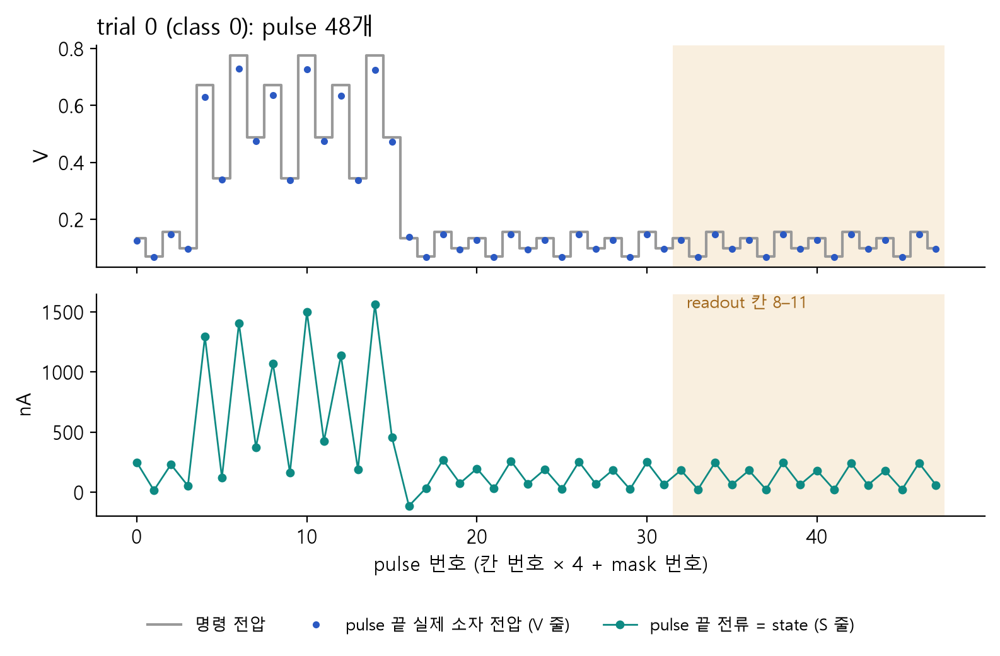
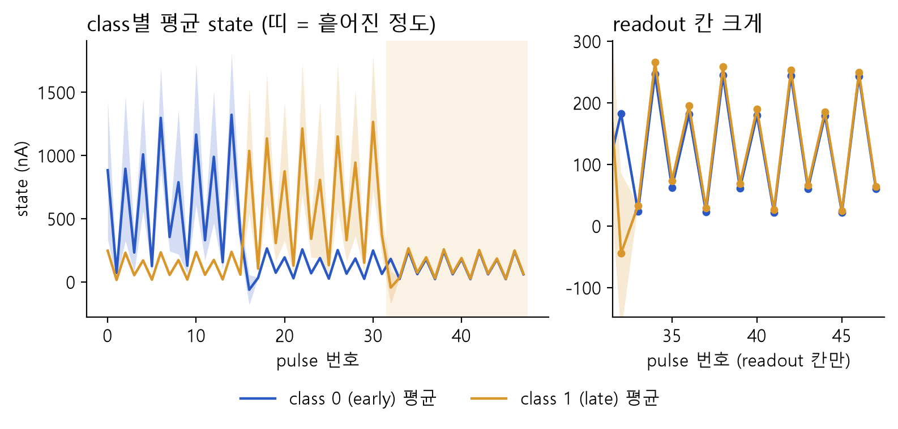
결과가 뜻하는 것. 실제 소자 전압(V 줄)은 명령보다 최대 52 mV 낮습니다. 전류가 R_lim을 지나며 떨어진 만큼이고, 그래서 board는 이 값을 따로 재서 기록합니다. readout 칸에서 두 class의 평균은 첫 pulse(32번)에서만 크게 다르고(class 0 약 +180 nA, class 1 약 −45 nA) 그 뒤로는 거의 겹칩니다. class 1은 바로 앞 칸(7)에 큰 입력이 있었고, 큰 전압에서 작은 전압으로 내려오는 순간의 흔적이 32번 pulse에 남은 것입니다. 이 mock 소자의 흔적은 짧습니다. 그래도 맞힐 수 있는지는 실습 6에서 봅니다.
board가 돌려주는 다섯 줄. board는 측정이 다 끝난 뒤에 결과를 한꺼번에 보냅니다(보내는 시간이 pulse 타이밍에 섞이지 않게). trial마다 다섯 줄이 오고, 실습 5는 이것을 raw\trial_…npz에 저장합니다.
| 줄 | 뜻 | 단위 |
|---|---|---|
| S | pulse 끝 전류 (state) | nA |
| V | pulse 끝에 잰 실제 소자 전압 (A0 − A1) | V |
| P | 그 전압 명령이 유지된 시간 | µs |
| R | 명령 시작 → 전류·전압 읽기 끝 | µs |
| Q | 측정 범위를 벗어난(포화) 읽기 수 | 개 |
P는 "명령"이 유지된 시간이지 "소자에 목표 전압이 걸린 시간"이 아닙니다. 소자에 실제로 걸린 전압은 V 줄로 봅니다. mock board는 가상 시계라 P가 정확히 50,000 µs(50 ms)이고, 진짜 board는 micros()로 잰 값이라 조금 다를 수 있습니다 [실물 미검증].
진짜 board로 모으기
설정 파일 만들기 (config_board.json)
할 일 (5–10분) VS Code에서 합니다.
config_board.json (설정 파일): 소자 이름, 저항값, 전압 상한, pulse 길이 같은 실험 조건을 적은 글 파일. 요리 레시피 카드처럼, 같은 카드를 쓰면 언제 해도 같은 조건으로 잽니다.
- 왼쪽 EXPLORER의
python폴더에서config_board_example.json에 마우스 오른쪽 → Copy →python폴더에 마우스 오른쪽 → Paste.config_board_example copy.json이 생깁니다. - 그 파일에 마우스 오른쪽 → Rename →
config_board.json→ Enter. config_board.json을 클릭해 열고, 아래 before/after처럼 바꿀 것 줄의 값만 고친 뒤 Ctrl+S.
바꾸기 전 (instrument와 device 부분):
"instrument": {
"addr": "BOARD",
"board": "NU40 DK + MCP4725 + ADS1115 + MCP6002 TIA",
"v_limit_V": 1.0,
"R_meas_ohm": 150000,
"R_lim_ohm": 33000
},
"device": {
"id": "dev01",
"polarity": "+V = EMIMSPA 쪽 ITO가 높은 전위",
"env": "측정 때 온도·습도"
},바꾼 뒤 (예: R_f 149.2 kΩ, R_lim 32.87 kΩ, 23 °C·45 %):
"instrument": {
"addr": "BOARD",
"board": "NU40 DK + MCP4725 + ADS1115 + MCP6002 TIA",
"v_limit_V": 1.0,
"R_meas_ohm": 149200,
"R_lim_ohm": 32870
},
"device": {
"id": "dev01",
"polarity": "+V = EMIMSPA 쪽 ITO가 높은 전위",
"env": "23 °C, 습도 45 %"
},device.id·env(바꿀 것): 내 소자 이름, 측정 때 온도·습도.instrument.R_meas_ohm·R_lim_ohm(바꿀 것): 실제로 꽂은 저항값. R_meas_ohm은 device_io.h의 R_MEAS와 같은 값으로 적습니다.v_limit_V(바꿀 것): P2.1에서 정한 범위 안. 단, 가장 큰 pulse(0.78 V)보다 작으면 실습 4가 멈춥니다.encoding(입력을 전압으로 바꾸는 규칙)은 처음엔 그대로 둡니다.
쉼표(,)·따옴표(")·중괄호를 지우면 파일을 못 읽습니다. 숫자와 따옴표 안의 글만 바꿉니다.
실습 4를 MOCK = False로
할 일 p3_4_prepare.py의 1번 상자에서 MOCK = False → Ctrl+S → ▷.
이번에는 내 설정 파일을 읽어 runs\p3\task.npz와 firmware\B5_collect\config.h를 씁니다. TERMINAL 첫 줄이 config : config_board.json, 끝에서 saved: firmware/B5_collect/config.h이면 됩니다. 입력은 seed가 고정이라 mock 때와 같습니다.
FileNotFoundError: … config_board.json → 파일 이름이 다르거나 python 폴더에 없습니다. json.decoder.JSONDecodeError → 쉼표·따옴표가 지워졌습니다. 예시 파일을 다시 복사해 고칩니다. ValueError: 인코딩이 만들 수 있는 전압 … → v_limit_V가 0.78 V보다 작습니다.
B5_collect 올리고 READY 확인, Serial Monitor 닫기
할 일
- J1을 뺍니다. USB를 꽂습니다.
- Arduino IDE File → Open… → 바탕 화면 →
ion-projects-code→firmware→B5_collect→B5_collect.ino→ 열기. 탭에B5_collect.ino,config.h,device_io.h가 보입니다(config.h 탭의 L·M이 12·4인지 봄). - board·port 확인 → Upload(→) → Done uploading. 확인.
- Serial Monitor(115200)를 엽니다. 안 보이면 리셋 버튼 한 번.
READY L=12 M=4 VREF=1.6482 ADC_us=1210 dev01READY L=12 M=4 …가 보이면 Serial Monitor 탭의 ×를 눌러 닫습니다.- 소자를 소자 자리(① 45행 ↔︎ ② 49행, 부품만 바꾸면 되나 먼저 확인)에 꽂고, J1을 꽂습니다.
E,-1,io_init → 측정 회로 검증의 B4_test 카드와 같은 원인입니다.
실습 5를 진짜 board로: 먼저 10개, 그다음 전부
할 일 p3_5_collect.py의 1번 상자를 이렇게 고치고 Ctrl+S → ▷. trial 10개에 약 45초 걸립니다.
MOCK = False # True: mock board / False: 진짜 board (B5_collect)
PORT = "COM5" # 진짜 board의 COM 번호
LIMIT = 10 # None = 남은 trial 전부, 10 = 이번에는 10개만PS C:\Users\내이름\Desktop\ion-projects-code> & python mylabs/p3_5_collect.py
COM5: up to 10 trials x 4.4 s = about 1 min
! trial 1: 2 reads out of range -> check R_f and voltage range
trial 9 saved (10/80)
saved in : runs/p3/b_dev01 (10/80 trials)
...! 줄은 그 trial에 측정 범위를 벗어난(포화) 읽기가 있었다는 경고입니다. 자주 나오면 R_f나 전압 범위를 줄입니다. 문제가 없으면 LIMIT = None으로 바꾸고 다시 ▷. 남은 70개를 이어서 잽니다(약 5–6분). 첫 줄에 resume: 10/80 trials already done이 나오고 끝에 trial 79 saved (80/80)이 나오면 끝입니다. 그림 창 두 개는 그림 10·11과 같은 모양으로 내 소자의 값이 나옵니다.
ion-projects-code\
runs\
p3\
task.npz
b_dev01\
manifest.json 측정 조건 기록
checkpoint.npz trial마다의 state (실습 6이 읽음)
raw\
trial_00000.npz trial 하나의 S·V·P·R·Q 기록
...board rejected the input -> E,…→ board가 입력 줄의 길이·형식·범위를 검사해 이상하면 소자를 구동하지 않고E줄을 보냅니다.config.h가 실습 4(MOCK = False)로 만든 것인지 봅니다.no answer from board (timeout)→ Serial Monitor가 열려 있지 않은지, COM 번호를 봅니다.could not open port 'COM5': PermissionError(13, …)→ Serial Monitor가 열려 있습니다. 닫고 다시 ▷.기존 측정(…b_dev01)과 조건이 다릅니다 …→ 설정을 바꾼 뒤 같은 폴더에 이어 쓰려 한 것입니다. 섞이지 않게 1번 상자 아래쪽의RUN_DIR을BASE / "b_dev02"처럼 새 이름으로 바꿉니다(실습 6·7도 같이).
한계 (실물 미검증): ADC 통신이 끊기면 library가 변환 완료를 기다리며 멈출 수 있고, 그동안 DAC는 마지막 전압을 유지합니다. board가 응답하지 않으면 J1을 먼저 빼고 리셋합니다.
다음 단계 조건. runs\p3\b_dev01에 trial 80개가 저장되면(마지막 줄 (80/80)) P3.6으로 갑니다. board가 아직 없으면 mock 결과(runs\p3_mock)로 P3.6의 실습 6·7을 먼저 해 봅니다.
P3.6. PC 없이 판단하고 알리기
운전 연수를 떠올려 보세요. 처음에는 옆자리 강사(PC)가 "지금 브레이크" 하고 판단해 줍니다. 연수가 끝나면 강사가 내리고, 배운 규칙을 머릿속에 넣은 채 혼자 운전합니다. 이 단계도 같습니다. PC에서 학습한 판단 규칙(weight)을 board에 넣고, board가 PC 없이 시험 입력을 재생 → 측정 → 판단해 LED·부저·OLED·휴대폰으로 알리게 합니다.
feature: 판단에 쓰는 숫자 하나하나. 여기서는 pulse 끝에 잰 전류(state)입니다.
weight: 학습이 끝난 "판단 식"의 숫자들. feature마다 weight를 곱해 모두 더하면 점수가 나옵니다. 예: feature 2개가 (10, 4), weight가 (0.3, −0.5)면 점수 = 10 × 0.3 + 4 × (−0.5) = 1.0.
class: 판단의 답 번호. 여기서는 0 또는 1. 점수가 0보다 크면 class 1, 아니면 class 0입니다.
| 실습·할 일 | 하는 일 | 결과로 보는 것 |
|---|---|---|
| 실습 6 | 모은 state로 판단 식 학습 | confusion matrix, 시험 trial마다의 점수 |
| 실습 7 | board용 헤더 파일 쓰기 + 자기 점검 미리 해 보기 | Python 점수 = board식 점수, weight 막대 |
| 진짜 board | 실습 6·7을 MOCK = False → B6_standalone 올리기 |
자기 점검 R,… 줄, LED·부저·OLED |
실습 6. 판단 식 학습 (p3_6_readout.py)
실습 5에서 모은 state 중 마지막 4칸의 16개(4칸 × mask 4개)만 보고 class 0인지 1인지 맞히는 판단 식을 학습합니다. P1.2의 "마지막 4칸만 보고 맞히기"와 같은 질문을 board 측정 데이터에 묻는 것입니다. 연습 56개로 weight를 정하고, 한 번도 안 본 시험 24개로 채점합니다.
balanced accuracy: class 0 문제와 class 1 문제를 따로 채점해서 평균낸 정확도. 한쪽 답만 계속 찍는 꼼수는 1.0과 0.0의 평균 0.5가 되어 들통납니다. chance는 0.50.
confusion matrix: 정답(줄)과 판단(칸)의 개수 표. 대각선(왼쪽 위·오른쪽 아래)이 맞힌 수입니다.
label shuffle: 정답지(label)를 일부러 무작위로 섞은 뒤 똑같이 학습·시험하는 점검. 정답이 엉망이니 0.50 근처가 나와야 정상입니다. 20번 섞어 평균과 흩어진 정도(±)를 냅니다.
C: 학습할 때 weight를 얼마나 크게 허용할지 정하는 손잡이. 프로그램이 연습 데이터 안에서 여러 값을 시험해 보고 고릅니다.
할 일 mylabs에 새 파일 p3_6_readout.py → 붙여 넣기 → Ctrl+S → ▷. 약 20초 걸립니다(label shuffle을 20번 하므로).
mylabs/p3_6_readout.py
# ============================================================
# P3 실습 6 · 모은 state로 판단 식(readout) 학습하기
#
# 전체 과정:
#
# 실습 5의 state (trial 80개 × pulse 48개)
# ↓
# 마지막 4칸(8–11)의 16개만 feature로 꺼내기 (END_ONLY = True)
# ↓
# 연습 56개로 weight 정하기:
# 칸마다 평균 0·크기 1로 맞추고(standardization)
# 점수 = Σ weight × feature + bias, 점수 > 0 이면 class 1
# ↓
# 시험 24개로 채점: balanced accuracy, confusion matrix
# 정답지를 섞어 같은 일을 20번 (label shuffle 점검)
# ↓
# b_model.joblib로 저장 → 실습 7이 board용 파일로 바꾼다
# ↓
# [그림] confusion matrix + 시험 trial마다의 점수
# ============================================================
import sys
from pathlib import Path
import numpy as np
import matplotlib.pyplot as plt
CODE = Path(__file__).resolve().parent.parent # ion-projects-code 폴더
sys.path.insert(0, str(CODE / "python")) # 공용 코드 폴더를 찾을 수 있게
import joblib # 학습 결과를 파일로 저장
import readout # 학습·채점·label shuffle (P2와 같은 공용 코드)
# ============================================================
# 0. 그림 설정 — 건드리지 않아도 됩니다
# ============================================================
plt.rcParams.update({
"font.family": "Malgun Gothic", "axes.unicode_minus": False, "font.size": 11,
"legend.frameon": False, "axes.spines.top": False, "axes.spines.right": False,
})
# ============================================================
# 1. 바꿔 볼 수 있는 설정값 ← 여기를 바꿔 보세요
# ============================================================
MOCK = True # True: mock board로 모은 것 / False: 진짜 board로 모은 것
END_ONLY = True # True: 마지막 4칸 feature만 / False: 48개 전부
EXTRA_NOISE_NA = 0 # 측정이 이만큼(nA) 더 흔들렸다면? 0 = 그대로
SEED = 0
BASE = CODE / "runs" / ("p3_mock" if MOCK else "p3")
RUN_DIR = BASE / "b_dev01"
MODEL_PATH = BASE / "b_model.joblib"
# ============================================================
# 2. state와 정답 읽기
# ============================================================
ck = np.load(RUN_DIR / "checkpoint.npz")
task = np.load(BASE / "task.npz")
F, y = ck["S"].copy(), task["y"]
done = ck["done"]
if EXTRA_NOISE_NA:
F += np.random.default_rng(SEED).normal(0, EXTRA_NOISE_NA, F.shape)
# end_cols = 마지막 4칸의 열 번호: 칸 8의 pulse 4개 → 32, 33, 34, 35 … 칸 11 → 44–47
cols = task["end_cols"] if END_ONLY else None
if cols is not None:
F = F[:, cols]
# 아직 안 잰 trial은 빼고 연습·시험으로 나눈다 (나누기는 실습 4에서 정해 둠)
tr = [i for i in task["train_idx"] if done[i]]
te = [i for i in task["test_idx"] if done[i]]
print(f"train {len(tr)} trials, test {len(te)} trials (skipped, not measured: {int((~done).sum())})")
print(f"features per trial : {F.shape[1]} ({'last 4 steps x 4 mask' if END_ONLY else 'all 12 steps x 4 mask'})")
# ============================================================
# 3. 학습 (readout.fit_select)
# ============================================================
#
# C = weight를 얼마나 크게 허용할지 (작을수록 조심스러운 식).
# 연습 데이터 안에서 다시 5조각으로 나눠 C 13가지를 시험해 보고 가장 좋은 것을 고른다.
# 시험 데이터는 이 고르기에 쓰지 않는다 (시험 문제를 미리 보면 안 되니까).
# ============================================================
model, search = readout.fit_select(F[tr], y[tr])
# ============================================================
# 4. 시험 채점과 점검
# ============================================================
res = readout.evaluate(model, F[te], y[te])
res["chosen_C"] = float(search.best_params_["lr__C"])
res["label_shuffle_bal_acc"], res["label_shuffle_sd"] = readout.label_shuffle_check(F[tr], y[tr], None, F[te], y[te])
print(f"balanced accuracy {res['balanced_accuracy']:.2f} (chance = 0.50)")
print(f"confusion matrix {res['confusion']} (row = true class, column = predicted)")
print(f"label shuffle {res['label_shuffle_bal_acc']:.2f} +/- {res['label_shuffle_sd']:.2f} (20 shuffles; should be near chance)")
print(f"chosen C {res['chosen_C']:.3g}")
# ============================================================
# 5. 저장 (실습 7의 export가 이 파일을 읽는다)
# ============================================================
if EXTRA_NOISE_NA:
# 잡음을 일부러 더한 '만약에' 실행은 저장하지 않는다 (실습 7이 엉뚱한 식을 읽지 않게)
print("not saved (EXTRA_NOISE_NA is not 0: what-if run only)")
else:
col_text = ",".join(map(str, cols)) if cols is not None else None
joblib.dump(dict(model=model, cols=col_text, result=res), MODEL_PATH)
print(f"saved: {MODEL_PATH.relative_to(CODE).as_posix()}")
# ============================================================
# 6. 그림: confusion matrix + 시험 trial마다 점수
# ============================================================
score = model.decision_function(F[te]) # 점수 > 0 이면 class 1
fig, ax = plt.subplots(1, 2, figsize=(8, 3.8), gridspec_kw={"width_ratios": [1, 1.7]})
cm = np.array(res["confusion"])
ax[0].imshow(cm, cmap="Blues", vmin=0)
for i in range(2):
for j in range(2):
ax[0].text(j, i, cm[i, j], ha="center", va="center", fontsize=15,
color="white" if cm[i, j] > cm.max() / 2 else "#0f1b33")
ax[0].set_xticks([0, 1], ["0", "1"])
ax[0].set_yticks([0, 1], ["0", "1"])
ax[0].set_xlabel("판단한 class")
ax[0].set_ylabel("정답 class")
ax[0].set_title("confusion matrix", loc="left")
for s in ("top", "right"):
ax[0].spines[s].set_visible(True)
yte = y[te]
colors = {0: "#2b59c3", 1: "#d9962a"}
for c in (0, 1):
idx = np.where(yte == c)[0]
ax[1].plot(idx, score[idx], "o", color=colors[c], ms=6, label=f"정답 class {c}")
ax[1].axhline(0, color="#c0392b", ls="--", lw=1.2, label="점수 0 (위 = class 1)")
ax[1].set_xlabel("시험 trial 순서")
ax[1].set_ylabel("점수")
ax[1].set_title(f"시험 {len(te)}개의 점수: balanced accuracy {res['balanced_accuracy']:.2f}", loc="left")
fig.tight_layout(rect=(0, 0.08, 1, 1))
fig.legend(*ax[1].get_legend_handles_labels(), loc="lower center", ncol=3, bbox_to_anchor=(0.5, 0.0))
plt.show()코드에서 볼 곳.
- 2번 상자의
end_cols: 마지막 4칸의 열 번호(32–47)입니다.END_ONLY = False면 48개를 다 씁니다. - 3번 상자: 공용 코드
readout.fit_select가 연습 데이터만으로 C를 고르고 weight를 정합니다. 시험 데이터는 이때 보지 않습니다. - 5번 상자: 학습 결과를
b_model.joblib로 저장합니다. 실습 7이 이 파일을 읽습니다.
▷ 실행하면:
PS C:\Users\내이름\Desktop\ion-projects-code> & python mylabs/p3_6_readout.py
train 56 trials, test 24 trials (skipped, not measured: 0)
features per trial : 16 (last 4 steps x 4 mask)
balanced accuracy 1.00 (chance = 0.50)
confusion matrix [[10, 0], [0, 14]] (row = true class, column = predicted)
label shuffle 0.59 +/- 0.30 (20 shuffles; should be near chance)
chosen C 0.00316
saved: runs/p3_mock/b_model.joblib
PS C:\Users\내이름\Desktop\ion-projects-code>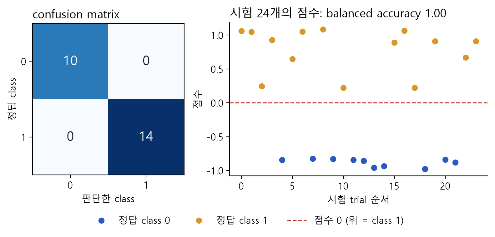
결과가 뜻하는 것.
| 화면 글자 | 뜻 | 이 줄의 값 |
|---|---|---|
balanced accuracy |
두 class를 따로 채점한 평균 | 1.00 = 시험 24개를 다 맞힘 |
confusion matrix |
정답(줄)과 판단(칸)의 개수 | [[10, 0], [0, 14]]: class 0 10개, class 1 14개 모두 맞힘 |
label shuffle |
정답지를 섞고 같은 일을 20번 | 0.59 ± 0.30: ± 범위 안에 0.50이 들어가 정상 |
chosen C |
고른 손잡이 값 | 지금 몰라도 됨 |
mock 소자는 readout 첫 pulse(32번)에 바로 앞 칸의 흔적을 크게 남기고(그림 11 오른쪽), 측정 잡음이 거의 없어서 다 맞힙니다. label shuffle의 ±가 큰 것은 시험이 24개뿐이라, 섞은 정답이 우연히 진짜 정답과 많이 겹치는 경우가 자주 있기 때문입니다.
EXTRA_NOISE_NA = 0을 EXTRA_NOISE_NA = 50으로 바꾸고 ▷. 측정이 50 nA쯤 더 흔들렸다면 어떻게 될까요?
balanced accuracy가 1.00 → 0.75로 떨어집니다. 32번 pulse의 차이(약 225 nA)도 trial마다 흔들리는 잡음에 일부 묻히기 때문입니다. 진짜 board의 잡음이 얼마인지가 그래서 중요합니다.
PS C:\Users\내이름\Desktop\ion-projects-code> & python mylabs/p3_6_readout.py
train 56 trials, test 24 trials (skipped, not measured: 0)
features per trial : 16 (last 4 steps x 4 mask)
balanced accuracy 0.75 (chance = 0.50)
confusion matrix [[10, 0], [7, 7]] (row = true class, column = predicted)
label shuffle 0.48 +/- 0.08 (20 shuffles; should be near chance)
chosen C 0.1
not saved (EXTRA_NOISE_NA is not 0: what-if run only)
PS C:\Users\내이름\Desktop\ion-projects-code>끝 줄이 not saved …인 것처럼, 잡음을 더한 '만약에' 실행은 b_model.joblib에 저장하지 않습니다. 그래서 실습 7에는 영향이 없습니다. 확인했으면 0으로 돌려놓습니다.
질문. label shuffle이 0.50 근처가 아니라 0.85처럼 높게, ±도 작게 나오면 무엇을 뜻할까요?
계산 어딘가에서 정답이 새고 있다는 경고입니다. 정답지를 엉망으로 섞었는데도 잘 맞힌다면, 모형이 소자 신호가 아니라 다른 단서(예: 측정 순서, 시간이 지나며 소자 값이 조금씩 변한 것)로 답을 외웠을 수 있습니다. 이때는 balanced accuracy가 높아도 믿지 말고, 그 사실을 기록합니다.
실습 7. board용 파일 내보내기와 자기 점검 (p3_7_export.py)
board는 Python을 돌릴 수 없습니다. 그래서 판단 식을 숫자 표(헤더 파일 네 개)로 바꿔 board 코드와 함께 올립니다. 이 실습은 그 파일을 쓰고, board가 켜질 때 하는 자기 점검(같은 feature를 넣으면 board도 Python과 같은 점수를 내는가)을 PC에서 먼저 해 봅니다.
헤더 파일 (.h): board 코드가 읽는 작은 글 파일. weight·설정·시험 입력을 숫자로 적어 sketch와 함께 board에 올립니다. 시험 볼 때 들고 가는 요약 쪽지와 같습니다.
self-check (자기 점검): board가 켜질 때, 미리 저장해 둔 feature 5개로 점수를 계산해 Python이 같은 feature로 낸 점수와 비교하는 것. 같은 문제를 계산기 두 대로 풀어 답을 맞춰 보는 것과 같습니다.
float32: board가 쓰는 소수 형식. Python 기본(float64)보다 자릿수가 적어서 점수가 아주 조금(0.000001 정도) 다를 수 있습니다.
할 일 mylabs에 새 파일 p3_7_export.py → 붙여 넣기 → Ctrl+S → ▷.
mylabs/p3_7_export.py
# ============================================================
# P3 실습 7 · board가 혼자 판단하도록 파일 내보내기 + 자기 점검 미리 해 보기
#
# 전체 과정:
#
# 실습 6의 판단 식(b_model.joblib) + 실습 5의 측정 조건·state
# ↓
# board가 읽는 헤더 파일 네 개 쓰기 (export_mcu.py)
# config.h pulse 높이·길이·mask (측정 때와 같게)
# weights.h 표준화 값 MU·SD, weight W, bias
# ref_vectors.h 저장된 feature 5개와 Python이 낸 점수 (자기 점검용)
# inputs_test.h board가 재생할 시험 입력 24개와 정답
# ↓
# board가 켜질 때 하는 자기 점검을 PC에서 먼저 해 보기:
# 헤더 파일의 숫자만으로, board와 같은 순서·같은 float32로 점수 계산
# → Python 점수와 같은가?
# ↓
# [그림] Python 점수 vs board식 점수, weight가 큰 pulse
# ============================================================
import sys
from pathlib import Path
import numpy as np
import matplotlib.pyplot as plt
CODE = Path(__file__).resolve().parent.parent # ion-projects-code 폴더
sys.path.insert(0, str(CODE / "python")) # 공용 코드 폴더를 찾을 수 있게
import joblib
import export_mcu # 헤더 쓰기·다시 읽기·board식 점수 계산
from common import load_json
# ============================================================
# 0. 그림 설정 — 건드리지 않아도 됩니다
# ============================================================
plt.rcParams.update({
"font.family": "Malgun Gothic", "axes.unicode_minus": False, "font.size": 11,
"legend.frameon": False, "axes.spines.top": False, "axes.spines.right": False,
})
# ============================================================
# 1. 바꿔 볼 수 있는 설정값 ← 여기를 바꿔 보세요
# ============================================================
MOCK = True # True: mock 결과로 연습 / False: 진짜 측정 결과 → firmware/B6_standalone에 씀
CONFIG = "config_board_example.json" if MOCK else "config_board.json"
BASE = CODE / "runs" / ("p3_mock" if MOCK else "p3")
RUN_DIR = BASE / "b_dev01"
MODEL_PATH = BASE / "b_model.joblib"
OUT_DIR = BASE / "B6_standalone" if MOCK else CODE / "firmware" / "B6_standalone"
# ============================================================
# 2. 읽기: 판단 식, 측정 조건(manifest), state, 입력
# ============================================================
pack = joblib.load(MODEL_PATH)
model = pack["model"]
cols = None if not pack["cols"] else [int(c) for c in pack["cols"].split(",")] # 쓴 feature 열 번호
manifest = load_json(RUN_DIR / "manifest.json") # 측정 때의 pulse 높이·mask 등
v_limit = load_json(CODE / "python" / CONFIG)["instrument"]["v_limit_V"]
ck = np.load(RUN_DIR / "checkpoint.npz")
F = ck["S"][ck["done"]]
if cols is not None:
F = F[:, cols]
task = np.load(BASE / "task.npz")
# ============================================================
# 3. 헤더 파일 네 개 쓰기
# ============================================================
#
# 네 파일은 '같은 학습'에서 함께 나와야 한다. 하나만 바꾸면 자기 점검이 FAIL.
# ============================================================
info = export_mcu.export(model, manifest, F, str(OUT_DIR), v_limit, cols=cols)
te = task["test_idx"]
export_mcu.export_inputs(task["U"][te], task["y"][te], str(OUT_DIR))
print(f"L = {info['L']}, M = {info['M']}, features NF = {info['NF']}, scores NC = {info['NC']}")
print(f"written to {OUT_DIR.relative_to(CODE).as_posix()}/")
for name in ("config.h", "weights.h", "ref_vectors.h", "inputs_test.h"):
print(f" {name:<14} {(OUT_DIR / name).stat().st_size:>6} bytes")
# ============================================================
# 4. 자기 점검을 PC에서: 헤더 숫자만으로 board처럼 계산
# ============================================================
#
# board 계산 (B6_standalone의 scores 함수와 같은 순서):
# z = (feature − MU) / SD ← 표준화
# 점수 = BIAS + Σ W × z ← float32 (board의 float)
# Python 계산: model.decision_function (float64)
# 두 점수의 차이가 상대 0.001보다 작으면 board는 FAIL을 찍지 않는다.
# ============================================================
h = export_mcu.read_header_arrays(OUT_DIR / "weights.h")
h.update(export_mcu.read_header_arrays(OUT_DIR / "ref_vectors.h"))
XREF = h["XREF"].reshape(-1, info["NF"])
SREF = h["SREF"]
print()
print("self-check, as the board prints it: R,row,score#,board,python")
fails = 0
for r, x in enumerate(XREF):
board = float(export_mcu.mcu_score(x, h)[0])
python = float(SREF[r])
bad = abs(board - python) > 1e-3 * (1 + abs(python))
fails += bad
print(f"R,{r},0,{board:.6f},{python:.6f}{',FAIL' if bad else ''}")
board_all = np.array([export_mcu.mcu_score(x, h)[0] for x in F])
python_all = model.decision_function(F)
print(f"\nall {len(F)} stored trials: largest |board - python| = {np.max(np.abs(board_all - python_all)):.1e}")
print("self-check:", "FAIL" if fails else "OK (no FAIL)")
# ============================================================
# 5. 그림: 점수 비교 + weight
# ============================================================
fig, ax = plt.subplots(1, 2, figsize=(8, 3.8), gridspec_kw={"width_ratios": [1, 1.5]})
lim = np.abs(python_all).max() * 1.1
ax[0].plot([-lim, lim], [-lim, lim], color="0.75", lw=1)
ax[0].plot(python_all, board_all, "o", color="#2b59c3", ms=4, alpha=0.7)
ax[0].plot(SREF, [export_mcu.mcu_score(x, h)[0] for x in XREF], "s", color="#c0392b", ms=7,
mfc="none", mew=1.5, label="자기 점검 5개")
ax[0].set_xlabel("Python 점수")
ax[0].set_ylabel("board식 점수 (float32)")
ax[0].set_title("두 계산이 한 줄 위에", loc="left")
ax[0].legend(loc="upper left", fontsize=9.5)
W = h["W"]
labels = [f"{c // info['M']}-{c % info['M'] + 1}" for c in (cols if cols is not None else range(info["NF"]))]
ax[1].bar(range(len(W)), W, color=np.where(W > 0, "#d9962a", "#2b59c3"))
ax[1].axhline(0, color="0.5", lw=0.8)
ax[1].set_xticks(range(len(W)), labels, rotation=90, fontsize=9)
ax[1].set_xlabel("feature (칸-pulse)")
ax[1].set_ylabel("weight")
ax[1].set_title("weight: 주황 + 는 class 1 쪽으로", loc="left")
fig.tight_layout()
plt.show()코드에서 볼 곳.
- 1번 상자의
OUT_DIR: mock이면 연습 폴더(runs\p3_mock\B6_standalone)에, 진짜면firmware\B6_standalone에 씁니다. - 3번 상자: 공용 코드
export_mcu.export가config.h·weights.h·ref_vectors.h를,export_inputs가inputs_test.h(시험 입력 24개와 정답)를 씁니다. - 4번 상자: 방금 쓴 헤더 파일의 숫자만 다시 읽어, board와 같은 순서(표준화 → weight 곱해 더하기)와 float32로 점수를 냅니다. 출력의
R,…줄은 board가 Serial Monitor에 찍을 줄과 같은 형식입니다.
▷ 실행하면:
PS C:\Users\내이름\Desktop\ion-projects-code> & python mylabs/p3_7_export.py
L = 12, M = 4, features NF = 16, scores NC = 1
written to runs/p3_mock/B6_standalone/
config.h 363 bytes
weights.h 1029 bytes
ref_vectors.h 1230 bytes
inputs_test.h 1671 bytes
self-check, as the board prints it: R,row,score#,board,python
R,0,0,-0.815696,-0.815696
R,1,0,-0.913797,-0.913797
R,2,0,-0.909171,-0.909171
R,3,0,0.229266,0.229266
R,4,0,0.656186,0.656186
all 80 stored trials: largest |board - python| = 6.8e-07
self-check: OK (no FAIL)
PS C:\Users\내이름\Desktop\ion-projects-code>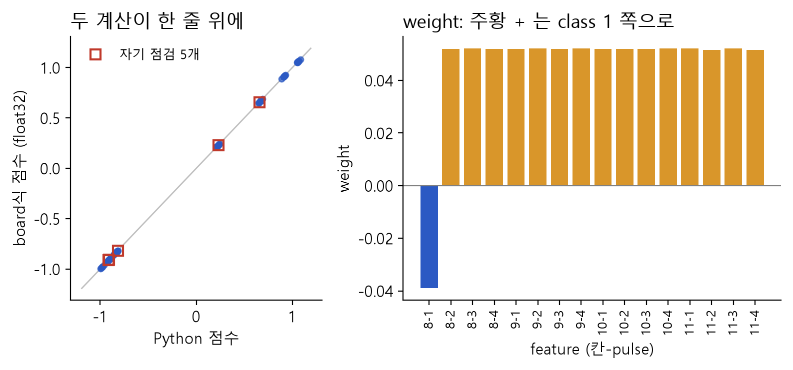
8-1 = 칸 8의 1번째 pulse(= pulse 32). 주황(+)은 class 1 쪽, 파랑(−)은 class 0 쪽으로 점수를 미는 feature입니다.
결과가 뜻하는 것. R,… 다섯 줄에서 board식 점수와 Python 점수가 소수 여섯째 자리까지 같고, 80개 전체에서도 차이가 0.0000007 이하라 FAIL이 없습니다. "같은 숫자 → 같은 계산"이 PC에서 확인된 것입니다. weight는 8-1(pulse 32)만 크게 음(−)입니다. 실습 5에서 본 대로, 그 pulse에서 class 0이 높고 class 1이 낮기 때문입니다.
진짜 board로 판단하기
연결 (NU40 DK). OLED는 DAC·ADC와 같은 I²C 선(SDA → P0.26, SCL → P0.27, VCC → 3.3 V)에 함께 겁니다. 액티브 부저는 + → P1.04, − → GND. LED는 board의 LED1(class 0이 아님)·LED2(class 0)를 그대로 씁니다.
이어서 하기. 실습 6·7은 runs\p3\b_dev01이 있으면 언제든 다시 할 수 있습니다. B6_standalone이 올라간 board는 USB(또는 보조배터리)를 꽂을 때마다 자기 점검 → 재생을 처음부터 다시 합니다(J1은 켠 뒤에 꽂음).
OLED·부저 꽂고 library 설치
할 일 (15분) USB를 빼고, J1도 뺀 채 꽂습니다.
| 순서 | 어디에서 | 어디로 |
|---|---|---|
| 1 | OLED VCC | 빨강(+) 전원줄 (3.3 V) |
| 2 | OLED GND | 파랑(−) 전원줄 |
| 3 | OLED SDA | ADC SDA 다리 행의 남은 구멍 (= P0.26 선) |
| 4 | OLED SCL | ADC SCL 다리 행의 남은 구멍 (= P0.27 선) |
| 5 | 부저 + (긴 다리 또는 + 표시) | board P1.04 핀 [사진 확인: board 실크의 표기] |
| 6 | 부저 − | 파랑(−) 전원줄 |
Library Manager(왼쪽 책 아이콘)에서 SSD1306을 검색해 Adafruit SSD1306 → INSTALL → "Install library dependencies?"에 INSTALL ALL(Adafruit GFX가 같이 깔림).
실습 6·7을 MOCK = False로
할 일 board는 필요 없습니다(P3.5의 진짜 측정 결과를 읽음).
p3_6_readout.py:MOCK = False,EXTRA_NOISE_NA = 0→ Ctrl+S → ▷. 숫자는 내 소자 측정에 따라 달라집니다.train 56 trials, test 24 trials (skipped, not measured: 0)이 나와야 80개를 다 잰 것입니다.p3_7_export.py:MOCK = False→ Ctrl+S → ▷. 끝에self-check: OK (no FAIL), 그리고written to firmware/B6_standalone/이 나오면 됩니다.
ion-projects-code\
firmware\
B6_standalone\
B6_standalone.ino
device_io.h
config.h ← 새로 씀 (측정 조건)
weights.h ← 새로 씀 (표준화 값·weight)
ref_vectors.h ← 새로 씀 (자기 점검용 feature 5개와 Python 점수)
inputs_test.h ← 새로 씀 (재생할 시험 입력 24개와 정답)네 파일은 항상 같이 새로 만들어야 합니다. 실습 6을 다시 돌렸다면 실습 7도 다시 돌립니다.
FileNotFoundError: … checkpoint.npz → P3.5의 진짜 측정(runs\p3\b_dev01)이 없습니다. skipped, not measured가 0이 아니면 80개를 다 재지 않은 것입니다. 실습 5를 LIMIT = None으로 마저 돌립니다.
B6_standalone 올리고 자기 점검 확인
할 일
- J1을 뺍니다. USB를 꽂습니다.
- Arduino IDE File → Open… → 바탕 화면 →
ion-projects-code→firmware→B6_standalone→B6_standalone.ino→ 열기. - board·port 확인 → Upload(→) → Done uploading. 확인.
- Serial Monitor(115200)를 엽니다. 안 보이면 리셋 버튼 한 번.
board는 먼저 저장된 feature로 점수를 계산해 Python 점수와 비교합니다 (소자 사용 안 함). Serial Monitor의 R,… 줄에 FAIL이 없어야 다음으로 갑니다.
self-check (자기 점검): board가 켜질 때, 미리 저장해 둔 feature 5개로 점수를 계산해 Python이 같은 feature로 낸 점수와 비교하는 것. 같은 문제를 계산기 두 대로 풀어 답을 맞춰 보는 것과 같습니다. 같으면 "같은 숫자 → 같은 계산"이 확인된 것입니다.
R,0,0,-0.836771,-0.836771
R,1,0,-0.893881,-0.893881
R,2,0,-0.886022,-0.886022
R,3,0,0.157532,0.157532
R,4,0,0.676274,0.676274
n,true_class,pred_class,ms,score0R,줄번호,점수번호,board 점수,Python 점수 형식입니다. 이진 분류는 점수가 하나라 둘째 숫자가 모두 0이고, 저장 feature 5개라 다섯 줄입니다. 두 점수가 거의 같고(상대 오차 0.001 안) FAIL이 없으면 "같은 숫자 → 같은 계산"이 확인된 것입니다. Python 쪽 계산 일치는 모의 시험으로 확인했습니다 (board에서는 미검증). OLED에는 READY가 뜹니다.
R,…,FAIL과 E,-1,score_mismatch → 헤더 파일이 서로 다른 학습에서 나온 것입니다. 실습 6·7(MOCK = False)을 차례로 다시 ▷ 하고 B6_standalone을 다시 Upload합니다. E,-1,io_init → I²C·V_ref 확인(OLED에 IO ERR). 컴파일 때 Adafruit_SSD1306.h: No such file or directory → 앞 카드의 library 설치.
소자 꽂고 재생 → 측정 → 판단
할 일 소자를 꽂고 J1을 꽂습니다. board가 시험 입력 24개를 하나씩 재생 → 측정 → 판단합니다(하나에 약 4.4초, 모두 약 2분). LED·부저·OLED에는 진단처럼 보이지 않게 class 번호만 표시합니다. class 0이면 LED2, 0이 아니면 LED1이 켜지고 부저가 0.15초 울립니다.
n,true_class,pred_class,ms,score0
0,1,1,4413,0.84210
1,1,1,4412,1.20533
2,1,1,4413,0.65102
3,1,0,4412,-0.21533
4,0,0,4412,-1.10447
...열의 뜻: n 시험 번호, true_class 정답, pred_class board의 답, ms 한 판단에 걸린 시간(쉬는 시간 포함), score0 점수(0보다 크면 class 1). 위의 3,1,0,… 줄은 정답 1을 0으로 틀린 예입니다. OLED 첫 줄은 Class 1처럼 답, 둘째 줄은 #4 agree 0.75 4412ms처럼 지금까지 맞힌 비율(agree)과 시간입니다. 24개가 끝나면 board는 소자 전압을 0 V로 두고 멈춥니다. 다시 하려면 J1을 빼고 리셋 버튼을 누른 뒤 J1을 꽂습니다.
휴대폰 알림 받기
할 일
- 휴대폰에 nRF Connect 또는 Bluefruit Connect 앱을 깝니다.
- 앱에서 주변 장치를 검색(Scan)하고, 목록의
IonRC-demo에 Connect. - nRF Connect면 Nordic UART Service의 TX 항목에서 알림(notify) 단추를 켜고, Bluefruit Connect면 UART 화면으로 들어갑니다 [앱 화면 미확인].
class 0이 아닌 판단이 나올 때마다 #3 agree 0.67 4411ms 같은 글이 옵니다.
BLE UART (Nordic UART): 블루투스로 글자를 주고받는 약속. 휴대폰 앱은 이 이름으로 board를 찾아 글자를 받습니다. 블루투스로 하는 문자 메시지라고 생각하면 됩니다.
재측정 정확도 기록 (완료 조건)
할 일 재측정 정확도(OLED의 agree 마지막 값 또는 Serial Monitor의 true_class·pred_class 비교)를 데이터 모으기 결과와 따로 비교·기록합니다. 같을 필요는 없습니다. 차이 자체가 기록입니다. Serial Monitor의 줄은 마우스로 끌어 칠하고 Ctrl+C로 복사해 연구 노트에 붙입니다.
전원. 전원은 처음에 USB 보조배터리를 씁니다. 리튬폴리머 셀을 직접 쓰려면 충전·보호 회로가 들어 있는 board를 고르고, 맨 셀을 직접 배선하지 않습니다.
다음 단계 조건. 자기 점검에 FAIL이 없고 재측정 정확도를 적었으면 P3.7로 갑니다.
P3.7. 시간과 에너지를 공정하게 재기
상황. 자동차는 신호 대기 중에도 엔진이 돌며 기름을 씁니다. 그래서 "서울에서 부산까지 기름 얼마"라고 할 때 대기 중에 쓴 것까지 넣는지에 따라 숫자가 크게 달라집니다. board도 같습니다. 이 단계에서는 "board가 판단 하나에 얼마나 걸리고 얼마나 쓰는가"를 세 가지로 나눠 재고, 소자 없이 MCU만으로 할 때와 비교합니다.
대기 전력: 아무 일도 안 할 때 board·회로가 쓰는 전력. 신호 대기 중인 자동차의 기름처럼, 판단할 때만 쓰는 전력과 구분합니다.
mWh: 전력(mW)에 시간(h)을 곱한 에너지 단위. 100 mW를 1시간 쓰면 100 mWh. USB 전력 측정기가 누적해 보여 줍니다.
| 무엇 | 정의 | 재는 법 |
|---|---|---|
| 전체 에너지 | 판단 하나 동안 전원에서 나간 에너지 (대기 포함) | USB 전력 측정기 mWh 차이 ÷ 판단 수 |
| 추가 에너지 | (처리 중 전력 − 대기 전력) × 처리 시간 | 같은 측정기, 대기·처리 구간 분리 |
| 소자 단자 에너지 | ∫ V_소자 · I dt (부호 포함) | 측정한 전압·전류로 계산 |
소자 단자 에너지: 소자 양끝에 걸린 전압 × 흐른 전류를 시간마다 더한 것. 소자 "자체"가 쓴 에너지입니다. 예: 0.5 V × 5 µA를 0.05 s 동안 = 0.000000125 J(0.125 µJ).
- 어디까지 포함했는지 적습니다: 쉬는 시간, 기준 전압 회로, 통신, 알림, (P3.8이면) ECG module·R파 검출.
- USB 전력 측정기의 해상도(예: 1 mA 단위)로 처리 중·대기 차이를 구별할 수 있는지 먼저 봅니다. 구별되지 않으면 "측정 한계 이하"로 적습니다.
- 비교 대상: MCU만으로 같은 입력·같은 정확도 조건에서 판단할 때(예: 입력 25점에 같은 선형 분류기)의 시간·에너지.
관찰할 점. 에너지의 대부분은 board·ADC·DAC가 쓰고 소자 몫은 작게 나올 가능성이 큽니다. 그렇게 나오면 판독 횟수를 줄이는 소자, 디지털화 전 처리, 깊은 절전이 왜 중요한지를 숫자로 보인 것입니다.
P3.8. (선택) ECG 신호로 도전
기본 경로: 사람 없이
ECG 시뮬레이터, 또는 두 번째 board가 MIT-BIH 파형을 재생해 분압기(예: 100 kΩ : 100 Ω, 약 1/1000)로 mV 수준으로 줄여 AD8232 입력에 넣습니다. P3.8은 사람에게 연결하지 않고 끝낼 수 있게 되어 있습니다.
ECG (electrocardiogram, 심전도): 심장이 뛸 때 몸 표면에 생기는 작은 전압(약 1 mV). R wave는 그중 가장 뾰족한 봉우리입니다.
AD8232: ECG 신호를 키워 주는 module. 의료기기가 아닙니다.
ECG 시뮬레이터: 사람 대신 ECG 모양의 전압을 내는 장치. MIT-BIH는 공개된 실제 ECG 기록 모음입니다.
분압기: 저항 두 개로 전압을 일정 비율로 줄이는 것. 100 kΩ : 100 Ω이면 약 1/1000이라, board의 1 V가 1 mV가 됩니다.
AD8232의 RL은 단순 접지가 아니라 오른다리 구동(right-leg drive) 출력입니다. 몸의 공통 전압을 능동적으로 맞춰 noise를 줄이는 출력이므로, 시뮬레이터 연결도 제조사 안내대로 합니다.
경고사람 몸에 연결하는 것은 별도 관문
사람 연결에는 절연, 누설 전류, 전원·데이터 경로, 입력 보호 설계가 필요하고, 배터리로 바꾸거나 USB를 뽑는 것만으로 안전해지지 않습니다. 의료 전기안전에 경험이 있는 사람의 검토를 받은 뒤에, 연구 데이터로 쓸 경우 KAIST IRB 승인과 함께 진행합니다. 이 시제품과 AD8232 module은 의료기기가 아닙니다.
두 경로를 정확히 구분하기
- 경로 1: 소자는 디지털화 뒤의 보조 처리기입니다. 엣지 컴퓨팅이긴 하지만 "디지털화 전에 처리"하는 이점은 없습니다.
- 경로 2: 신호가 숫자가 되지 않고 소자에 들어가며, ADC는 reservoir state만 읽습니다. 아날로그 스위치로 만든 mask(켜짐/꺼짐)는 DAC mask(높이 조절)와 입력 모양이 다르므로 PC 없이 판단의 weight를 그대로 쓸 수 없고 다시 측정·학습합니다.
near-sensor (센서 옆에서 처리): 신호를 숫자로 바꾸기 전에 아날로그 그대로 처리하는 방식. 경로 2가 이것입니다. 숫자로 바꾸는 일(ADC)이 줄어 전기를 아낄 수 있다는 것이 기대하는 이점입니다.
연속 처리에 필요한 조건 (계산 먼저)
심장 박동은 약 0.6–1초마다 옵니다. 지금 설정(박동 하나 ≈ 7초)으로는 박동이 쌓이기만 합니다. 연속 처리하려면:
- 처리 시간 ≤ 박동 간격: L × M × θ + 쉬기 ≤ 약 0.6 s. 예: L=25, M=1, θ=20 ms → 0.5 s, 쉬기 없이. 그러려면 소자의 흔적이 20 ms 규모에서 의미 있게 변해야 합니다 (P2.1에서 확인할 것).
- ADS1115 변환 예산: 최대 860회/초는 모든 채널을 합친 예산입니다. ECG를 250 Hz로 읽으면서(경로 1) pulse마다 전류도 읽으면 두 일이 같은 예산을 나눠 씁니다.
- 버퍼·누락 정책: 처리가 밀리면 어떤 박동을 버릴지 정하고, 그 비율을 기록합니다.
중요'실시간'이라고 말하지 않기
이 조건을 계산하고 만족하는 설정을 찾기 전에는 "실시간"이라는 말을 쓰지 않습니다.
문제 해결
| 증상 | 확인 순서 |
|---|---|
실습(MOCK = False)에서 could not open port … PermissionError |
Serial Monitor가 열려 있음 → 탭을 닫거나 Arduino IDE 창을 닫고 다시 ▷ |
실습(MOCK = False)에서 could not open port … FileNotFoundError |
PORT의 COM 번호가 다름 → 장치 관리자 → 포트(COM & LPT) |
시작하자마자 E,-1,io_init |
I²C 주소(스캐너, device_io.h의 DAC_ADDR), SDA·SCL 바뀜, GND 연결, 기준 전압(A3)이 1.4–1.9 V인지 |
| 전류가 소스미터와 일정 비율로 다름 | R_f(R_s) 실제 값(device_io.h의 R_MEAS), DAC 보정 |
| 0 V에서 전류가 0이 아님 | op-amp 오프셋 → 0 V 값 빼기 |
| TIA 출력이 떨림 | C_f 키우기, 칩 옆 100 nF, 배선 짧게, 입력 직렬 저항 |
| Q 줄에 포화가 많음 | R_f 줄이기, 전압 범위 줄이기 |
R,…,FAIL |
헤더 파일이 서로 다른 학습에서 나옴 → 실습 6·7을 차례로 다시 ▷ |
AI에게 맡길 때
막혔을 때 아래 글을 복사해 빈칸을 채우고 AI에게 묻습니다. 첫 번째는 코드가 컴파일되지 않을 때, 두 번째는 내 소자에 맞는 회로 값을 검토받을 때입니다.
기준 보드 NU40 DK, NUBoards nRF52 [버전], Adafruit MCP4725 [버전], ADS1X15 [버전].
첨부한 device_io.h, B5_collect.ino, config.h가 컴파일 오류 [원문]이 나. 고친 전체 파일을 주고,
펄스 타이밍(runSequence)과 입력 검사 규칙은 바꾸지 말아 줘.내 소자 특성: 전압 범위 [ ], 전류 [최소]~[최대] A, 흔적의 시간 규모 [ ] s.
3.3 V 단일 전원에서 이 소자를 구동·측정하는 회로를 검토해 줘: R_lim, 션트/TIA 선택, R_f·C_f,
C_in을 모를 때 안정성 확인 절차, 출력 여유, 포화 판정. 계산 과정과 가정을 따로 적고,
데이터시트 근거가 없는 숫자는 표시해 줘.이 실습들이 단순하게 만든 부분
결과 숫자가 실제 장치와 같지 않은 이유입니다. 지금은 읽고 넘어가도 됩니다.
- synthetic 버튼 기록(실습 1–3): 박자 흔들림 8 %, bounce 10 %, 빼먹기 2 %를 일부러 넣은 가짜 기록입니다. 사람 손의 버릇은 이보다 다양합니다.
- mock board(실습 5–7): 안의 소자는 P2의 mock 소자와 같은 장난감 모형입니다. 가상 시계라 pulse 시간이 정확히 50 ms이고, ADC 잡음·포화·통신 끊김이 없습니다. 그래서 실습 6의 1.00은 코드 흐름을 확인하는 숫자이지 소자 성능이 아닙니다.
- 자기 점검(실습 7): PC에서 board와 같은 순서·float32로 계산해 본 것입니다. board 위에서 같은지는 B6_standalone을 올려야 압니다.
- 실습 코드의 완성본은
ion-projects-code\labs폴더에 같은 이름으로 들어 있습니다. 내 파일이 이상하게 동작하면 그 파일과 비교합니다.